성공하세요.com 사용자 매뉴얼
사업소득이 있는 사업자·경영자를 위한 기장 서비스 · 114개 화면
공통 문서
자료가 장부에 들어가기까지
성공닷컴에서 거래 하나가 장부에 들어가기까지는 네 단계를 거친다. 화면 하나하나를 익히기 전에 이 순서를 알아야 지금 어디에 있는지 알 수 있다.
돈의 흐름
위 네 단계는 "거래"의 흐름이다. 여기에 "돈"의 흐름이 하나 더 붙는다. 거래를 장부에 넣었다고 돈이 오간 것은 아니기 때문이다. ⑤ 금융(입출금)에서 실제로 들어오고 나간 돈을 장부의 거래와 맞춘다. 이것을 해야 못 받은 돈과 안 준 돈이 정확해진다.
물건을 다루는 업종이라면
물건을 다루는 업종이라면 갈래가 하나 더 있다. 영업(재고) 관리에서 거래명세서를 쓰고 장부입력을 누르면 전표 등록과 재고 반영이 한꺼번에 일어난다. 별도의 흐름이 아니라 ①~③을 거래명세서로 대신하는 것이다.
화면 구성
| ① 가져오기 | 거래(전표) 입력에서 국세청·카드사·은행 자료를 자동수집하거나 엑셀로 올린다. |
|---|---|
| ② 거래명 정하기 | 가져온 전표마다 거래명을 고른다. 거래명을 고르면 계정과목이 자동으로 정해진다. |
| ③ 장부입력 | 장부에 넣을 전표를 고르고 장부입력을 누른다. 이때 전표가 장부로 넘어간다. |
| ④ 확인·관리 | 매출 / 매입에서 장부에 들어간 거래를 확인하고 관리한다. |
지금 내 전표가 어디 있는지 알아보는 법
- 거래(전표) 입력에 보이면 아직 장부에 안 들어간 것입니다.
- 매출 / 매입에 보이면 장부에 들어간 것입니다.
같은 전표가 두 곳에 동시에 있지 않습니다. 장부입력을 누르는 순간 앞 화면에서 사라지고 뒤 화면에 나타납니다.
주의
- 매출·매입을 잡는 것과 돈이 오간 것은 다릅니다. 외상 거래는 금융(입출금)에서 수납·지급 확인을 따로 해야 합니다.
- 가져오기만 하고 장부입력을 안 하면 장부는 비어 있습니다. 신고 때 자료가 없다고 놀라는 일이 여기서 생깁니다.
- 자동수집 자료는 금액과 거래처를 고칠 수 없습니다. 가져온 곳의 자료를 그대로 담기 때문입니다. 고를 수 있는 것은 거래명입니다.
자주 묻는 질문
자동수집을 했는데 재무제표에 아무것도 안 나옵니다.
장부입력을 눌렀는지 확인하세요. 누르기 전에는 장부에 들어가지 않습니다.
거래명을 잘못 골랐습니다.
매출 / 매입에서 그 거래의 거래명을 다시 고르면 계정과목도 함께 바뀝니다.
공통 문서
부가가치세 신고 이해하기
부가가치세는 물건이나 서비스를 팔 때 손님에게서 받아 둔 세금이다. 내 돈이 아니라 잠시 맡아 둔 돈이고, 정해진 때에 나라에 낸다. 낼 때는 내가 물건을 사면서 낸 부가세를 빼고 차액만 낸다.
핵심
낼 세금 = 매출세액 − 매입세액 받아 둔 세금에서 내가 낸 세금을 뺀 것이다. 그래서 매입 자료를 빠짐없이 챙기는 것이 곧 세금을 줄이는 일이다. 빠뜨린 매입 자료만큼 세금을 더 내게 된다.
사업자 유형
| 일반과세자 | 세금계산서를 발급하고 매입세액을 온전히 공제받는다. 연 매출이 일정 기준을 넘거나 간이과세를 적용받을 수 없는 업종이 해당한다. |
|---|---|
| 간이과세자 | 규모가 작은 사업자에게 적용되는 간편한 방식이다. 세율이 낮은 대신 매입세액 공제도 제한된다. 신고는 연 1회다. |
| 면세사업자 | 부가세를 받지 않는 업종이다. 부가세 신고 대신 사업장현황 신고를 한다. |
내 유형 설정하기
내 사업장이 어느 유형인지는 왼쪽 메뉴 사업장 정보 관리 > 신고 정보의 과세형태에서 정한다. 일반과세·간이과세·면세 셋 다 지원한다. 이 설정이 신고서에 그대로 반영되므로 사업자등록증과 대조해 정확히 넣는다.
신고 시기
| 법인 (일반과세자) | 1년에 네 번. 예정 4월 25일 · 확정 7월 25일 · 예정 10월 25일 · 확정 다음 해 1월 25일 |
|---|---|
| 개인 (일반과세자) | 확정신고는 1년에 두 번. 7월 25일과 다음 해 1월 25일. 4월과 10월에는 직전 기간 세액의 절반을 고지받아 납부한다(예정고지). |
| 간이과세자 | 1년에 한 번. 다음 해 1월 25일 |
공제받을 수 있는 매입
매입세액을 공제받으려면 증빙이 있어야 한다. 아무 영수증이나 되는 것이 아니다. · 세금계산서를 받은 매입 · 사업용으로 등록한 신용카드로 결제한 매입 · 사업자 지출증빙용으로 발급받은 현금영수증 개인 카드로 결제하고 지출증빙 처리를 안 했다면 공제받지 못한다.
공제되지 않는 매입
| 접대비 | 거래처 접대에 쓴 돈은 세금계산서를 받았어도 공제되지 않는다. |
|---|---|
| 비영업용 소형승용차 | 업무용이라도 승용차 구입비와 유지비는 대체로 공제 대상이 아니다. |
| 사업과 관련 없는 지출 | 개인적으로 쓴 것은 공제되지 않는다. |
| 면세 사업에 쓴 매입 | 부가세를 받지 않는 사업에 쓴 것은 공제받을 수 없다. |
| 증빙이 없거나 잘못된 매입 | 세금계산서를 못 받았거나 내용이 사실과 다르면 공제되지 않는다. |
신고 다섯 단계
| Ⓐ 미포함 계산서 | 손으로 넣은 세금계산서를 신고서에 포함시킨다. |
|---|---|
| Ⓑ 포함 (세금)계산서 | 신고서에 들어간 세금계산서를 확인한다. |
| Ⓒ 신고 자료 검증 | 국세청 자료와 장부를 맞춰 빠진 것을 찾는다. 증빙 네 종류를 모두 확인한다. |
| Ⓓ 신고서 작성 | 신고서를 만들고 마감해 전자파일을 뽑는다. |
| Ⓔ 신고서 목록 | 마감한 신고를 확인하고, 납부 후 거래반영으로 장부에 기록한다. |
신고 전에 확인할 것
신고 전에 그 기간의 거래가 장부에 다 들어가 있어야 한다. ① 거래(전표) 입력에 처리하지 않은 전표가 남아 있지 않은지 본다. ② 매출 / 매입에서 그 기간을 조회해 빠진 거래가 없는지 확인한다. ③ 매입 자료가 특히 중요하다. 빠뜨린 만큼 세금을 더 낸다.
자주 하는 실수
| 매입 자료를 덜 넣고 신고했다 | 낼 세금이 늘어난다. 신고 전에 매입부터 확인한다. |
|---|---|
| 개인 카드로 사고 공제받으려 했다 | 사업용으로 등록한 카드가 아니면 공제 대상이 아니다. |
| 접대비를 매입세액에 넣었다 | 세금계산서를 받았어도 공제되지 않는다. |
| 예정고지를 신고로 착각했다 | 개인 일반과세자는 4월과 10월에 고지서를 받아 내기만 하면 된다. 그 달에 신고까지 해야 하는 것으로 오해하는 경우가 있다. |
| 신고 후에 장부를 고쳤다 | 신고 내용과 어긋난다. 고쳐야 한다면 수정신고를 해야 한다. |
자주 묻는 질문
부가세는 왜 내야 하나요?
물건을 팔 때 손님에게서 받아 둔 세금이기 때문입니다. 내 매출이 아니라 잠시 맡아 둔 돈이라고 생각하면 이해가 쉽습니다.
세금이 생각보다 많이 나옵니다.
매입 자료가 덜 들어갔을 가능성이 큽니다. 그 기간의 매입이 장부에 다 있는지, 사업용 카드로 결제했는지 확인하세요.
4월에 고지서가 왔는데 신고도 해야 하나요?
개인 일반과세자라면 예정고지분을 납부만 하면 됩니다. 신고는 7월과 다음 해 1월에 합니다.
간이과세자인데 신고를 언제 하나요?
1년에 한 번, 다음 해 1월 25일까지 합니다.
면세사업자입니다.
부가세 신고 대신 사업장현황 신고를 합니다.
공통 문서
인건비 종류와 원천세 제출 서류
사람에게 돈을 주면 세금을 미리 떼어 두었다가 나라에 대신 내야 한다. 이것이 원천징수다. 그런데 같은 인건비라도 어떤 소득으로 보느냐에 따라 세율도, 내야 할 서류도, 기한도 달라진다. 이 문서는 그 갈래를 정리한 것이다. 원천세 신고 화면을 보기 전에 읽으면 훨씬 수월하다.
핵심
원천세 업무는 두 가지 일이 겹쳐 있다. ① 뗀 세금을 신고하고 내는 일 — 원천징수이행상황신고서 ② 누구에게 얼마를 줬는지 알리는 일 — 지급명세서와 간이지급명세서 ①만 하고 ②를 빠뜨려 가산세를 무는 경우가 매우 흔하다. 둘은 별개의 의무다.
소득 종류
| 근로소득 (상용) | 정규직, 계약직처럼 계속 고용된 사람에게 주는 급여. 근로소득 간이세액표에 따라 매월 떼고, 다음 해에 연말정산으로 정산한다. |
|---|---|
| 일용근로소득 | 하루 단위로 고용해 일당을 주는 경우. 일당에서 15만원을 뺀 금액에 6%를 매기고 세액공제 55%를 적용하므로 실제 부담은 낮다. 연말정산 대상이 아니다. |
| 사업소득 (프리랜서) | 고용 관계 없이 계속·반복적으로 용역을 제공하는 사람. 흔히 말하는 3.3%다. 소득세 3% + 지방소득세 0.3%를 뗀다. 받는 사람이 종합소득세로 직접 신고한다. |
| 기타소득 (일시적 인적용역) | 강연료, 자문료처럼 일시적으로 제공한 용역의 대가. 필요경비를 인정받는 경우 실질 세율은 8.8% 수준이다. |
어느 소득으로 볼 것인가
같은 사람에게 준 돈이라도 어느 소득으로 보느냐가 첫 갈림길이다. 계약서에 뭐라고 썼는지보다 실제로 어떻게 일했는지로 판단한다. 3.3%로 처리했는데 실질이 근로자였다면 나중에 근로소득으로 다시 잡히면서 세금과 4대보험을 소급해 물게 될 수 있다.
판단 기준
| 지시와 감독을 받는가 | 업무 내용과 방식을 회사가 정하면 근로소득에 가깝다. |
|---|---|
| 시간과 장소가 정해져 있는가 | 출퇴근 시간과 근무 장소가 묶여 있으면 근로소득 쪽이다. |
| 계속 반복되는가 | 한 번으로 끝나면 기타소득, 계속 이어지면 사업소득이나 근로소득이다. |
| 도구와 비용을 누가 대는가 | 회사가 장비와 비용을 대면 근로소득, 본인이 부담하면 사업소득 쪽이다. |
| 실패의 위험을 누가 지는가 | 결과가 나빠도 정해진 돈을 받으면 근로소득, 본인이 손실을 지면 사업소득이다. |
반기납부 특례
상시 고용인원이 20명 이하이면 반기납부 특례를 신청할 수 있다. 승인받으면 매월 하던 원천징수이행상황신고와 납부를 1월 10일·7월 10일에 반년치씩 몰아서 한다. 관할 세무서에 신청해 승인을 받아야 하고, 저절로 적용되지는 않는다. 주의할 것은 명세서 제출 주기는 그대로라는 점이다. 반기납부 승인을 받아도 사업소득 간이지급명세서는 여전히 매월 내야 한다. 이 서비스는 반기납부 신고를 지원한다.
지급시기 의제
급여를 늦게 주면 세금 신고 시기가 꼬인다. 그래서 법이 시기를 정해 둔다. · 1~11월분 급여를 그해 12월 31일까지 안 줬다면 12월 31일에 준 것으로 본다. · 12월분 급여를 다음 해 2월 말일까지 안 줬다면 2월 말일에 준 것으로 본다. 실제로 돈이 안 나갔어도 그 시점에 준 것으로 보고 원천징수하고 신고해야 한다. 연말에 자금이 빠듯해 급여를 미루는 경우 여기서 걸린다.
소규모 사업자 세액공제
상시 고용인원 20명 이하인 사업자가 명세서를 제때 내면 세액공제를 받는다. 소득자 인원수 × 200원이며, 연 300만원 한도다(세무·회계법인은 600만원, 최소 1만원). 법인세나 소득세에서 공제받는다. 작은 금액이지만 어차피 내야 하는 서류를 제때 내면 받는 것이니 챙길 만하다.
연말정산과의 관계
연말정산은 급여관리 > 연말정산에서 한다. 보통 다음 해 2월분 급여를 줄 때 정산하고, 그 결과가 3월 10일까지 하는 원천세 신고에 반영된다. 근로소득 지급명세서도 같은 날까지 낸다. 정산 결과 더 낼 세금이 있으면 그때 내고, 돌려받을 것이 있으면 급여에 더해 돌려준다.
제출 서류 세 가지
| ① 원천징수이행상황신고서 | 뗀 세금을 신고하고 납부하는 서류. 지급한 달의 다음 달 10일까지. 상시 고용인원 20명 이하로 승인받으면 반기납부 특례로 1월 10일·7월 10일에 한다. |
|---|---|
| ② 간이지급명세서 | 누구에게 얼마 줬는지 자주 알리는 자료. 근로장려금 심사와 고용보험 관리에 쓰인다. 소득 종류마다 주기가 다르다. 아래 표 참고. |
| ③ 지급명세서 | 한 해 동안 준 금액을 소득별로 집계해 내는 서류. 대체로 다음 해 초에 낸다. |
소득별 제출 주기
| 사업소득 (3.3%) | 간이지급명세서 매월. 지급일이 속하는 달의 다음 달 말일까지 |
|---|---|
| 기타소득 (인적용역) | 간이지급명세서 매월. 지급일이 속하는 달의 다음 달 말일까지 |
| 근로소득 (상용) | 간이지급명세서 반기. 상반기 지급분은 7월 말일, 하반기 지급분은 다음 해 1월 말일까지. 2027년 1월 지급분부터 매월 제출로 바뀐다. |
| 일용근로소득 | 일용근로소득 지급명세서 매월. 지급일이 속하는 달의 다음 달 말일까지 (간이지급명세서가 아니다) |
| 근로소득 · 퇴직소득 · 사업소득 | 지급명세서 (연간) 다음 해 3월 10일까지 |
| 기타소득 | 지급명세서 (연간) 다음 해 2월 말일까지 |
이 서비스에서 만들 수 없는 서류
이 서비스에서 만들 수 없는 서류가 있다. 아래 세 가지는 홈택스에서 직접 신고해야 한다. 메뉴에 없다고 안 내도 되는 것이 아니다. 안 내면 똑같이 가산세가 붙는다. 해당하는 경우라면 달력에 따로 표시해 두는 편이 안전하다.
홈택스에서 직접 신고할 서류
| 근로소득 지급명세서 (연간) | 다음 해 3월 10일까지 정규직·계약직 등 상용근로자에게 급여를 준 사업장 연말정산을 마친 뒤 내는 서류다. 급여관리 > 연말정산에서도 나오지 않는다. 홈택스에서 직접 제출한다. |
|---|---|
| 퇴직소득 지급명세서 | 다음 해 3월 10일까지 그해에 퇴직금을 지급한 사업장 급여관리 > 퇴직지급에서 계산과 지급은 하지만, 명세서는 나오지 않는다. |
| 간이 지급명세서 (기타소득) | 지급일이 속하는 달의 다음 달 말일까지 (매월) 강연료·자문료 등 인적용역 기타소득을 준 사업장 2024년부터 매월 제출 대상이 됐지만 이 서비스는 지원하지 않는다. 기타소득을 주는 일이 있다면 매월 홈택스에서 직접 낸다. |
상황별 이용 메뉴
| 정규직·계약직에게 급여를 줬다 | 매월 원천징수 이행상황신고서. 반기마다 간이 지급명세서(근로) — 상반기는 7월 말, 하반기는 다음 해 1월 말. 연말정산 후 근로소득 지급명세서 — 다음 해 3월 10일. 홈택스에서 직접 제출. |
|---|---|
| 일용직에게 일당을 줬다 | 매월 원천징수 이행상황신고서. 매월 일용근로소득 지급명세서 — 다음 달 말일. |
| 프리랜서에게 3.3% 떼고 줬다 | 매월 원천징수 이행상황신고서. 매월 간이 지급명세서(사업) — 다음 달 말일. 연 1회 사업소득 지급명세서 — 다음 해 3월 10일. |
| 강연료·자문료를 줬다 | 매월 원천징수 이행상황신고서. 연 1회 기타소득 지급명세서 — 다음 해 2월 말일. 인적용역 기타소득이면 간이지급명세서도 매월 대상이다. 홈택스에서 직접 제출. |
| 직원이 퇴사해 퇴직금을 줬다 | 퇴직소득 지급명세서 — 다음 해 3월 10일. 홈택스에서 직접 제출. |
제출 방법
지급명세서 화면에는 홈택스 신고 버튼이 있어 바로 제출할 수 있다. 파일을 받아 직접 올리려면 신고파일 받기를 쓴다. 다만 원천징수 이행상황신고서는 파일을 받아 홈택스에 올리는 방식이다. 같은 원천세 안에서도 서류마다 제출 방법이 다르니 화면의 버튼을 확인한다.
신고·납부 후 할 일
신고하고 납부한 뒤가 남아 있다. 부가세는 부가세신고 목록에서 거래반영을 누르면 장부에 자동으로 들어가지만, 원천세에는 그 기능이 없다. 납부한 세금을 금융(입출금) > 출금내역 > 4대보험/세금 납부확인에서 직접 기록해야 통장에서 나간 돈과 장부가 맞아떨어진다. 이걸 빠뜨리면 잔액이 계속 어긋난다.
가산세
기한을 넘기면 가산세가 붙는다. 지급명세서는 지급액의 1%, 일용근로소득 지급명세서와 간이지급명세서는 0.25%다. 늦더라도 빨리 내면 감면이 있다. 지급명세서는 3개월 이내 제출 시 절반, 일용·간이지급명세서(사업소득·기타소득)는 1개월 이내 제출 시 절반이다. 기한이 지났다고 미루면 감면 기회까지 놓친다.
자주 하는 실수
| 세금은 냈는데 명세서를 안 냈다 | 가장 흔하다. 원천징수이행상황신고서와 지급명세서류는 별개 의무다. |
|---|---|
| 3.3% 떼고 줬으니 끝인 줄 알았다 | 사업소득은 간이지급명세서를 매월 내야 한다. 연 1회가 아니다. |
| 일용직도 간이지급명세서를 냈다 | 일용직은 간이지급명세서가 아니라 일용근로소득 지급명세서다. 서식이 다르다. |
| 반기납부 승인을 받았으니 명세서도 반기로 내면 된다 | 반기납부는 세금 납부에만 적용된다. 명세서 제출 주기는 그대로다. |
| 12월 급여를 1월에 줘서 1월에 넣었다 | 귀속 시기와 지급 시기가 다르면 귀속된 달 기준으로 적는다. 12월 근무분이면 12월로 잡는다. |
| 자금이 없어 급여를 미뤘으니 신고도 미뤘다 | 지급 시기 의제가 적용되면 실제로 안 줬어도 준 것으로 본다. 1~11월분은 12월 31일, 12월분은 다음 해 2월 말일이 기준이다. |
| 메뉴에 없으니 낼 서류가 없다고 생각했다 | 근로소득 지급명세서, 퇴직소득 지급명세서, 간이지급명세서(기타소득)는 이 서비스에서 만들 수 없다. 해당하면 홈택스에서 직접 내야 한다. |
| 계약서에 프리랜서라고 썼으니 3.3%면 된다고 생각했다 | 계약서 문구가 아니라 실제 일한 방식으로 판단한다. 실질이 근로자면 나중에 세금과 4대보험을 소급해 물 수 있다. |
다른 신고와의 관계
같은 인건비인데 신고하는 곳이 둘이다. 세금은 국세청(원천세·지급명세서), 보험은 공단(4대보험)이다. 한쪽만 하고 끝냈다고 생각하지 않도록 주의한다. 연말정산은 급여관리 > 연말정산에서 하고, 그 결과가 원천세 신고로 이어진다.
자주 묻는 질문
지급명세서와 간이지급명세서는 뭐가 다른가요?
지급명세서는 한 해치를 모아 내는 것이고, 간이지급명세서는 그보다 자주 내는 약식 자료입니다. 둘은 별개라서 하나를 냈다고 다른 하나를 안 내도 되는 것이 아닙니다.
프리랜서에게 3.3% 떼고 줬는데 뭘 더 내야 하나요?
다음 달 말일까지 간이지급명세서를 내야 합니다. 매월입니다. 연말에 지급명세서도 따로 냅니다.
일용직을 썼습니다.
일용근로소득 지급명세서를 매월 냅니다. 간이지급명세서가 아니라 별도 서식입니다.
반기납부 승인을 받았습니다. 명세서도 반기로 내면 되나요?
아닙니다. 반기납부는 세금을 내는 주기에만 적용됩니다. 사업소득 간이지급명세서는 그대로 매월 내야 합니다.
연말정산을 마쳤는데 근로소득 지급명세서는 어디서 내나요?
이 서비스에서는 만들 수 없습니다. 홈택스에서 직접 제출하세요. 기한은 다음 해 3월 10일입니다.
퇴직금을 줬는데 퇴직소득 지급명세서가 안 보입니다.
퇴직지급 화면에서는 계산과 지급만 합니다. 명세서는 홈택스에서 직접 냅니다. 기한은 3월 10일입니다.
강연료를 줬는데 간이지급명세서 메뉴가 없습니다.
기타소득 간이지급명세서는 지원하지 않습니다. 매월 홈택스에서 직접 내야 합니다.
기한을 놓쳤습니다.
바로 내는 것이 좋습니다. 지급명세서는 3개월, 일용·간이지급명세서(사업소득·기타소득)는 1개월 안에 내면 가산세가 절반으로 줄어듭니다.
공통 문서
자동수집 입력 공통 사용법
자동수집은 국세청·카드사·은행에 있는 자료를 직접 입력하지 않고 그대로 가져오는 기능이다. 매출(전자세금계산서), 매출(카드), 매입(현금영수증) 등 여섯 화면이 모두 같은 방식으로 동작한다. 무엇을 가져오느냐만 다르고, 쓰는 법은 같다.
핵심
가져오기만 해서는 끝이 아니다. 이 화면은 거쳐 가는 곳이다. 가져온 전표에 거래명을 정하고 장부입력을 눌러야 장부에 들어간다. 장부에 들어간 전표는 이 화면에서 사라지고 매출 / 매입에서 보인다. 그래서 이 화면에 남아 있는 것은 "아직 처리하지 않은 전표"라는 뜻이다.
시작하기 전에
자동수집은 등록된 통장과 카드에서 자료를 가져온다. 왼쪽 메뉴의 사업장 정보 관리 > 통장/카드 관리에 먼저 등록해야 한다. 등록이 안 되어 있으면 자료가 없는 것이 아니라 가져올 곳이 없는 것이다.
화면의 버튼
| 금융정보 자동수집 | 가져오기를 실행합니다. 홈택스와 카드사에서 자료를 끌어옵니다. |
|---|---|
| 자동 분류 | 같은 거래처(사업자등록번호가 같은 곳)에 예전에 쓴 거래명을 찾아 그대로 연결합니다. 한 번 정해 둔 거래처는 다음부터 저절로 잡힙니다. |
| 일괄 분류 | 고른 건들에 같은 거래명을 한꺼번에 지정합니다. |
| 장부입력 | 고른 건을 장부에 넣습니다. 이때 이 목록에서 사라집니다. |
| 삭제 / 복구 | 필요 없는 건을 지우거나 되살립니다. |
| 수취확인 | 오른쪽 목록에서, 장부에 넣은 건을 확인 처리합니다. |
화면 구성
| 왼쪽 — 수집된 자료 | 국세청 홈택스나 카드사에서 가져온 자료가 나온다. 거래일자, 거래처, 공급가액, 부가세, 합계, 품명, 거래명 선택, 메모 순으로 보인다. 여기서 거래명을 정하고 장부입력을 누른다. |
|---|---|
| 오른쪽 — 수취가 미확인된 목록 | 아직 수취확인을 하지 않은 건이다. 장부에 넣은 뒤 수취확인으로 처리한다. |
| 왼쪽 메뉴의 숫자 | 메뉴 이름 옆 붉은 숫자가 아직 처리하지 않은 건수다. 이 숫자가 0이 되면 그 종류는 다 처리한 것이다. |
기간 정하기
- 가져올 기간을 고릅니다.
업체명이나 사업자번호로도 좁혀 볼 수 있습니다.
자료 가져오기
- 오른쪽 위 금융정보 자동수집을 클릭합니다.
- 가져오기가 끝나면 왼쪽 목록에 자료가 나타납니다.
수집이 안 되면 왼쪽 메뉴 통장/카드 관리에 등록이 되어 있는지, 화면 위 금융정보 자동조회 설정이 켜져 있는지 확인합니다.
가져온 자료 확인하기
- 결과 목록에서 건별로 내용을 확인합니다.
가져온 자료가 곧바로 장부가 되지는 않습니다. 아래 세 단계를 마쳐야 합니다.
거래명 정하기
- 목록의 거래명 선택에서 그 거래에 맞는 거래명을 고릅니다.
- 여러 건에 같은 거래명을 줄 때는 골라서 일괄 분류를 누릅니다.
- 자동 분류를 누르면 시스템이 알아서 정해 줍니다.
거래명을 고르면 계정과목이 자동으로 정해집니다. 그래서 거래명 선택이 곧 그 거래를 어떤 항목으로 볼지 정하는 일입니다. 같은 거래처를 계속 거래한다면 처음 한 번만 정해 두면 됩니다. 그다음부터는 자동 분류가 알아서 잡습니다.
수취확인 처리하기
- 오른쪽 목록에서 장부에 넣은 건을 고릅니다.
- 수취확인을 클릭합니다.
장부입력을 먼저 하고 수취확인을 하는 것이 정상 순서입니다. 화면 안내에도 "장부 입력 후 처리(수취확인) 바랍니다"라고 적혀 있습니다.
장부에 넣을 전표 고르기
- 왼쪽 선택칸에 표시해 장부에 넣을 전표를 고릅니다.
여러 건을 한꺼번에 고를 수 있습니다.
장부입력
- 장부입력을 클릭합니다.
누르는 순간 고른 전표가 이 화면에서 사라지고 매출 / 매입으로 넘어갑니다. 사라졌다고 없어진 것이 아니라 장부로 들어간 것입니다.
필요 없는 건 지우기
- 지울 건을 고르고 삭제를 누릅니다.
- 잘못 지웠으면 복구로 되살립니다.
지운 것을 되살릴 수 있으니 크게 걱정할 일은 아닙니다.
주의
- 자동수집으로 들어온 자료는 내용을 고칠 수 없습니다. 고를 수 있는 것은 거래명뿐입니다.
- 장부입력을 누르기 전에 거래명을 확인하세요. 거래명이 계정과목을 정하므로, 잘못 고르면 장부가 어긋납니다.
- 가져오기만 하고 장부입력을 안 하면 장부에는 아무것도 안 들어갑니다. 이 화면에 남아 있는 전표는 아직 처리 전입니다.
- 수집 결과가 비어 있다면 자료가 없는 것이 아니라 연결이 안 된 것일 수 있습니다. 먼저 연결 상태를 확인하세요.
자주 묻는 질문
자동수집을 눌렀는데 아무것도 안 나옵니다.
그 기간에 자료가 없거나, 가져올 곳과 연결이 안 되어 있는 경우입니다. 사업장 정보 관리에서 등록 상태를 먼저 확인하세요.
가져온 자료가 장부에 안 보입니다.
거래명을 고르고 전표를 선택한 뒤 장부입력을 눌러야 장부에 들어갑니다. 누르기 전에는 이 화면에만 남아 있습니다.
자동수집한 전표가 갑자기 목록에서 사라졌습니다.
장부입력을 눌러 장부로 넘어간 것입니다. 매출 / 매입에서 확인하세요.
가져온 금액이나 거래처가 틀렸는데 고칠 수 없습니다.
자동수집 자료는 가져온 곳의 내용을 그대로 보여주는 것이라 고칠 수 없습니다. 고를 수 있는 것은 거래명뿐입니다.
같은 자료가 두 번 들어갔습니다.
목록에서 그 건을 골라 삭제하면 됩니다. 잘못 지웠으면 복구로 되살립니다.
왼쪽 메뉴 옆 숫자는 뭔가요?
아직 장부에 넣지 않은 건수입니다. 0이 되면 그 종류는 다 처리한 것입니다.
거래명을 하나씩 고르기 번거롭습니다.
같은 거래처라면 자동 분류가 예전에 쓰던 거래명을 그대로 붙여 줍니다. 여러 건에 같은 거래명을 줄 때는 골라서 일괄 분류를 쓰세요.
공통 문서
전자결재 공통 사용법
전자결재는 종이로 돌리던 결재를 화면에서 처리하는 기능이다. 문서를 올리면 정해진 사람들을 순서대로 거쳐 승인되거나 되돌아온다.
핵심
문서함이 여러 개인 이유는 문서가 여러 개여서가 아니다. 문서 하나가 처리 상태에 따라 이 함에서 저 함으로 옮겨 다니는 것이다. 지금 내 문서가 어느 함에 있는지가 곧 그 문서의 상태다.
진행 흐름
| ① 기안 | 문서를 작성해 올린다. 올린 문서는 기안문서에 남는다. |
|---|---|
| ② 결재 대기 | 결재할 차례가 된 사람의 결재 대기문서에 들어간다. |
| ③-1 완료 | 모든 결재자가 승인하면 결재 완료문서로 간다. |
| ③-2 반려 | 결재자가 되돌리면 기안자의 반려문서로 돌아온다. 고쳐서 다시 올린다. |
내 문서 찾기
| 내가 올린 문서를 보고 싶다 | 기안문서 |
|---|---|
| 내가 결재해야 할 문서가 있는지 보고 싶다 | 결재 대기문서. 여기 쌓이면 결재가 밀리는 중이다. |
| 결재가 끝난 문서를 찾고 싶다 | 결재 완료문서 또는 전자문서 보관함 |
| 되돌아온 문서를 고치고 싶다 | 반려문서에서 사유를 확인하고 다시 올린다. |
| 결재는 필요 없고 알리기만 한 문서 | 수신/회람 |
| 잘못 지웠다 | 휴지통에서 되살린다. |
시작하기 전에
처음 쓸 때는 관리설정부터 한다. ① 결재라인 관리에서 결재선을 만든다. 결재자·회람·수신을 지정한다. ② 문서양식 관리에서 자주 쓰는 서식을 등록한다. 결재선이 없으면 문서를 올릴 수 없다.
문서 찾기
- 유형·상태·기간·제목으로 조회합니다.
어느 함에 있는지 모르겠으면 전자문서 보관함에서 찾습니다. 결재 문서만 보려면 수신/회람문서 제외를 체크합니다.
새 문서 올리기
- 전자문서 보관함에서 오른쪽 위 새 결재 작성을 클릭합니다.
- 문서양식을 고르고 내용을 씁니다.
- 결재선을 고르고 올립니다.
결재선과 문서양식이 미리 만들어져 있어야 합니다.
결재하기
- 결재 대기문서에서 문서를 엽니다.
- 내용을 확인하고 승인하거나 반려합니다.
반려할 때는 사유를 적습니다. 기안자가 그것을 보고 고칩니다.
반려된 문서 다시 올리기
- 반려문서에서 문서를 엽니다.
- 반려 사유를 확인하고 내용을 고쳐 다시 올립니다.
주의
- 결재가 끝난 문서는 고칠 수 없습니다. 잘못됐다면 새로 올려야 합니다.
- 결재라인을 바꿔도 이미 진행 중인 문서에는 반영되지 않을 수 있습니다.
- 수신/회람은 결재가 아닙니다. 승인이 필요한 일이면 기안으로 올려야 합니다.
자주 묻는 질문
문서를 올렸는데 결재가 안 됩니다.
결재자의 결재 대기문서에 들어가 있습니다. 그 사람이 처리해야 넘어갑니다. 결재라인이 잘못 지정되지 않았는지도 확인하세요.
반려됐습니다.
반려문서에서 사유를 확인하고 고쳐서 다시 올리면 됩니다. 문서가 사라진 것이 아닙니다.
결재 완료문서와 전자문서 보관함은 뭐가 다른가요?
None
회람으로 돌렸는데 승인이 안 됩니다.
회람은 알리는 것이라 승인 절차가 없습니다. 승인이 필요하면 기안으로 올리세요.
공통 문서
엑셀(전표) 입력 공통 사용법
엑셀(전표) 입력은 자동수집으로 안 들어오는 자료를 파일로 한꺼번에 올리는 곳이다. 전자(세금)계산서, 카드지출, 카드 매출, 매출·매입 현금영수증, 통장입출금 여섯 화면이 모두 같은 방식으로 동작한다.
핵심
올린 자료가 곧바로 장부가 되지는 않는다. 자동수집과 똑같은 흐름을 탄다. 파일을 올려 목록에 채우고 → 거래명을 정하고 → 장부입력을 눌러야 장부에 들어간다. 그래서 이 화면은 "자료를 넣는 방법만 다른 자동수집"이라고 보면 된다.
언제 쓰나
자동수집이 되는 자료는 자동수집을 쓰는 편이 낫다. 손이 덜 가고 틀릴 일도 적다. 엑셀 입력은 자동수집 범위 밖의 자료나, 이미 엑셀로 정리해 둔 자료를 넣을 때 쓴다.
화면의 버튼
| 엑셀 가져오기 | 정리해 둔 엑셀 파일을 올립니다. 일자, 거래처명, 사업자등록번호, 공급가액, 부가세, 합계금액을 읽어 전표로 만듭니다. |
|---|---|
| 과세유형 | 고른 전표의 거래처가 어떤 사업자인지 홈택스에서 조회해 자동으로 넣습니다. 간이사업자·과세사업자·면세사업자를 가려 저장합니다. |
| 자동 분류 | 같은 거래처(사업자등록번호가 같은 곳)에 예전에 쓴 거래명을 찾아 그대로 연결합니다. 한 번 정해 둔 거래처는 다음부터 저절로 잡힙니다. |
| 일괄 분류 | 고른 건들에 같은 거래명을 한꺼번에 지정합니다. |
| 장부입력 | 고른 건을 장부에 넣습니다. 이때 목록에서 사라집니다. |
| 삭제 | 필요 없는 건을 지웁니다. |
화면 구성
| 조회 조건 | 구분, 처리 상태(미처리 등), 기간으로 목록을 좁힌다. 상세검색으로 더 세밀하게 볼 수 있다. |
|---|---|
| 목록 | 구분, 거래일, 거래처명, 공급가액, 부가세, 합계, 공제여부, 거래명 선택, 비고 순으로 나온다. 건수는 오른쪽 위에 "선택 N건 / 전체 N건"으로 표시된다. |
| 왼쪽 메뉴의 숫자 | 메뉴 이름 옆 붉은 숫자가 아직 장부에 넣지 않은 건수다. |
엑셀 파일 올리기
- 오른쪽 위 엑셀 가져오기를 클릭합니다.
- 정리해 둔 엑셀 파일을 골라 올립니다.
전표를 만드는 데 필요한 항목은 여섯 가지입니다. 일자, 거래처명, 사업자등록번호, 공급가액, 부가세, 합계금액. 사업자등록번호가 특히 중요합니다. 이 번호로 과세유형을 조회하고, 예전에 쓰던 거래명도 이 번호로 찾아 연결합니다.
과세유형 조회하기
- 전표를 고르고 과세유형을 클릭합니다.
거래처가 간이·과세·면세 중 어디에 해당하는지 홈택스에서 조회해 자동으로 넣습니다. 직접 판단할 필요가 없습니다.
올린 내용 확인하기
- 목록에서 거래일, 거래처, 금액이 맞는지 확인합니다.
처리 상태를 미처리로 걸러 보면 아직 장부에 안 넣은 것만 나옵니다.
거래명 정하기
- 거래명 선택에서 그 전표에 맞는 거래명을 고릅니다.
- 여러 건에 같은 거래명을 줄 때는 골라서 일괄 분류를 누릅니다.
- 자동 분류를 누르면 예전에 같은 거래처에 쓰던 거래명이 그대로 붙습니다.
거래명이 곧 계정과목입니다. 여기서 고른 값이 재무제표와 신고까지 이어집니다. 같은 거래처를 계속 거래한다면 처음 한 번만 제대로 정해 두면 됩니다. 그다음부터는 자동 분류가 알아서 잡습니다.
공제 여부 확인하기
- 과세유형을 조회하면 공제여부가 함께 정해집니다.
과세사업자에게 받은 것은 공제, 간이사업자나 면세사업자에게 받은 것은 불공제로 잡힙니다. 거래처가 어떤 사업자인지에 따라 자동으로 갈리므로 직접 고를 일은 많지 않습니다.
장부입력
- 장부에 넣을 건을 고릅니다.
- 장부입력을 클릭합니다.
누르면 이 목록에서 사라지고 매출 / 매입으로 넘어갑니다.
주의
- 올리기만 하고 장부입력을 안 하면 장부에는 아무것도 안 들어갑니다.
- 엑셀에 사업자등록번호가 없으면 과세유형 조회도 자동 분류도 안 됩니다. 이 열은 꼭 채우세요.
- 과세유형이 정해지면 공제여부가 따라 정해집니다. 임의로 바꾸기 전에 거래처가 어떤 사업자인지 확인하세요.
- 같은 파일을 두 번 올리면 같은 자료가 두 번 들어갈 수 있습니다. 목록에서 확인하고 삭제로 지웁니다.
자주 묻는 질문
자동수집과 엑셀 입력 중 뭘 써야 하나요?
자동수집이 되는 자료는 자동수집을 쓰세요. 엑셀 입력은 그 범위 밖의 자료를 넣을 때 씁니다.
파일을 올렸는데 장부에 안 보입니다.
올리는 것과 장부에 넣는 것은 다른 단계입니다. 거래명을 정하고 장부입력을 누르세요.
잘못 올린 자료를 지우려면?
목록에서 그 건을 골라 삭제를 누릅니다.
공제여부는 뭘 고르나요?
직접 고르지 않아도 됩니다. 과세유형을 조회하면 자동으로 정해집니다. 과세사업자면 공제, 간이나 면세사업자면 불공제입니다.
거래명을 매번 고르기 번거롭습니다.
같은 거래처라면 자동 분류가 예전에 쓰던 거래명을 그대로 붙여 줍니다. 처음 한 번만 제대로 정해 두면 됩니다.
엑셀에 어떤 항목이 있어야 하나요?
일자, 거래처명, 사업자등록번호, 공급가액, 부가세, 합계금액이 필요합니다. 사업자등록번호가 빠지면 과세유형 조회와 자동 분류가 되지 않습니다.
공통 문서
기타금융자산 공통 사용법
대출금, 대여금, 현금출납장, 어음대장은 매출·매입에 잡히지 않는 돈의 움직임을 따로 관리하는 화면이다. 물건을 팔고 사는 거래가 아니어서 매출 / 매입에 안 들어오지만, 재무상태표에는 반드시 나와야 하는 것들이다.
핵심
다섯 화면은 다루는 대상이 다르지만 쓰는 방식이 같다. ① 대상을 등록한다 (예금 계좌, 대출 건, 어음 한 장) ② 움직임을 기록한다 (이자 입금, 원금 상환, 어음 결제) ③ 현재 잔액이나 남은 금액을 확인한다
무엇을 어디에 넣나
| 대출금(차입금) | 은행이나 남에게 빌린 돈. 갚을 때마다 원금과 이자를 나눠 기록한다. |
|---|---|
| 대여금 | 남에게 빌려준 돈. 돌려받을 때마다 기록한다. |
| 현금출납장 | 통장을 거치지 않고 현금으로 오간 돈. |
| 어음대장 | 받은 어음과 발행한 어음. 만기와 결제 여부를 관리한다. |
새로 등록하기
- 등록 화면에서 기본 정보를 입력합니다.
움직임 기록하기
- 등록한 건을 열어 입금·출금·상환 내역을 기록합니다.
잔액 확인하기
- 목록에서 현재 잔액과 남은 금액을 확인합니다.
여기 잔액이 재무상태표로 이어집니다.
주의
- 여기 등록하지 않으면 재무상태표에서 빠집니다. 대출이 있는데 재무상태표에 안 나오면 그 이유입니다.
- 대출금 상환은 원금과 이자를 나눠 기록해야 합니다. 한꺼번에 넣으면 이자비용이 잡히지 않습니다.
- 현금출납장은 통장 자료가 자동으로 안 들어옵니다. 현금 거래는 직접 기록해야 합니다.
자주 묻는 질문
대출을 받았는데 어디에 넣나요?
기타(금융) 자산 > 대출금(차입금,빌린돈)에 등록합니다. 매입이 아니므로 매출/매입에는 넣지 않습니다.
등록하지 않으면 어떻게 되나요?
재무상태표에 그 금액이 빠집니다. 자산과 부채가 실제와 달라집니다.
이자는 어디에 기록하나요?
None
공통 문서
재무제표 공통 사용법
재무제표는 지금까지 넣은 거래를 회계 서식에 맞춰 보여주는 곳이다. 기간이나 시점을 정해 조회하고, 필요하면 출력하거나 내려받는다.
핵심
여기서 숫자를 고칠 수는 없다. 앞 단계에서 넣은 거래가 그대로 모여 나온 결과다. 숫자가 이상하면 재무제표가 아니라 거래를 봐야 한다. 어디를 봐야 하는지는 보고서 공통 사용법의 증상별 표를 참고한다.
각 서식이 보여주는 것
| 재무상태표 | 어느 시점에 무엇을 가지고 있고(자산) 얼마를 갚아야 하는지(부채) 보여준다. 사진 한 장처럼 특정 날짜의 상태다. |
|---|---|
| 손익계산서 | 일정 기간 동안 얼마를 벌고 얼마를 썼는지 보여준다. 영상처럼 기간의 움직임이다. |
| 합계잔액시산표 | 모든 계정과목의 합계와 잔액을 한 표에 모은 것. 장부가 맞게 짜였는지 확인할 때 본다. |
| 제조원가명세서 | 제조업에서 제품을 만드는 데 들어간 원가를 정리한 것. |
| 공사원가명세서 | 건설업에서 공사에 들어간 원가를 정리한 것. |
| 부속명세서 | 재무제표의 항목을 뒷받침하는 세부 내역. |
| 전기 재무상태표 등록 | 조회 화면이 아니라 입력 화면. 지난해 말 잔액을 넣어 올해의 출발점을 만든다. |
시작하기 전에
서비스를 처음 쓴다면 전기 재무상태표 등록을 먼저 해야 한다. 지난해 말 잔액이 없으면 올해 재무상태표의 이월 금액이 비고, 전년도와 비교할 수도 없다.
기간이나 시점 정하기
- 네 가지 방식 중 하나로 조회 범위를 정합니다.
- 보고서보기를 클릭합니다.
· 기수 지정 — 제25기처럼 사업연도 단위로 봅니다. 기본값입니다. · 일자 지정 — 특정 날짜까지로 봅니다. · 분기 지정 — 연도와 분기를 골라 봅니다. · 월 지정 — 연도와 월을 골라 봅니다.
전기분 반영 여부 정하기
- 전기분 반영 또는 전기분 미반영을 고릅니다.
전기분을 반영하면 지난해 숫자와 나란히 볼 수 있습니다. 비교하려면 전기 재무상태표 등록에 지난해 잔액이 들어가 있어야 합니다.
출력하거나 내려받기
- 화면의 출력 또는 엑셀 내려받기를 사용합니다.
대출 심사나 입찰에 낼 때는 어느 시점 기준인지 함께 확인합니다.
주의
- 월 중에 본 숫자는 아직 미완입니다. 그 달의 거래가 다 들어간 뒤에 봐야 맞습니다.
- 제조원가명세서와 공사원가명세서는 업종에 따라 쓰는 서식입니다. 해당하지 않으면 비어 있는 것이 정상입니다.
- 전기 재무상태표를 등록하지 않으면 이월 잔액이 잡히지 않습니다. 처음 도입할 때 반드시 확인하세요.
자주 묻는 질문
재무상태표와 손익계산서는 뭐가 다른가요?
재무상태표는 어느 시점의 상태를 보여주고, 손익계산서는 일정 기간의 결과를 보여줍니다. 전자는 사진, 후자는 영상이라고 생각하면 쉽습니다.
제조원가명세서가 비어 있습니다.
제조업이 아니면 비어 있는 것이 정상입니다.
작년 숫자가 안 나옵니다.
전기 재무상태표 등록에 지난해 말 잔액을 넣었는지 확인하세요.
재무제표를 은행에 내야 합니다.
보고서보기로 조회한 뒤 출력하거나 엑셀로 내려받습니다. 어느 시점 기준인지 함께 확인하세요.
분기별로 손익을 보고 싶습니다.
조회 방식에서 분기 지정 방식을 고르고 연도와 분기를 정하세요.
공통 문서
영업(재고) 관리 공통 사용법
물건을 사서 팔거나 만들어 파는 사업에서, 무엇이 얼마나 들어오고 나갔으며 지금 얼마나 남았는지를 관리하는 곳이다.
화면 한눈에 보기
| 거래명세서 입력 / 관리 | 명세서를 쓰고 장부입력으로 전표와 재고에 함께 반영한다. |
|---|---|
| 영업일보 | 재고가 아니라 거래처 영업 활동을 기록하는 곳이다. |
| 입고 / 출고 현황 | 거래에서 자동으로 만들어진 입출고 내역을 조회한다. |
| 상품 등록 / 관리 | 취급 품목을 등록하고 재고 수량을 확인한다. |
| 상품별 매입매출 관리 | 상품마다 얼마나 사고 팔았는지 집계해 본다. |
어떤 사업장이 쓰나
도소매업과 제조업처럼 물건을 다루는 업종에서 쓴다. 서비스업이나 프리랜서처럼 재고가 없는 사업이라면 이 메뉴는 보지 않아도 된다. 쓰지 않는다고 다른 기능에 문제가 생기지는 않는다.
메뉴 위치
이 메뉴는 처음에는 상단 메뉴에 없다. 화면 오른쪽 위 아이콘 중 성공 앱을 열고 영업(재고)관리를 클릭하면 상단 메뉴 줄에 나타난다. 한 번 켜 두면 이후에는 계속 보인다. 재고 관리 기능을 찾지 못했다면 대개 이걸 안 켠 것이다.
핵심
재고를 따로 맞추지 않는다. 거래를 등록하면 재고가 자동으로 따라 움직인다. 매입을 넣으면 입고, 매출을 넣으면 출고로 잡힌다. 그래서 이 메뉴에서 하는 일은 재고를 손으로 세는 것이 아니라, 거래를 제대로 넣고 그 결과를 확인하는 것이다.
다른 기능과의 연결
| 거래명세서로 넣기 | 거래명세서 입력에서 품목과 수량을 적고 장부입력을 누르면 전표가 등록되면서 재고도 함께 반영된다. |
|---|---|
| 전표로 넣기 | 매출 / 매입에서 전표를 등록해도 같은 방식으로 재고에 반영된다. |
| 재무제표로 이어짐 | 재고 금액은 재무제표에 반영된다. 남은 재고는 자산으로 잡히고, 팔린 만큼은 원가로 넘어간다. 재고가 틀리면 손익도 틀어진다. |
먼저 등록할 것
시작하기 전에 상품 등록 / 관리에 취급 품목을 등록한다. 등록해 두면 거래명세서를 쓸 때 검색으로 불러올 수 있고, 상품별로 매입매출과 재고가 집계된다. 등록하지 않으면 매번 새로 적어야 하고 상품별 집계도 되지 않는다.
기간으로 조회하기
- 기간을 정하고 조회합니다.
출력하거나 내려받기
- 화면의 출력 또는 내려받기를 사용합니다.
거래명세서는 거래처에 주는 서류이므로 출력할 일이 많습니다.
주의
- 재고를 이 메뉴에서 직접 고치는 것이 아니라, 거래를 바로잡아야 재고가 맞습니다.
- 재고 금액이 재무제표에 들어갑니다. 재고가 실제와 다르면 손익과 자산이 함께 틀어집니다.
- 거래명세서를 작성만 하고 장부입력을 안 하면 장부에도 재고에도 반영되지 않습니다.
자주 묻는 질문
상단 메뉴에 영업(재고) 관리가 없습니다.
오른쪽 위 성공 앱을 열고 영업(재고)관리를 클릭하면 상단 메뉴에 나타납니다. 한 번 켜 두면 계속 보입니다.
우리는 물건을 안 파는데 이 메뉴를 써야 하나요?
쓰지 않아도 됩니다. 도소매업과 제조업처럼 재고가 있는 업종을 위한 기능입니다.
재고 수량이 실제와 다릅니다.
재고를 직접 고치는 것이 아니라 거래를 확인해야 합니다. 빠뜨린 매입이나 매출이 있는지, 장부입력을 안 한 거래명세서가 있는지 보세요.
거래명세서를 쓰면 매출도 잡히나요?
네. 장부입력을 누르면 전표로 등록되면서 매출과 재고가 함께 반영됩니다.
상품을 등록하지 않고 거래명세서를 쓸 수 있나요?
None
공통 문서
매출·매입 관리 공통 사용법
매출·매입 관리는 장부에 들어온 거래를 확인하고 손보는 곳이다. 매출 네 화면과 매입 네 화면이 모두 같은 방식으로 동작하며, 무엇을 다루느냐만 다르고 쓰는 법은 같다.
다른 메뉴와의 관계
거래(전표)입력과 헷갈리기 쉬운데 역할이 다르다. 거래(전표) 입력은 자료를 가져오는 곳이고, 매출 / 매입은 가져온 자료를 확인하고 고치고 관리하는 곳이다. 자동수집한 전표는 장부입력을 누른 뒤에야 여기로 넘어온다. 거래(전표)입력 화면에서 사라졌다면 이곳에 들어온 것이다.
화면 구성
| 조회 조건 | 기간으로 찾고, 하위거래 예상거래 미발행 / 미수취 차액조회로 좁힌다. 미발행 / 미수취는 매출과 매입에서 뜻이 다르다. 매출은 세금계산서를 아직 발행하지 않은 건, 매입은 아직 받지 못한 건이다. |
|---|---|
| 요약 줄 | 매출(미수·입금·총합계)과 매입(미지급·지급·총합계)이 나란히 나온다. 지금 못 받은 돈과 안 준 돈이 얼마인지 한눈에 보인다. |
| 목록 | 확정 여부, 구분, 날짜, 거래처, 공급가액, 부가세, 합계, 잔액(외상), 적요, 결제수단, 등록일시, 등록자가 나온다. |
기간으로 조회하기
- 조회할 기간을 정하고 조회합니다.
달력에서 날짜를 직접 고를 수도 있고, 월·분기·반기 버튼으로 한 번에 맞출 수도 있습니다. 부가세 신고 단위에 맞춰 보는 일이 많습니다. 분기나 반기로 맞춰 두면 신고할 때 그대로 씁니다.
거래 내용 확인하기
- 목록에서 건별로 거래일, 거래처, 금액을 확인합니다.
자동수집으로 들어온 자료도 확인이 필요합니다. 가져왔다는 것과 내용이 맞다는 것은 다릅니다.
거래명 지정하기
- 목록에서 거래명을 고릅니다.
거래명을 고르면 계정과목이 자동으로 정해집니다. 따로 계정과목을 고를 필요가 없고, 거래명만 제대로 고르면 됩니다. 여기서 정해진 계정과목이 재무제표와 세무신고까지 이어집니다.
거래 고치기
- 고칠 건을 선택해 내용을 수정합니다.
자동수집으로 들어온 거래는 금액이나 거래처를 고칠 수 없습니다. 가져온 곳의 자료를 그대로 담고 있기 때문입니다. 고칠 수 있는 것은 거래명입니다. 직접 등록한 거래는 내용을 수정할 수 있습니다.
거래 직접 넣기
- 자동으로 안 들어오는 거래는 직접 등록합니다.
기타영수증 화면이 주로 이 용도입니다.
세금계산서 발행하기
- 발행할 전표를 고릅니다.
- 매출 세금계산서 발행을 클릭합니다.
외상 갚기·받기
- 처리할 건을 고르고 갚기/받기를 클릭합니다.
금융(입출금)의 수납·지급 확인과 같은 일입니다. 화면 구성만 다를 뿐이니 편한 쪽에서 하시면 됩니다.
여러 건 한꺼번에 바꾸기
- 대상을 고르고 일괄변경을 클릭합니다.
거래명이나 항목을 여러 건에 한꺼번에 적용할 때 씁니다.
엑셀로 내려받기
- 조회된 목록을 엑셀로 저장합니다.
조회 조건이 걸린 상태로 저장되므로, 범위를 먼저 좁힙니다.
주의
- 여기서 고친 내용은 재무제표와 세무신고에 그대로 반영됩니다. 신고 후에 고치면 신고 내용과 어긋납니다.
- 거래명을 비워 두면 그 거래가 어느 항목으로 잡히는지 알 수 없습니다.
- 같은 거래가 두 번 보이면 자동수집과 직접 입력이 겹친 경우입니다.
자주 묻는 질문
거래(전표)입력과 매출/매입은 뭐가 다른가요?
거래(전표)입력은 자료를 가져오는 곳이고, 매출/매입은 가져온 자료를 확인하고 관리하는 곳입니다. 가져오기를 마쳤으면 이 화면에서 내용을 확인하세요.
자동수집으로 넣은 거래가 여기 안 보입니다.
거래(전표) 입력에서 장부입력을 눌렀는지 확인하세요. 누르기 전에는 그 화면에만 남아 있고 이곳으로 넘어오지 않습니다.
거래명은 꼭 지정해야 하나요?
지정하는 편이 좋습니다. 거래명에 따라 그 거래가 어떤 항목으로 집계되고, 보고서와 세무신고에 어떻게 반영될지가 달라집니다.
카드로 산 물건인데 매출에 잡혀 있습니다.
거래전표 관리에서 그 건을 찾아 수정하거나, 여러 건이면 일괄변경을 쓰세요.
미발행과 미수취가 무슨 뜻인가요?
매출 미발행은 전표는 있는데 세금계산서를 아직 발행하지 않은 것이고, 매입 미수취는 전표는 있는데 세금계산서를 아직 받지 못한 것입니다. 매입을 못 받으면 매입세액 공제를 받지 못하니 거래처에 확인하세요.
못 받은 돈이 얼마인지 보고 싶습니다.
거래전표 관리 위쪽 요약 줄에 매출 미수 금액이 나옵니다. 거래처별로 보려면 보고서 > 채권채무 보고서를 봅니다.
공통 문서
기준정보 설정 공통 사용법
왼쪽 메뉴에 모인 화면들은 다른 메뉴가 돌아가기 위한 사전 준비다. 거래를 입력하고 신고를 하는 곳이 아니라, 그 일이 제대로 되도록 미리 정해 두는 곳이다.
핵심
여기가 비어 있으면 뒤가 안 돌아간다. 통장이 등록되어 있지 않으면 자동수집이 아무것도 못 가져오고, 거래명이 없으면 거래를 입력해도 어느 항목으로 잡을지 정할 수 없다. 처음 도입할 때 여기부터 채우는 것이 순서다.
설정 순서
| ① 사업장 정보 | 사업자등록증의 내용을 등록한다. 모든 서식과 신고에 쓰인다. |
|---|---|
| ② 신고 정보 | 과세형태(일반·간이·면세), 부가세신고방법, 의제매입 공제율 등을 정한다. 부가세 신고서가 이 설정을 그대로 가져다 쓴다. |
| ③ 통장/카드 관리 | 자동수집에 쓸 통장과 카드를 등록한다. 이것이 없으면 자동수집이 비어 있다. |
| ④ 거래명 만들기 | 우리 사업에 맞는 거래명을 만든다. 거래명이 계정과목을 정한다. |
| ⑤ 거래처 등록 | 자주 거래하는 상대방을 등록한다. 채권채무 관리의 기준이 된다. |
| ⑥ 사용자 관리 | 이 서비스를 쓸 사람과 권한을 정한다. |
| ⑦ 그 밖에 | 자산, 사업/프로젝트, 부동산 임대는 해당하는 경우에만 등록한다. |
빠뜨리면 생기는 일
| 통장/카드가 등록되지 않았다 | 자동수집을 눌러도 자료가 안 들어온다. 자료가 없는 것이 아니라 가져올 곳이 없는 것이다. |
|---|---|
| 거래명이 없거나 부실하다 | 거래를 입력해도 계정과목이 안 정해지고, 비용 현황을 봐도 무슨 돈인지 알 수 없다. |
| 거래처가 등록되지 않았다 | 채권채무 보고서와 수납·지급 확인에서 거래처별로 묶이지 않는다. |
| 자산이 등록되지 않았다 | 감가상각비가 잡히지 않아 손익이 실제와 달라진다. |
| 전기 재무상태표를 등록하지 않았다 | 올해 장부에 이월 잔액이 없다. 이건 세무 · 회계 > 전기 재무상태표 등록에서 한다. |
새로 등록하기
- 오른쪽 위 등록을 클릭해 내용을 넣고 저장합니다.
별표(＊)가 붙은 항목은 반드시 채워야 합니다. 사업장 정보와 신고 정보에 특히 많습니다.
한꺼번에 넣기
- 거래처는 홈택스 거래처 가져오기나 엑셀일괄등록을 쓸 수 있습니다.
처음 시작할 때 하나씩 넣지 말고 이 방법을 먼저 써 보세요.
고치기
- 목록에서 대상을 골라 내용을 수정합니다.
이미 쌓인 거래에 어떻게 반영되는지는 항목마다 다릅니다. 자산이나 임대차처럼 이력이 중요한 것은 삭제하지 말고 폐기/처분이나 연장/변경으로 처리합니다.
주의
- 여기서 정한 것이 다른 모든 메뉴의 기준이 됩니다. 나중에 바꾸면 이미 쌓인 자료와 어긋날 수 있습니다.
- 사업장 정보와 신고 정보가 틀리면 신고 서류가 통째로 틀립니다. 등록할 때 사업자등록증과 대조하세요.
- 사용자 관리에서 권한을 넓게 열면 급여와 개인정보가 함께 노출됩니다. 꼭 필요한 사람에게만 주세요.
자주 묻는 질문
처음 시작하는데 어디부터 해야 하나요?
사업장 정보 → 신고 정보 → 통장/카드 → 거래명 → 거래처 순서로 채우세요. 그 뒤에 거래(전표) 입력으로 넘어가면 됩니다.
자동수집이 아무것도 안 가져옵니다.
통장/카드 관리에 통장과 카드가 등록되어 있는지 먼저 확인하세요.
거래명을 나중에 바꿔도 되나요?
바꿀 수는 있지만, 그 거래명을 이미 쓴 거래들이 함께 영향을 받습니다. 회계 항목이 달라지면 지난 장부까지 바뀔 수 있으니 신중하게 하세요.
처음 등록할 것이 너무 많습니다.
거래처는 홈택스 거래처 가져오기로 한꺼번에 불러올 수 있습니다. 나머지는 사업장 정보 → 신고 정보 → 통장/카드 순으로만 먼저 채워도 거래 입력을 시작할 수 있습니다.
공통 문서
급여관리 공통 사용법
급여관리는 화면 하나만 알아서는 안 되는 영역이다. 직원을 등록하고, 근태를 기록하고, 급여를 지급하고, 세금과 보험을 신고하는 순서가 이어진다. 앞 단계를 건너뛰면 뒤 단계에서 숫자가 안 맞거나 신고를 못 한다.
핵심
급여를 준다는 것은 돈을 보내는 일만이 아니다. 직원에게 줄 돈에서 세금과 보험료를 미리 떼어 두었다가, 정해진 날에 나라에 대신 내야 한다. 그래서 급여지급 한 번에 세 가지 일이 따라붙는다. ① 직원에게 실지급액 송금 ② 뗀 세금(원천세)을 신고하고 납부 ③ 4대보험료를 신고하고 납부
주기
| 매달 하는 일 | 급여지급 → 급여대장 확인 → 원천세 신고 → 4대보험 신고. 근태 기록은 별도로 관리하며 이 흐름에는 들어가지 않는다. 급여를 준 달의 다음 달에 신고와 납부가 이어진다. |
|---|---|
| 사람이 들고 날 때 | 입사하면 직원관리에 등록하고 4대보험 취득 신고, 퇴사하면 상실 신고와 퇴직금 지급. 취득 신고는 건강보험 기한인 입사 후 14일을 기준으로 잡는다. |
| 한 해에 한 번 | 연말정산. 한 해 동안 뗀 세금과 실제로 낼 세금의 차이를 맞춘다. |
순서
| ① 직원관리 — 사람을 등록한다. 정규직·일용직·사업소득자 구분을 제대로 잡는다 | |
| ② 근태관리대장 — 그 달의 근무 상황을 기록한다 | |
| ③ 급여지급 — 급여를 계산하고 지급을 확정한다 | |
| ④ 급여대장 — 결과를 확인하고 보관한다 | |
| ⑤ 임금명세서(정규직) — 정규직에게 교부할 명세서를 만든다 | |
| ⑥ 4대보험 신고 — 변동 사항의 신고 자료를 만든다. 실제 신고는 정보연계센터나 공단에서 따로 마친다 | |
| 원천세 신고는 왼쪽 원천세 신고 바로가기로 넘어가 처리한다 | |
| 소득 종류별 세율과 제출 서류는 인건비 종류와 원천세 제출 서류 문서에 정리되어 있다 |
직원 구분 세 가지
직원관리에서 사람을 정규직 · 일용직 · 사업소득자로 나눠 등록한다. 이 구분이 세금 계산과 제출 서류를 결정한다. · 정규직 — 간이세액표로 원천징수, 연말정산 대상, 임금명세서 교부 대상 · 일용직 — 일당 기준으로 계산, 연말정산 없음, 일용근로소득 지급명세서 매월 제출 · 사업소득자 — 3.3% 원천징수, 간이지급명세서 매월 제출 잘못 잡으면 나중에 소급해서 세금과 보험료를 물 수 있다.
임금명세서 교부 의무
근로기준법에 따라 임금명세서를 교부해야 한다. 임금명세서(정규직) 화면에서 만든다.
급여 귀속 월 고르기
- 처리할 급여의 귀속 월을 고릅니다.
지급한 날이 아니라 어느 달치 급여인지가 기준입니다. 1월분 급여를 2월에 줬다면 귀속은 1월입니다.
직원 고르기
- 처리할 직원을 고릅니다. 여러 명을 함께 고를 수 있습니다.
퇴사한 직원은 목록에 안 나올 수 있습니다.
대장 출력하기
- 조회한 내용을 출력하거나 엑셀로 내려받습니다.
급여대장은 보관 의무가 있는 서류입니다.
주의
- 급여 화면에는 성명, 주민등록번호, 계좌번호, 급여액이 함께 표시됩니다. 열람 권한을 꼭 필요한 사람에게만 주세요.
- 지급을 확정하기 전에 금액을 확인하세요. 확정 후에 고치면 이미 나간 신고와 어긋납니다.
- 직원관리에 4대보험 가입 정보가 잘못 들어가 있으면 급여 계산부터 틀어집니다. 등록할 때 확인하세요.
- 기한을 넘겼을 때의 불이익은 신고 종류에 따라 다릅니다. 원천세는 가산세, 4대보험은 과태료 문제입니다.
- 4대보험 취득신고는 건강보험이 14일로 가장 짧습니다. 입사 후 14일을 기준으로 잡으면 나머지도 함께 지킬 수 있습니다.
자주 묻는 질문
급여를 줬는데 원천세 신고를 안 하면 어떻게 되나요?
떼어 둔 세금을 나라에 안 낸 것이 되어 가산세가 붙습니다. 급여지급과 원천세 신고는 짝으로 움직인다고 생각하세요.
급여지급과 급여대장은 뭐가 다른가요?
급여지급은 계산하고 확정하는 화면이고, 급여대장은 확정된 결과를 보고 출력하는 화면입니다.
직원이 중간에 입사했습니다.
직원관리에 등록하고 4대보험 취득 신고를 합니다. 일할 계산은 자동으로 되지 않습니다. 급여지급 화면에서 근무일수에 맞춰 금액을 직접 입력하세요.
퇴직금은 어디서 처리하나요?
퇴직지급에서 계산하고 지급 처리한 뒤 퇴직금 지급대장에서 확인합니다.
4대보험 신고를 이 화면에서 하면 공단에도 접수되나요?
접수되지 않습니다. 이 서비스는 신고에 쓸 자료를 만들어 줄 뿐입니다. 4대사회보험 정보연계센터에서 온라인으로 신고하는 것이 가장 편하고, 서면으로 작성해 관할 건강보험공단에 팩스로 보낼 수도 있습니다.
공통 문서
보고서 공통 사용법
보고서는 지금까지 넣은 자료를 모아 보여주는 곳이다. 기간을 고르고 조회한 뒤 필요하면 출력하거나 내려받는다. 화면이 많지만 쓰는 방법은 같고, 무엇을 보여주느냐만 다르다.
보고서 갈래
| 금융보고서 | 하루 기준 자금일보. 통장·카드·여신 매출을 한 화면에서 봅니다. |
|---|---|
| 세무요약 보고서 | 신고에 쓰이는 숫자를 요약해 봅니다. |
| 매출매입 보고서 | 월간/연간 요약과 매출 매입 관리로 나뉩니다. |
| 채권채무 보고서 | 못 받은 돈과 안 준 돈을 거래처별로 봅니다. |
| 월간경영 보고서 | 월간 실적·재무상태 현황과 경영·재무 통계를 봅니다. |
| 경영보고서 | 경영자가 판단에 쓰는 화면입니다. 경영비교, 자금, 비용(지출), 급여, 한도관리 다섯 가지입니다. |
| 경영 관리 | 회계 원장 계열입니다. 관항목(거래명) 원장, 수익 비용 비교, 총계정원장, 분개장 네 가지입니다. |
핵심
보고서는 앞 단계의 결과물이다. 여기서 숫자를 고칠 수는 없다. 숫자가 이상하면 보고서가 아니라 앞 단계를 봐야 한다. 이 원칙 하나만 알아도 대부분의 의문이 풀린다.
숫자가 이상할 때
| 매출이 빠져 있다 | 거래(전표) 입력에서 장부입력을 눌렀는지 확인한다. 누르기 전에는 장부에 안 들어간다. |
|---|---|
| 거래는 있는데 항목이 이상하다 | 매출 / 매입에서 그 거래의 거래명을 확인한다. 거래명이 계정과목을 정한다. |
| 미수금·미지급금이 실제보다 많다 | 금융(입출금)에서 수납·지급 확인을 안 한 건이 남아 있다. |
| 통장 잔액이 안 맞는다 | 금융(입출금) > 장부vs은행 비교에서 차이가 어디서 나는지 본다. |
| 인건비가 안 잡힌다 | 급여관리에서 급여지급을 확정했는지 확인한다. |
| 대출이 재무상태표에 없다 | 금융(입출금) > 기타금융자산에 등록하지 않았다. |
기간 정하기
- 조회할 기간을 고르고 조회합니다.
달력에서 날짜를 직접 고를 수도 있고, 월·분기·연 버튼으로 한 번에 맞출 수도 있습니다. 비교 보고서는 비교 대상 기간도 함께 정합니다.
결과 보기
- 표나 그래프로 결과가 나옵니다.
출력하거나 내려받기
- 화면의 출력 또는 엑셀 내려받기를 사용합니다.
조회 조건이 걸린 상태로 저장되므로 범위를 먼저 정합니다.
주의
- 보고서 숫자는 앞 단계 작업이 끝난 만큼만 나옵니다. 장부입력이나 수납확인이 밀려 있으면 실제와 다릅니다.
- 세무 신고에 쓸 숫자는 신고 화면에서 다시 확인하세요. 보고서는 참고용입니다.
- 월이 끝나기 전에 본 숫자는 아직 미완입니다. 마감 후 다시 확인하는 편이 안전합니다.
자주 묻는 질문
보고서 숫자가 실제와 다릅니다.
보고서에서 고칠 수 있는 것은 없습니다. 어느 단계가 빠졌는지 거슬러 올라가 확인하세요. 가장 흔한 원인은 장부입력을 안 했거나 수납·지급 확인이 밀린 경우입니다.
지난달 보고서를 다시 볼 수 있나요?
기간을 지난달로 바꿔 조회하면 됩니다.
매출매입 보고서와 부가세 신고 숫자가 다릅니다.
None
공통 문서
수납·지급 확인 공통 사용법
수납확인과 지급확인은 장부에 적힌 것과 실제로 오간 돈을 맞춰 보는 화면이다. 매출을 잡았다고 돈이 들어온 것은 아니고, 매입을 잡았다고 돈이 나간 것도 아니다. 이 화면에서 둘을 이어 주어야 "아직 못 받은 돈"과 "아직 안 준 돈"이 정확해진다.
핵심
거래에는 두 시점이 있다. ① 거래가 생긴 때 — 물건을 팔거나 산 시점. 매출 / 매입에 기록된다. ② 돈이 오간 때 — 통장에 들어오거나 빠져나간 시점. 이 화면에서 다룬다. 두 시점이 같은 날이면 신경 쓸 일이 없지만, 외상 거래는 몇 주씩 벌어진다. 그 벌어진 구간을 관리하는 것이 수납·지급 확인이다.
왜 해야 하나
이 작업을 건너뛰면 채권채무 보고서가 부정확해진다. 이미 받은 돈이 계속 미수금으로 남고, 이미 준 돈이 계속 미지급금으로 남는다. 거래처와 잔액을 맞출 때 이 차이 때문에 다툼이 생긴다.
시작하기 전에
통장 자료가 먼저 들어와 있어야 맞출 대상이 생긴다. 통장/카드 관리에 계좌가 등록되어 있으면 은행에서 자동으로 가져온다. 가져온 자료는 입출금 내역 조회에서 확인할 수 있다.
화면 구성
| 왼쪽 — 장부에 남은 금액 | 거래처(또는 카드사)별로 아직 안 받았거나 안 준 금액이 나온다. 맞출 대상을 여기서 고른다. 여러 건을 한꺼번에 고를 수 있다. |
|---|---|
| 오른쪽 — 은행 거래내역 | 통장에 실제로 들어오거나 나간 내역. 왼쪽과 짝을 맞춘다. |
| 아래 — 차액 맞추기 | 고른 금액과 실제 오간 금액의 차이를 수수료·할인으로 메우는 칸. 여기가 맞아야 정산 확인이 된다. |
확인할 건 찾기
- 기간이나 거래처로 조회합니다.
기간과 계좌, 구분으로 좁혀 볼 수 있습니다.
실제 입출금과 맞추기
- 왼쪽에서 맞출 건을 고릅니다. 여러 건을 함께 골라도 됩니다.
- 오른쪽에서 그에 해당하는 은행 거래내역을 고릅니다.
- 아래에서 금액이 맞는지 확인하고 정산 확인을 클릭합니다.
한 번 입금·출금에 여러 건이 묶여 있는 경우가 흔합니다. 그럴 때는 왼쪽에서 해당하는 건을 모두 골라 한꺼번에 맞춥니다.
금액이 안 맞을 때 메우기
- 아래 수수료(연체 등) 칸에 떼인 금액을 넣습니다.
- 깎인 금액이 있으면 할인(잡이익) 칸에 넣습니다.
- 실 지급액이 실제로 오간 금액과 같아지면 정산 확인을 클릭합니다.
정산 금액이 딱 떨어지는 경우는 드뭅니다. 카드 정산은 수수료를 떼고, 연체가 있으면 더 나가고, 할인을 받으면 덜 나갑니다. 그 차이를 이 칸에서 처리해야 장부와 통장이 맞아떨어집니다.
잘못 확인한 것 되돌리기
- 확인 처리를 취소합니다.
처리 전에 금액과 거래처를 확인하는 편이 낫습니다.
주의
- 확인 처리를 하지 않으면 이미 받은 돈이 계속 미수금으로 남습니다. 보고서 숫자가 실제와 달라집니다.
- 차액을 억지로 맞추려고 수수료 칸에 아무 숫자나 넣지 마세요. 그 금액이 그대로 비용으로 잡힙니다.
- 정산 확인은 장부를 바꾸는 동작입니다. 거래처와 금액을 확인하고 누르세요.
자주 묻는 질문
매출을 잡았는데 왜 또 수납확인을 해야 하나요?
매출을 잡는 것은 "팔았다"는 기록이고, 수납확인은 "돈을 받았다"는 기록입니다. 외상으로 팔면 두 시점이 다릅니다. 둘을 이어 주어야 못 받은 돈이 정확해집니다.
입금액이 매출액보다 적습니다.
수수료가 빠진 경우입니다. 오픈마켓·PG·카드 정산은 수수료를 떼고 들어오는 것이 보통입니다. 차액을 수수료(연체 등) 칸에 넣으면 맞아떨어집니다.
여러 건이 한 번에 입금됐습니다.
왼쪽에서 해당하는 건을 모두 고르고 오른쪽에서 그 입금 내역 하나를 고른 뒤 정산 확인을 누르면 한꺼번에 처리됩니다.
카드대금이 미지급금 합계보다 적게 나갔습니다.
할인을 받았거나 일부만 결제된 경우입니다. 아래 할인(잡이익) 칸에 차액을 넣어 실 지급액을 실제 출금액과 맞추세요.
연체이자가 붙어서 더 나갔습니다.
아래 수수료(연체 등) 칸에 그 금액을 넣으면 실 지급액이 맞아집니다.
수납확인을 안 하면 어떻게 되나요?
채권채무 보고서에 미수금으로 계속 남고, 거래처 잔액이 실제와 달라집니다.
공통 문서
세무신고 공통 사용법
세무신고는 장부에 쌓인 자료를 신고에 쓸 형태로 정리하는 곳이다. 부가세, 원천세, 사업장현황 신고 세 가지가 있고 각각 대상과 기한이 다르다.
핵심
이 서비스는 홈택스에 대신 신고해 주지 않는다. 여기서 하는 일은 신고서를 만들고 전자파일을 뽑는 것까지다. 그 파일을 홈택스에 올려야 신고가 접수된다. 마감했다고 신고가 끝났다고 생각하면 그대로 무신고가 된다.
각 신고가 무엇인가
| 부가세 신고 | 받은 매출세액에서 낸 매입세액을 빼고 차액을 신고·납부한다. 일반과세자와 간이과세자의 주기가 다르다. 이 서비스는 일반과세·간이과세·면세를 모두 지원한다. |
|---|---|
| 원천세 신고 | 급여 등을 줄 때 떼어 둔 세금을 나라에 대신 내는 신고다. 급여관리에서 급여를 지급했다면 이 신고가 따라붙는다. |
| 사업장현황 신고 | 부가세를 내지 않는 면세사업자가 한 해 수입금액을 신고하는 것이다. 부가세 신고 대상이면 이 신고는 하지 않는다. |
시작하기 전에
신고 전에 그 기간의 거래가 장부에 다 들어가 있어야 한다. 거래(전표) 입력에 처리하지 않은 전표가 남아 있으면 신고 금액이 빠진다. 매출 / 매입에서 기간을 조회해 빠진 것이 없는지 먼저 확인한다.
신고 기간 고르기
- 신고할 과세기간을 고릅니다.
신고 내용 확인하기
- 집계된 금액이 맞는지 확인합니다.
금액이 예상과 다르면 신고 화면이 아니라 장부를 확인합니다. 빠진 거래가 있거나 거래명이 잘못 지정된 경우가 대부분입니다.
납부한 뒤 장부에 기록하기
- 부가세는 부가세신고 목록의 거래반영에서 처리합니다.
- 원천세는 자동 반영이 없으므로 금융(입출금) > 출금내역 > 4대보험/세금 납부확인에서 직접 기록합니다.
이 처리를 안 하면 통장에서 나간 세금이 장부에 없어 잔액이 맞지 않습니다.
기한이 지난 뒤 신고하기
- 기한이 지나도 같은 화면에서 신고할 수 있습니다.
가산세는 늦을수록 늘어납니다. 미루지 말고 바로 냅니다.
신고 마무리하기
- 신고서를 마감하고 전자파일을 내려받습니다.
- 홈택스에 접속해 회계프로그램 신고(전자신고)로 그 파일을 올립니다.
- 신고 후 세금을 납부합니다.
마지막까지 가야 신고가 끝납니다. 납부한 뒤에는 신고 목록에서 거래반영을 해 장부에 기록합니다.
주의
- 기한을 넘기면 가산세가 붙습니다. 신고 기한은 해마다 바뀔 수 있으니 국세청 기준으로 확인하세요.
- 신고를 마친 뒤에 장부를 고치면 신고 내용과 어긋납니다. 고쳐야 한다면 수정신고를 해야 합니다.
- 마감은 신고가 아닙니다. 전자파일을 홈택스에 올려야 접수됩니다.
- 부가세는 신고 목록에서 거래반영으로 장부에 넣지만, 원천세는 그 기능이 없어 직접 기록해야 합니다.
자주 묻는 질문
여기서 신고하면 홈택스에 접수되나요?
접수되지 않습니다. 신고서를 만들고 전자파일을 뽑는 것까지가 이 서비스의 일입니다. 그 파일을 홈택스에 올려야 신고가 접수됩니다.
신고 금액이 생각과 다릅니다.
그 기간의 거래가 장부에 다 들어갔는지 확인하세요. 거래(전표) 입력에 처리하지 않은 전표가 남아 있으면 그만큼 빠집니다.
부가세 신고와 사업장현황 신고를 둘 다 해야 하나요?
아닙니다. 부가세를 내는 사업자는 부가세 신고를, 면세사업자는 사업장현황 신고를 합니다.
급여를 줬는데 원천세 신고를 안 했습니다.
떼어 둔 세금을 안 낸 것이 되어 가산세가 붙습니다. 급여지급과 원천세 신고는 짝으로 움직인다고 생각하세요.
세무 · 회계 > 재무제표 > 재무상태표
재무상태표
특정 시점에 무엇을 가지고 있고 얼마를 갚아야 하는지 본다
기본 조작은 재무제표 공통 사용법에 정리되어 있습니다. 아래에는 이 화면에만 해당하는 내용만 적었습니다.
따라 하기
- 1상단 세무 · 회계를 클릭한 뒤 재무제표에서 재무상태표를 클릭합니다.
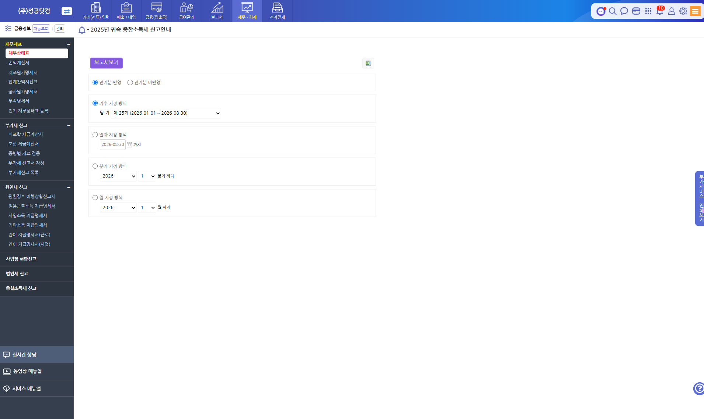
- 2이후 절차는 공통 문서를 따릅니다.
세무 · 회계 > 재무제표 > 손익계산서
손익계산서
일정 기간 동안 얼마를 벌고 얼마를 썼는지 본다
기본 조작은 재무제표 공통 사용법에 정리되어 있습니다. 아래에는 이 화면에만 해당하는 내용만 적었습니다.
따라 하기
- 1상단 세무 · 회계를 클릭한 뒤 재무제표에서 손익계산서를 클릭합니다.
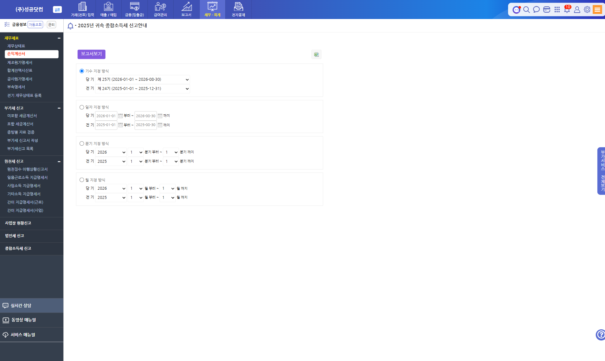
- 2이후 절차는 공통 문서를 따릅니다.
세무 · 회계 > 재무제표 > 제조원가명세서
제조원가명세서
제품을 만드는 데 들어간 원가를 정리해 본다
언제 쓰나
제조업에서 쓴다. 물건을 만들지 않는 업종은 볼 일이 없다.
기본 조작은 재무제표 공통 사용법에 정리되어 있습니다. 아래에는 이 화면에만 해당하는 내용만 적었습니다.
따라 하기
- 1상단 세무 · 회계를 클릭한 뒤 재무제표에서 제조원가명세서를 클릭합니다.
- 2이후 절차는 공통 문서를 따릅니다.
세무 · 회계 > 재무제표 > 합계잔액시산표
합계잔액시산표
모든 계정과목의 합계와 잔액을 한 표로 본다
기본 조작은 재무제표 공통 사용법에 정리되어 있습니다. 아래에는 이 화면에만 해당하는 내용만 적었습니다.
따라 하기
- 1상단 세무 · 회계를 클릭한 뒤 재무제표에서 합계잔액시산표를 클릭합니다.
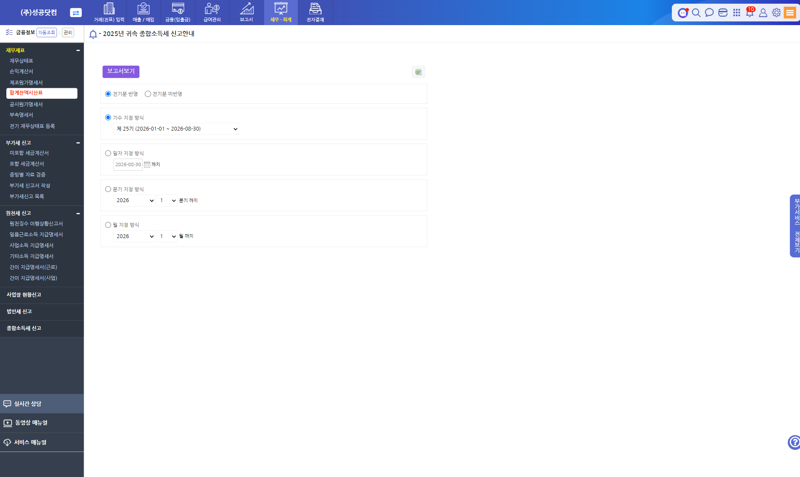
- 2이후 절차는 공통 문서를 따릅니다.
세무 · 회계 > 재무제표 > 공사원가명세서
공사원가명세서
공사에 들어간 원가를 정리해 본다
언제 쓰나
건설업에서 쓴다. 공사를 하지 않는 업종은 볼 일이 없다.
기본 조작은 재무제표 공통 사용법에 정리되어 있습니다. 아래에는 이 화면에만 해당하는 내용만 적었습니다.
따라 하기
- 1상단 세무 · 회계를 클릭한 뒤 재무제표에서 공사원가명세서를 클릭합니다.
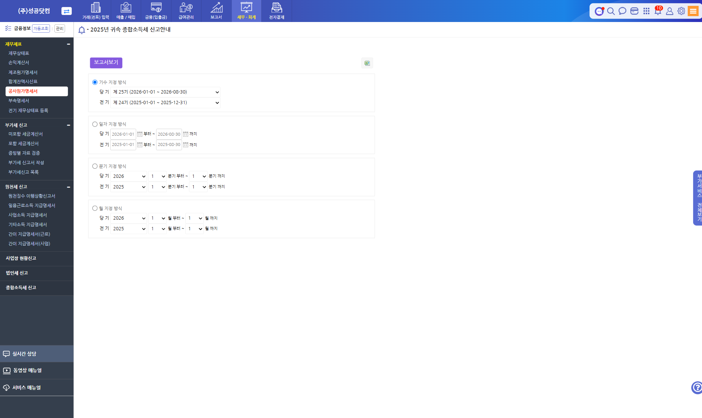
- 2이후 절차는 공통 문서를 따릅니다.
세무 · 회계 > 재무제표 > 부속명세서
부속명세서
재무제표를 뒷받침하는 세부 내역을 본다
기본 조작은 재무제표 공통 사용법에 정리되어 있습니다. 아래에는 이 화면에만 해당하는 내용만 적었습니다.
따라 하기
- 1상단 세무 · 회계를 클릭한 뒤 재무제표에서 부속명세서를 클릭합니다.
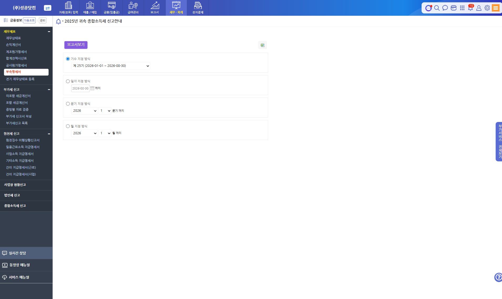
- 2이후 절차는 공통 문서를 따릅니다.
세무 · 회계 > 재무제표 > 전기 재무상태표 등록
전기 재무상태표 등록
지난해 말 잔액을 등록해 올해 장부의 출발점을 만든다
핵심
이 화면은 조회가 아니라 입력이다. 올해 장부는 지난해 말 잔액에서 이어져야 하는데, 서비스를 처음 쓰면 그 출발점이 비어 있다. 전기 재무상태표를 등록해야 이월 잔액이 잡히고 비교 재무제표도 나온다. 처음 도입할 때 한 번 하는 일이다.
기본 조작은 재무제표 공통 사용법에 정리되어 있습니다. 아래에는 이 화면에만 해당하는 내용만 적었습니다.
따라 하기
- 1상단 세무 · 회계를 클릭한 뒤 재무제표에서 전기 재무상태표 등록를 클릭합니다.
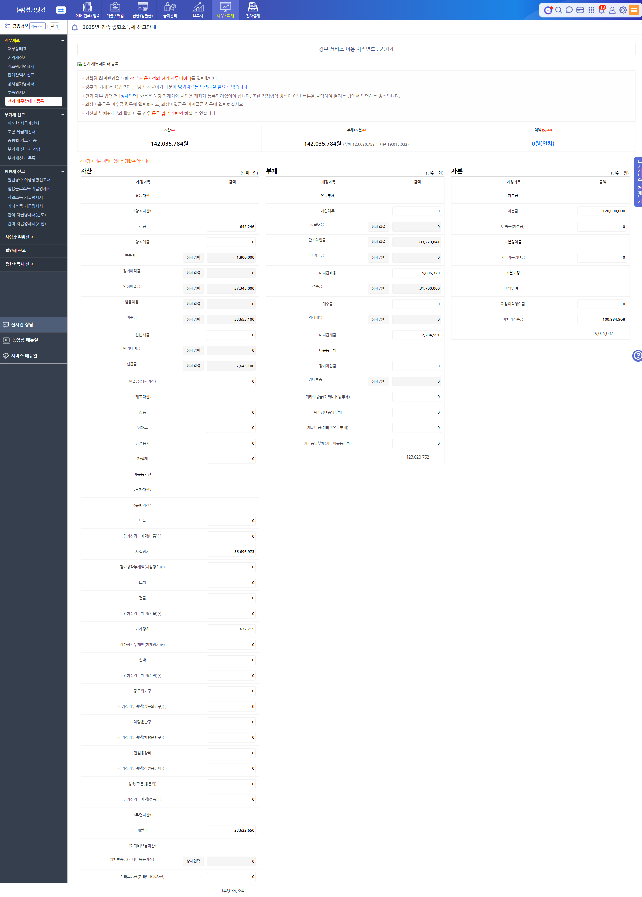
- 2이후 절차는 공통 문서를 따릅니다.
전자결재 > 전자문서함 > 전자문서 보관함
전자문서 보관함
모든 전자문서를 한곳에서 찾아본다
핵심
문서함 중 가장 넓은 곳이다. 어느 함에 있는지 모를 때 여기서 찾으면 된다.
기본 조작은 전자결재 공통 사용법에 정리되어 있습니다. 아래에는 이 화면에만 해당하는 내용만 적었습니다.
이 화면에만 있는 기능
| 조회 조건 | 유형과 상태, 기간, 제목으로 찾습니다. 수신/회람문서 제외를 체크하면 결재 문서만 봅니다. 더 세밀하게 찾으려면 상세검색을 씁니다. |
|---|---|
| 새 결재 작성 | 오른쪽 위 버튼으로 새 문서를 올립니다. |
| 표 항목 | 문서번호, 유형, 제목, 작성자, 결재상태, 작성일 |
따라 하기
- 1상단 전자결재를 클릭합니다.처음 열면 전자문서 보관함이 보입니다.
- 2유형·상태·기간·제목으로 문서를 찾습니다.결재 문서만 보려면 수신/회람문서 제외를 체크합니다.
- 3새 문서를 올리려면 오른쪽 위 새 결재 작성을 클릭합니다.결재선과 문서양식이 미리 만들어져 있어야 합니다.
주의
- 문서를 올리기 전에 관리설정에서 결재라인과 문서양식을 먼저 만들어야 합니다.
자주 묻는 질문
문서가 어디 있는지 모르겠습니다.
여기서 제목이나 기간으로 찾으세요. 모든 문서가 모이는 곳입니다.
새 문서는 어디서 올리나요?
오른쪽 위 새 결재 작성을 클릭합니다.
전자결재 > 전자문서함 > 기안문서
기안문서
내가 올린 문서를 본다
기본 조작은 전자결재 공통 사용법에 정리되어 있습니다. 아래에는 이 화면에만 해당하는 내용만 적었습니다.
따라 하기
- 1상단 전자결재를 클릭한 뒤 전자문서함에서 기안문서을 클릭합니다.
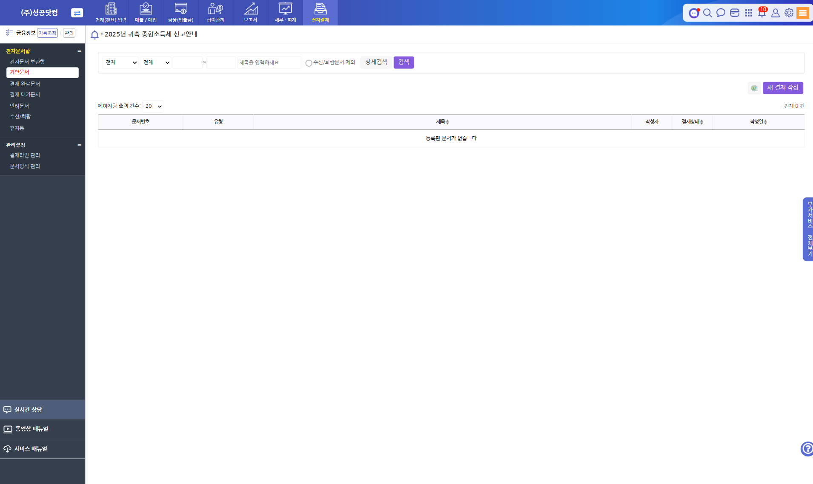
- 2이후 절차는 공통 문서를 따릅니다.
전자결재 > 전자문서함 > 결재 완료문서
결재 완료문서
결재가 끝난 문서를 본다
기본 조작은 전자결재 공통 사용법에 정리되어 있습니다. 아래에는 이 화면에만 해당하는 내용만 적었습니다.
따라 하기
- 1상단 전자결재를 클릭한 뒤 전자문서함에서 결재 완료문서을 클릭합니다.
- 2이후 절차는 공통 문서를 따릅니다.
전자결재 > 전자문서함 > 결재 대기문서
결재 대기문서
내가 결재해야 할 문서를 본다
핵심
다른 사람이 올린 문서 중 내 차례가 된 것만 모인다. 여기 쌓이면 결재가 밀리는 것이므로, 출근해서 가장 먼저 보는 화면이 되는 경우가 많다.
기본 조작은 전자결재 공통 사용법에 정리되어 있습니다. 아래에는 이 화면에만 해당하는 내용만 적었습니다.
따라 하기
- 1상단 전자결재를 클릭한 뒤 전자문서함에서 결재 대기문서을 클릭합니다.
- 2이후 절차는 공통 문서를 따릅니다.
전자결재 > 전자문서함 > 반려문서
반려문서
되돌아온 문서를 본다
핵심
결재자가 되돌려 보낸 문서다. 반려 사유를 확인하고 고쳐서 다시 올린다. 반려는 문서가 사라지는 것이 아니라 기안자에게 돌아오는 것이다.
기본 조작은 전자결재 공통 사용법에 정리되어 있습니다. 아래에는 이 화면에만 해당하는 내용만 적었습니다.
따라 하기
- 1상단 전자결재를 클릭한 뒤 전자문서함에서 반려문서을 클릭합니다.
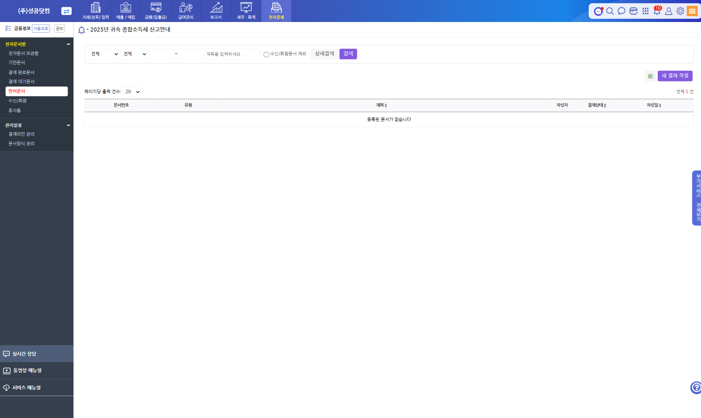
- 2이후 절차는 공통 문서를 따릅니다.
전자결재 > 전자문서함 > 수신/회람
수신/회람
결재가 아니라 알려주려고 돌린 문서를 본다
핵심
결재를 받으려는 것이 아니라 알려주려고 돌린 문서다. 승인이 필요 없고 읽었는지만 확인한다.
기본 조작은 전자결재 공통 사용법에 정리되어 있습니다. 아래에는 이 화면에만 해당하는 내용만 적었습니다.
따라 하기
- 1상단 전자결재를 클릭한 뒤 전자문서함에서 수신/회람을 클릭합니다.
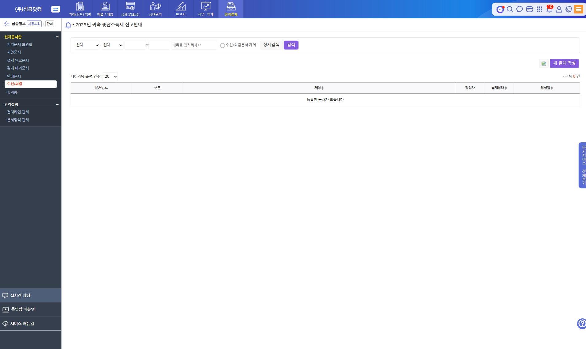
- 2이후 절차는 공통 문서를 따릅니다.
전자결재 > 전자문서함 > 휴지통
휴지통
지운 문서를 임시로 보관한다
핵심
지운 문서가 잠시 머무는 곳이다. 잘못 지웠으면 여기서 되살린다. 완전히 지우려면 휴지통에서 영구 삭제한다. 영구 삭제한 문서는 되살릴 수 없다.
기본 조작은 전자결재 공통 사용법에 정리되어 있습니다. 아래에는 이 화면에만 해당하는 내용만 적었습니다.
따라 하기
- 1상단 전자결재를 클릭한 뒤 전자문서함에서 휴지통을 클릭합니다.
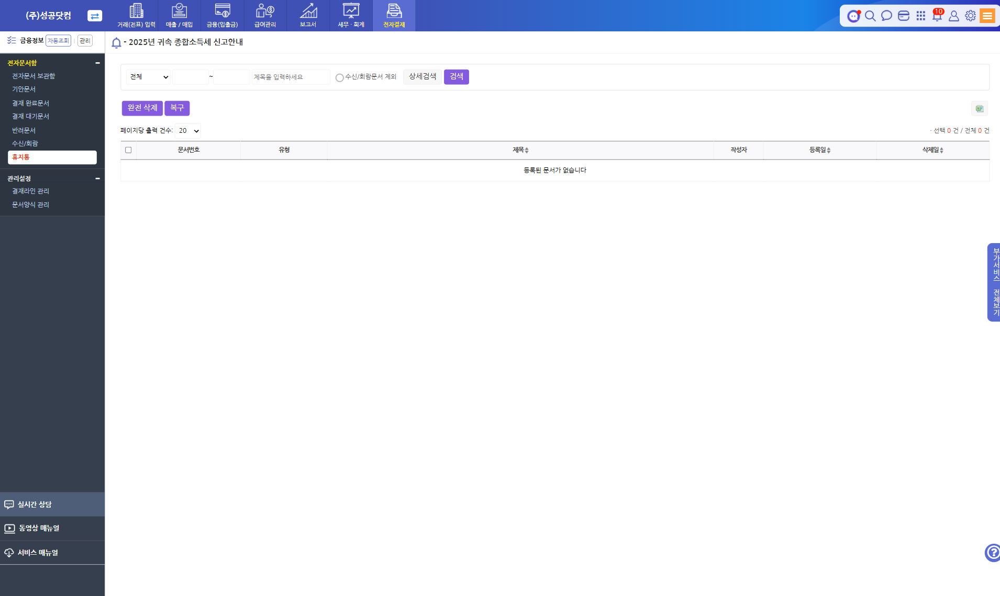
- 2이후 절차는 공통 문서를 따릅니다.
전자결재 > 관리설정 > 결재라인 관리
결재라인 관리
문서가 누구를 거쳐 결재될지 미리 정해 둔다
핵심
문서를 올리기 전에 결재선이 있어야 한다. 자주 쓰는 경로를 이름 붙여 만들어 두고, 문서를 올릴 때 그 결재선을 고른다. 결재선 하나에 세 가지를 지정한다. 결재자, 회람, 수신이다.
결재 역할 세 가지
| 결재자 | 순서대로 승인해야 하는 사람입니다. 이 사람들이 결재를 마쳐야 문서가 완료됩니다. |
|---|---|
| 회람 | 승인은 필요 없고 내용만 알려 줄 사람입니다. |
| 수신 | 문서를 받아 볼 사람입니다. |
기본 조작은 전자결재 공통 사용법에 정리되어 있습니다. 아래에는 이 화면에만 해당하는 내용만 적었습니다.
이 화면에만 있는 기능
| 결재선 추가 | 오른쪽 위 버튼으로 새 결재선을 만듭니다. |
|---|---|
| 결재선 이름 | 각 결재선에 이름을 붙입니다. "대표 결재"처럼 용도를 알아볼 수 있게 짓습니다. |
| 수정 / 삭제 | 결재선마다 오른쪽 위에 수정과 삭제 버튼이 있습니다. |
따라 하기
- 1상단 전자결재를 클릭한 뒤 왼쪽 관리설정에서 결재라인 관리를 클릭합니다.
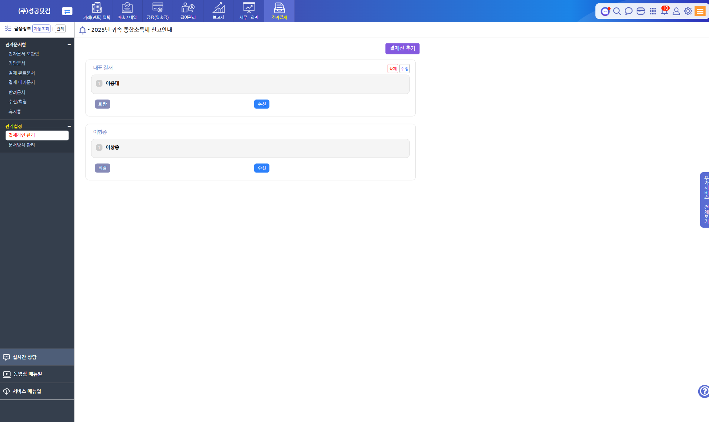
- 2오른쪽 위 결재선 추가를 클릭해 새 결재선을 만듭니다.
- 3결재자를 순서대로 지정하고, 필요하면 회람과 수신도 넣습니다.결재자는 순서가 중요합니다. 앞사람이 승인해야 다음으로 넘어갑니다.
- 4만든 결재선은 수정으로 고치고, 필요 없으면 삭제합니다.
주의
- 결재선이 없으면 문서를 올릴 수 없습니다. 전자결재를 처음 쓸 때 여기부터 만드세요.
- 결재자 순서가 곧 결재 순서입니다. 순서를 잘못 넣으면 엉뚱한 사람에게 먼저 갑니다.
- 결재선을 바꿔도 이미 진행 중인 문서에는 반영되지 않을 수 있습니다.
자주 묻는 질문
결재선을 여러 개 만들 수 있나요?
네. 용도별로 만들어 두고 문서를 올릴 때 고르면 됩니다. 예를 들어 소액 지출용과 고액 지출용을 따로 만들 수 있습니다.
회람과 수신은 뭐가 다른가요?
None
결재자를 중간에 바꾸고 싶습니다.
결재선을 수정하면 다음에 올리는 문서부터 적용됩니다.
전자결재 > 관리설정 > 문서양식 관리
문서양식 관리
자주 쓰는 문서의 서식을 만들어 둔다
핵심
자주 쓰는 문서를 서식으로 만들어 두면 매번 처음부터 쓰지 않아도 된다. 지출결의서, 휴가신청서처럼 형식이 정해진 문서에 쓴다.
기본 조작은 전자결재 공통 사용법에 정리되어 있습니다. 아래에는 이 화면에만 해당하는 내용만 적었습니다.
따라 하기
- 1상단 전자결재를 클릭한 뒤 관리설정에서 문서양식 관리을 클릭합니다.
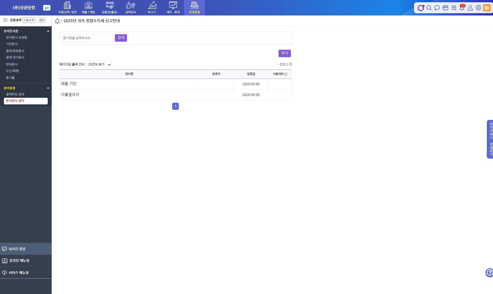
- 2이후 절차는 공통 문서를 따릅니다.
금융(입출금) > 입출금 내역 > 입출금 내역 조회
입출금 내역 조회
통장에 들어오고 나간 내역을 한곳에서 조회한다
핵심
은행과 카드사에서 가져온 통장 거래가 모두 모이는 곳이다. 화면 위에 "은행/금융사 통장내역 가져오기를 통해 수집한 전표입니다"라고 적혀 있다. 여기 있는 자료를 가지고 아래 수납·지급 확인을 한다.
기본 조작은 수납·지급 확인 공통 사용법에 정리되어 있습니다. 아래에는 이 화면에만 해당하는 내용만 적었습니다.
표에 보이는 항목
- 일자
- 구분
- 계좌정보
- 입금
- 출금
- 잔액
- 적요
- 메모
따라 하기
- 1상단 금융(입출금)을 클릭한 뒤 왼쪽 입출금 내역에서 입출금 내역 조회을 클릭합니다.
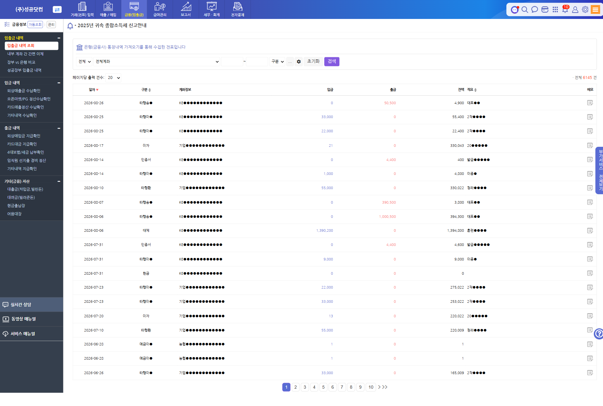
금융(입출금) > 입출금 내역 > 내부 계좌 간 간편 이체
내부 계좌 간 간편 이체
우리 계좌끼리 옮긴 돈을 처리한다
기본 조작은 수납·지급 확인 공통 사용법에 정리되어 있습니다. 아래에는 이 화면에만 해당하는 내용만 적었습니다.
따라 하기
- 1상단 금융(입출금)을 클릭한 뒤 왼쪽 입출금 내역에서 내부 계좌 간 간편 이체을 클릭합니다.
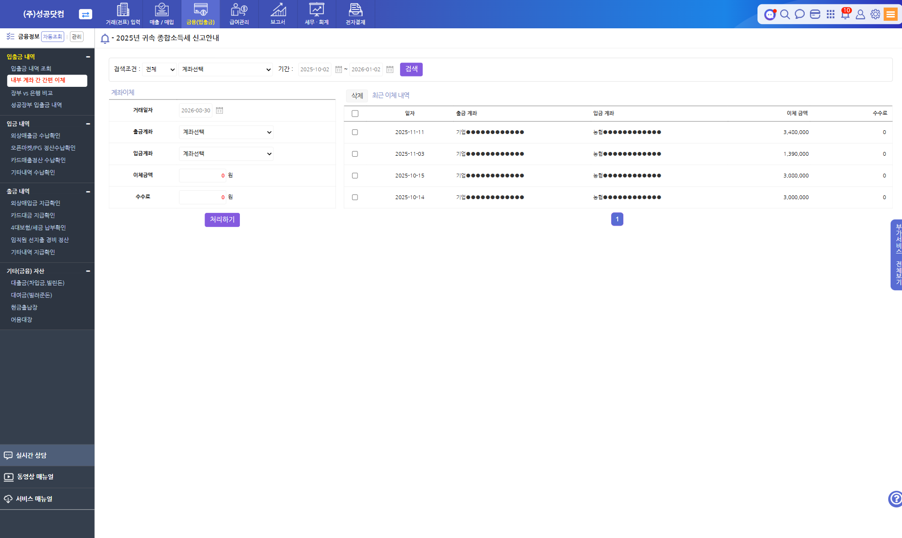
금융(입출금) > 입출금 내역 > 장부 vs 은행 비교
장부 vs 은행 비교
장부 잔액과 실제 은행 잔액이 맞는지 비교한다
기본 조작은 수납·지급 확인 공통 사용법에 정리되어 있습니다. 아래에는 이 화면에만 해당하는 내용만 적었습니다.
따라 하기
- 1상단 금융(입출금)을 클릭한 뒤 왼쪽 입출금 내역에서 장부 vs 은행 비교을 클릭합니다.
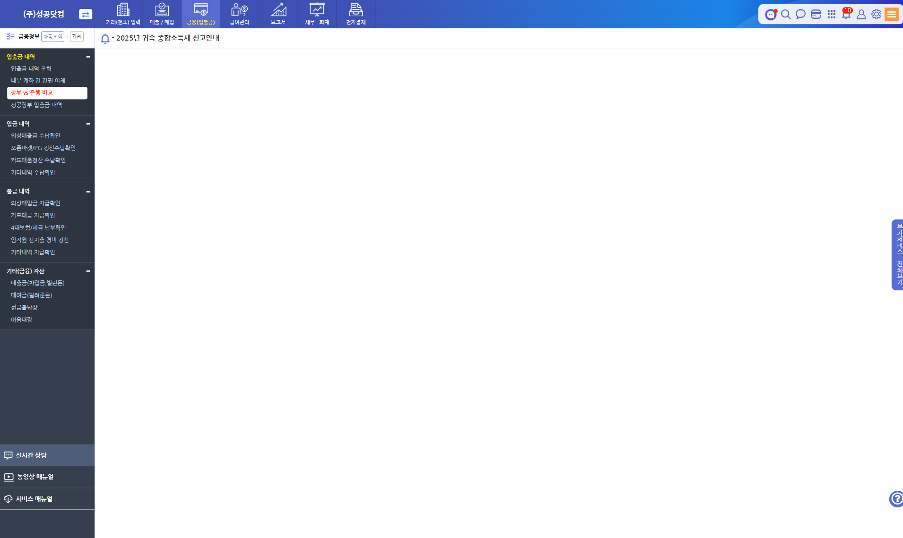
금융(입출금) > 입출금 내역 > 성공장부 입출금 내역
성공장부 입출금 내역
성공장부에 기록된 입출금을 조회한다
기본 조작은 수납·지급 확인 공통 사용법에 정리되어 있습니다. 아래에는 이 화면에만 해당하는 내용만 적었습니다.
따라 하기
- 1상단 금융(입출금)을 클릭한 뒤 왼쪽 입출금 내역에서 성공장부 입출금 내역을 클릭합니다.
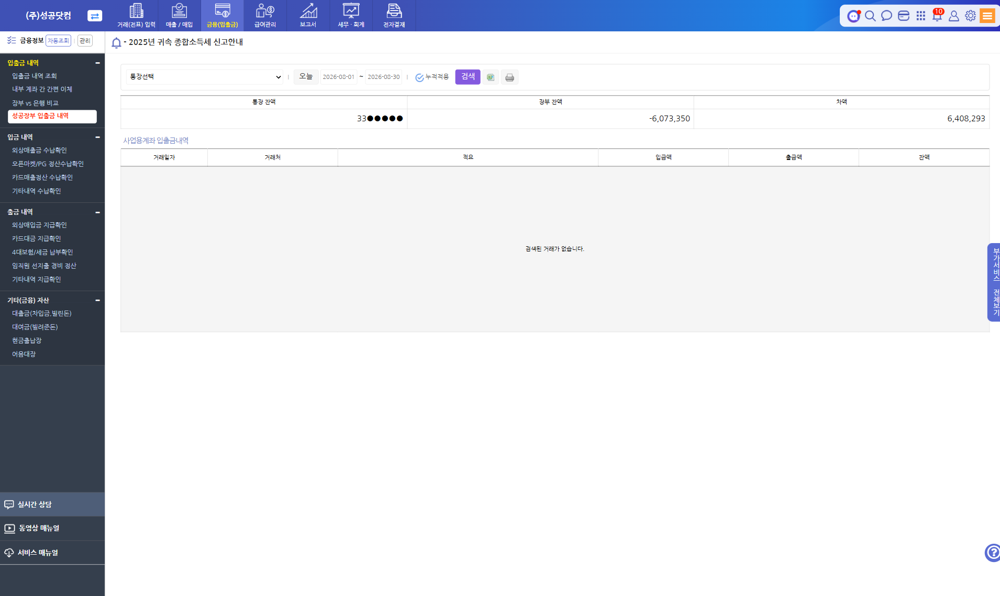
금융(입출금) > 입금 내역 > 외상매출금 수납확인
외상매출금 수납확인
매출로 잡았지만 아직 못 받은 돈이 실제로 들어왔는지 맞춘다
기본 조작은 수납·지급 확인 공통 사용법에 정리되어 있습니다. 아래에는 이 화면에만 해당하는 내용만 적었습니다.
따라 하기
- 1상단 금융(입출금)을 클릭한 뒤 왼쪽 입금 내역에서 외상매출금 수납확인을 클릭합니다.
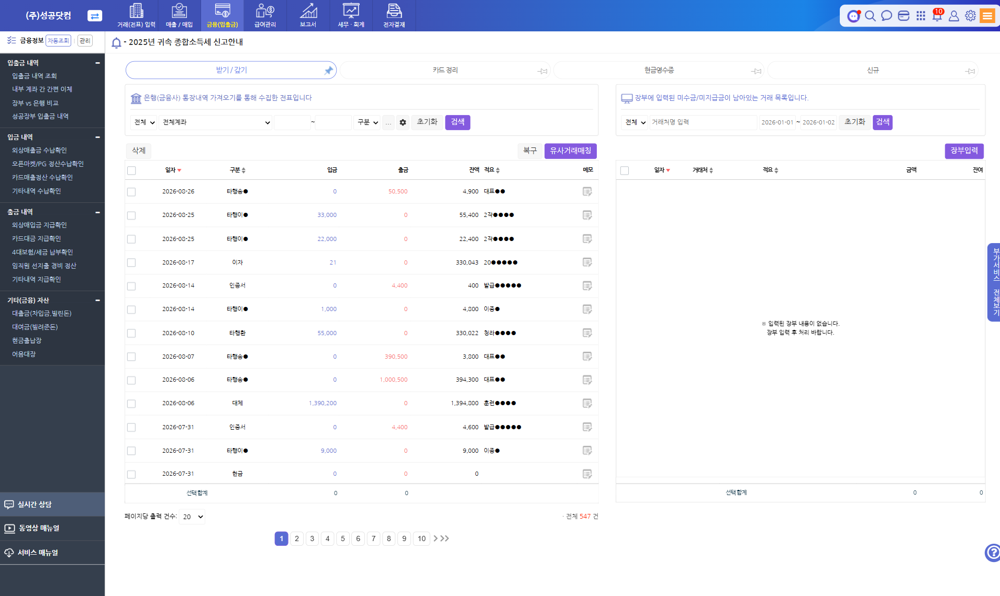
금융(입출금) > 입금 내역 > 오픈마켓/PG 정산수납확인
오픈마켓/PG 정산수납확인
오픈마켓과 결제대행사에서 정산받은 돈을 맞춘다
기본 조작은 수납·지급 확인 공통 사용법에 정리되어 있습니다. 아래에는 이 화면에만 해당하는 내용만 적었습니다.
따라 하기
- 1상단 금융(입출금)을 클릭한 뒤 왼쪽 입금 내역에서 오픈마켓/PG 정산수납확인을 클릭합니다.
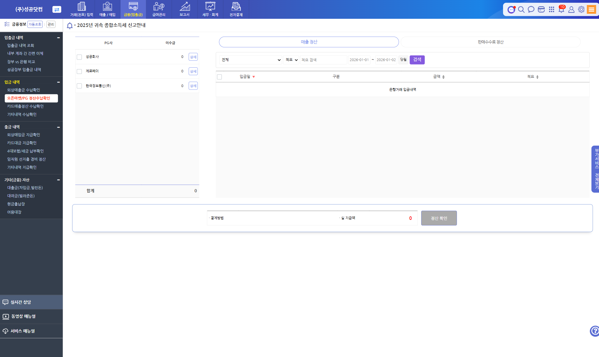
금융(입출금) > 입금 내역 > 카드매출정산 수납확인
카드매출정산 수납확인
카드 매출이 언제 얼마로 정산되어 들어왔는지 맞춘다
기본 조작은 수납·지급 확인 공통 사용법에 정리되어 있습니다. 아래에는 이 화면에만 해당하는 내용만 적었습니다.
따라 하기
- 1상단 금융(입출금)을 클릭한 뒤 왼쪽 입금 내역에서 카드매출정산 수납확인을 클릭합니다.
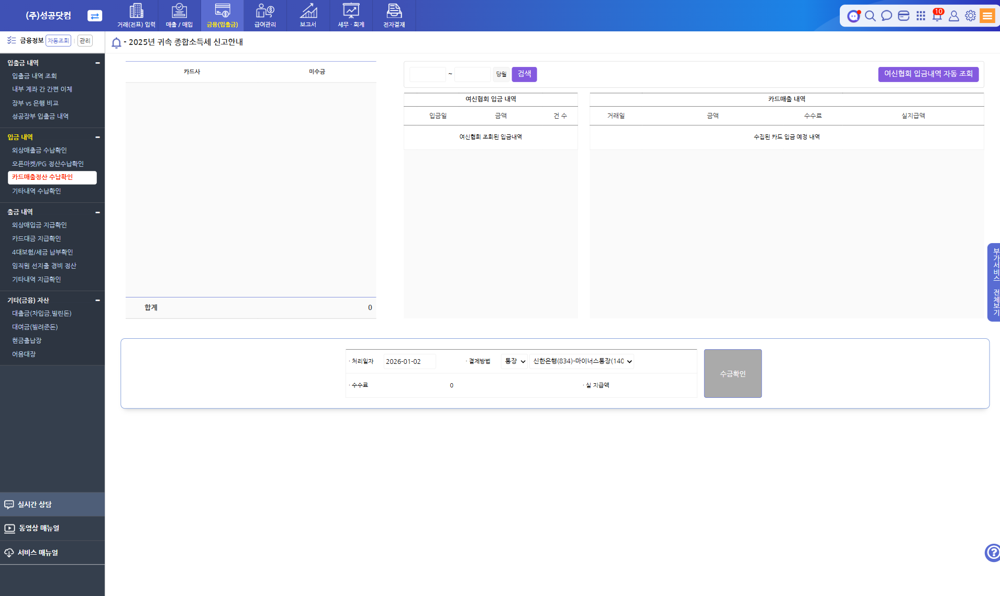
금융(입출금) > 입금 내역 > 기타내역 수납확인
기타내역 수납확인
위에 해당하지 않는 입금을 맞춘다
기본 조작은 수납·지급 확인 공통 사용법에 정리되어 있습니다. 아래에는 이 화면에만 해당하는 내용만 적었습니다.
따라 하기
- 1상단 금융(입출금)을 클릭한 뒤 왼쪽 입금 내역에서 기타내역 수납확인을 클릭합니다.
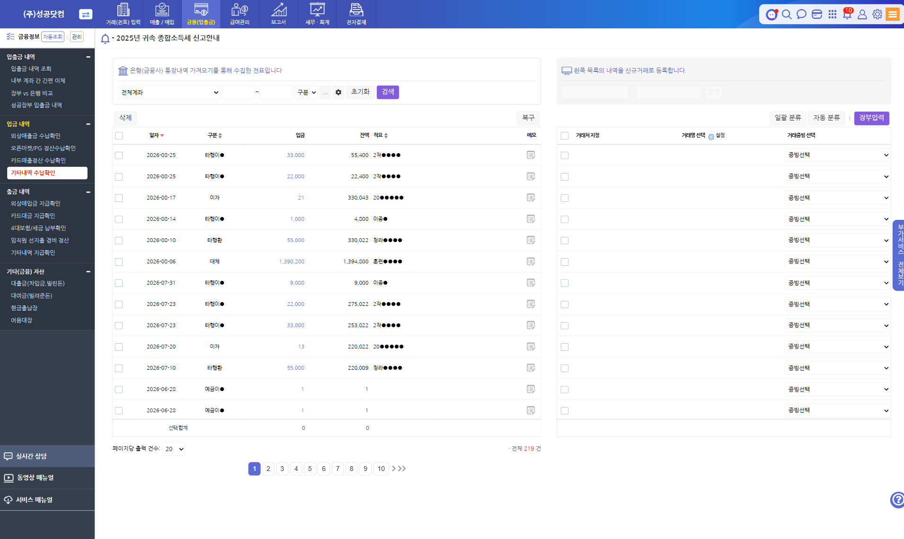
금융(입출금) > 출금 내역 > 외상매입금 지급확인
외상매입금 지급확인
매입으로 잡았지만 아직 안 준 돈이 실제로 나갔는지 맞춘다
기본 조작은 수납·지급 확인 공통 사용법에 정리되어 있습니다. 아래에는 이 화면에만 해당하는 내용만 적었습니다.
따라 하기
- 1상단 금융(입출금)을 클릭한 뒤 왼쪽 출금 내역에서 외상매입금 지급확인을 클릭합니다.
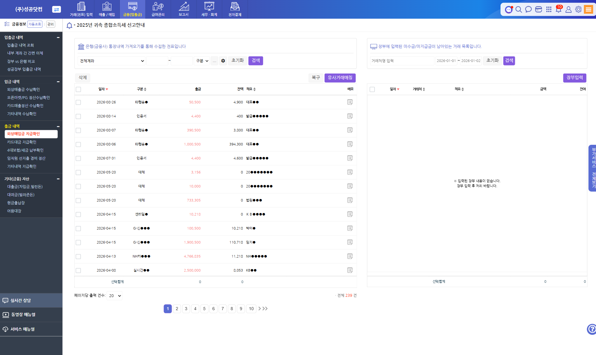
금융(입출금) > 출금 내역 > 카드대금 지급확인
카드대금 지급확인
카드 대금이 결제일에 얼마나 빠져나갔는지 맞춘다
기본 조작은 수납·지급 확인 공통 사용법에 정리되어 있습니다. 아래에는 이 화면에만 해당하는 내용만 적었습니다.
이 화면에만 있는 기능
| 지급처리 / 카드사용내역 탭 | 정산을 처리하는 지급처리와, 카드로 쓴 내역을 보는 카드사용내역으로 나뉩니다. |
|---|---|
| 카드사별 미지급금 | 왼쪽에 카드사별로 아직 결제되지 않은 금액이 나옵니다. 맨 아래 합계가 지금 갚아야 할 카드 대금 전체입니다. |
| 상세 | 카드사별로 어떤 거래가 미지급으로 남아 있는지 봅니다. |
| 은행거래 출금내역 | 오른쪽에 통장에서 나간 내역이 나옵니다. 기간과 적요로 찾습니다. |
따라 하기
- 1상단 금융(입출금)을 클릭한 뒤 왼쪽 출금 내역에서 카드대금 지급확인을 클릭합니다.처음 열면 지급처리 탭이 보입니다.
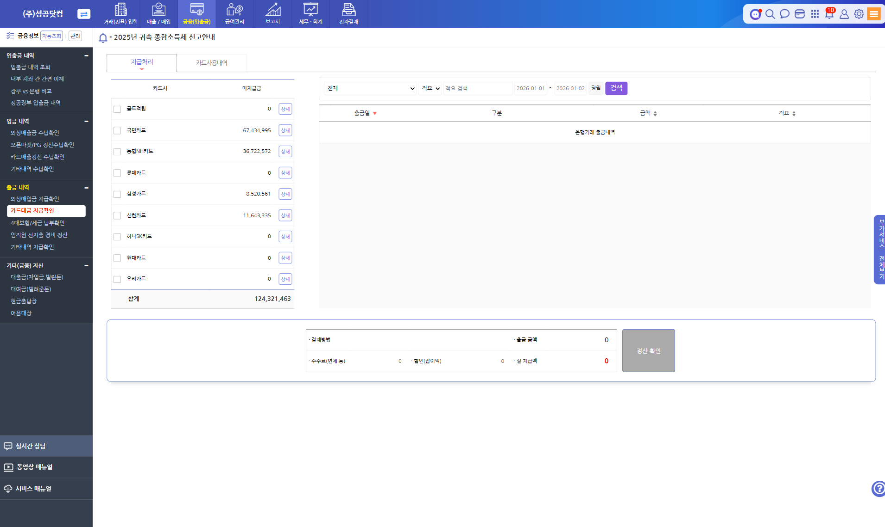
- 2카드로 쓴 내역만 보려면 카드사용내역 탭을 클릭합니다.
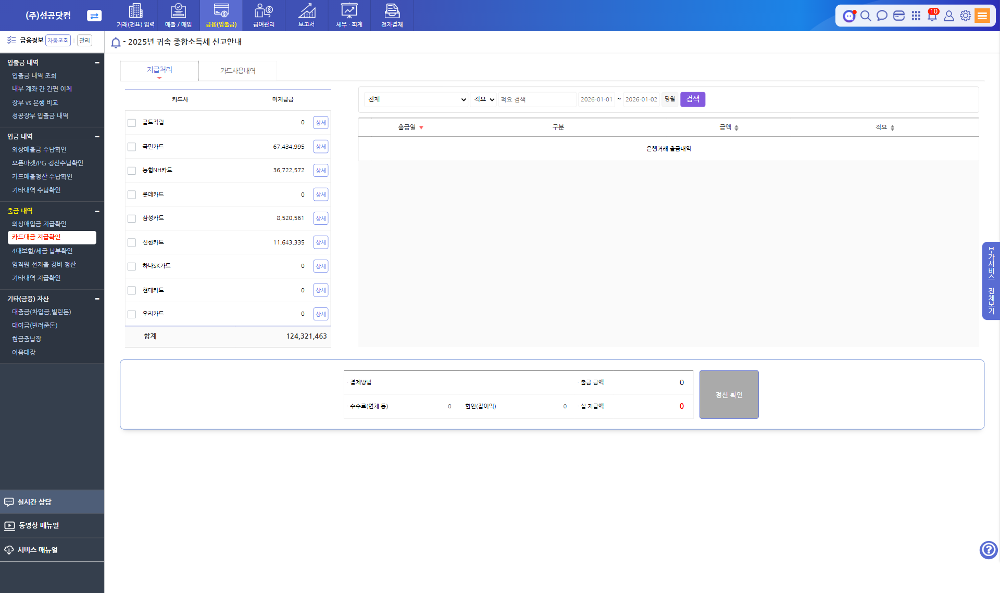
금융(입출금) > 출금 내역 > 4대보험/세금 납부확인
4대보험/세금 납부확인
4대보험료와 세금이 실제로 납부되었는지 맞춘다
기본 조작은 수납·지급 확인 공통 사용법에 정리되어 있습니다. 아래에는 이 화면에만 해당하는 내용만 적었습니다.
따라 하기
- 1상단 금융(입출금)을 클릭한 뒤 왼쪽 출금 내역에서 4대보험/세금 납부확인을 클릭합니다.
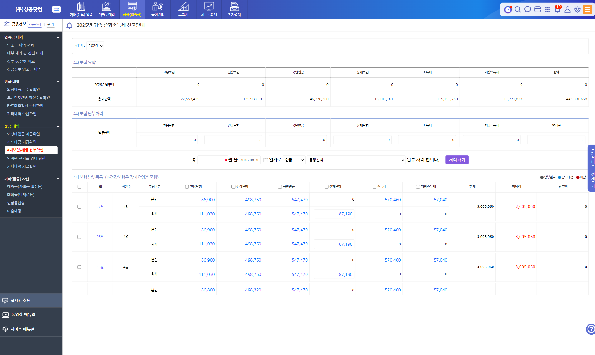
금융(입출금) > 출금 내역 > 임직원 선지출 경비 정산
임직원 선지출 경비 정산
직원이 먼저 쓴 돈을 정산해 준 내역을 맞춘다
기본 조작은 수납·지급 확인 공통 사용법에 정리되어 있습니다. 아래에는 이 화면에만 해당하는 내용만 적었습니다.
따라 하기
- 1상단 금융(입출금)을 클릭한 뒤 왼쪽 출금 내역에서 임직원 선지출 경비 정산을 클릭합니다.
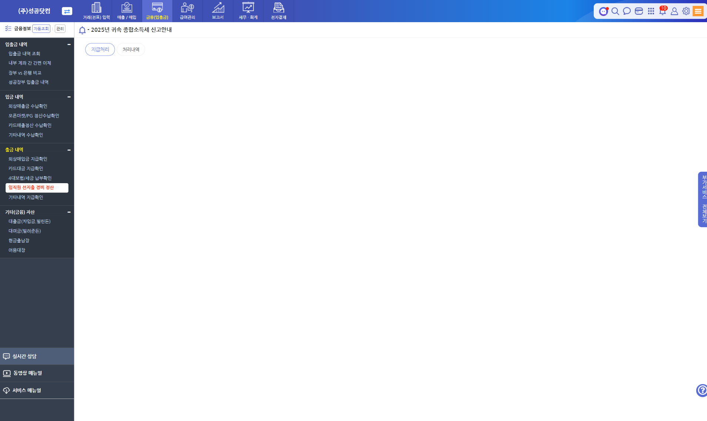
금융(입출금) > 출금 내역 > 기타내역 지급확인
기타내역 지급확인
위에 해당하지 않는 출금을 맞춘다
기본 조작은 수납·지급 확인 공통 사용법에 정리되어 있습니다. 아래에는 이 화면에만 해당하는 내용만 적었습니다.
따라 하기
- 1상단 금융(입출금)을 클릭한 뒤 왼쪽 출금 내역에서 기타내역 지급확인을 클릭합니다.
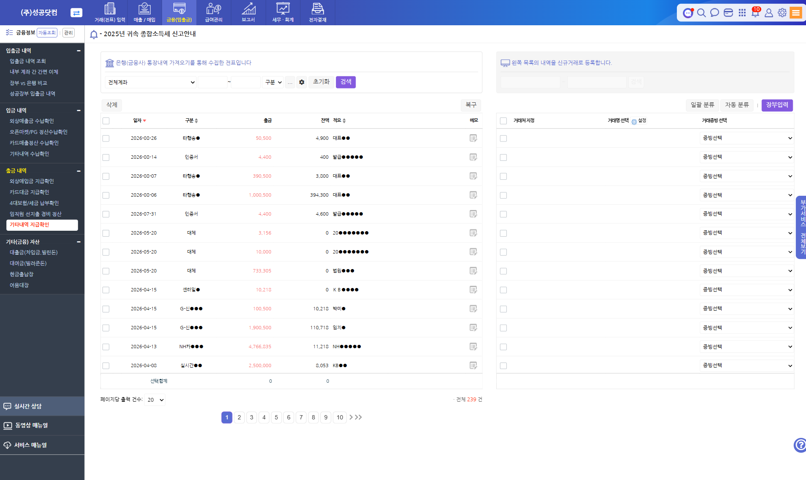
금융(입출금) > 기타(금융) 자산 > 대출금(차입금,빌린돈)
대출금(차입금,빌린돈)
빌린 돈을 등록하고 남은 원금과 이자를 관리한다
기본 조작은 기타금융자산 공통 사용법에 정리되어 있습니다. 아래에는 이 화면에만 해당하는 내용만 적었습니다.
따라 하기
- 1상단 금융(입출금)을 클릭한 뒤 왼쪽 기타(금융) 자산에서 대출금(차입금,빌린돈)을 클릭합니다.
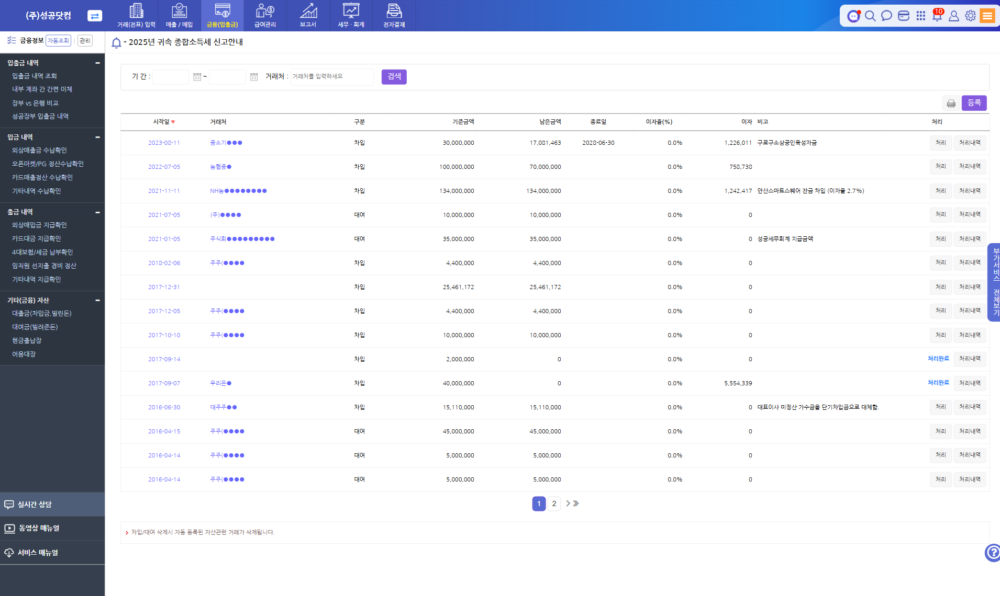
금융(입출금) > 기타(금융) 자산 > 대여금(빌려준돈)
대여금(빌려준돈)
빌려준 돈을 등록하고 회수 상황을 관리한다
기본 조작은 기타금융자산 공통 사용법에 정리되어 있습니다. 아래에는 이 화면에만 해당하는 내용만 적었습니다.
따라 하기
- 1상단 금융(입출금)을 클릭한 뒤 왼쪽 기타(금융) 자산에서 대여금(빌려준돈)을 클릭합니다.
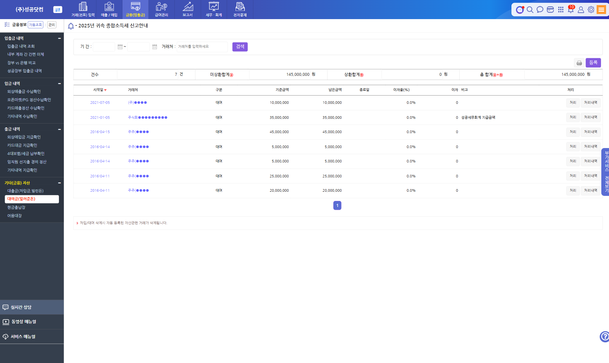
금융(입출금) > 기타(금융) 자산 > 현금출납장
현금출납장
현금이 들어오고 나간 내역을 기록한다
기본 조작은 기타금융자산 공통 사용법에 정리되어 있습니다. 아래에는 이 화면에만 해당하는 내용만 적었습니다.
따라 하기
- 1상단 금융(입출금)을 클릭한 뒤 왼쪽 기타(금융) 자산에서 현금출납장을 클릭합니다.
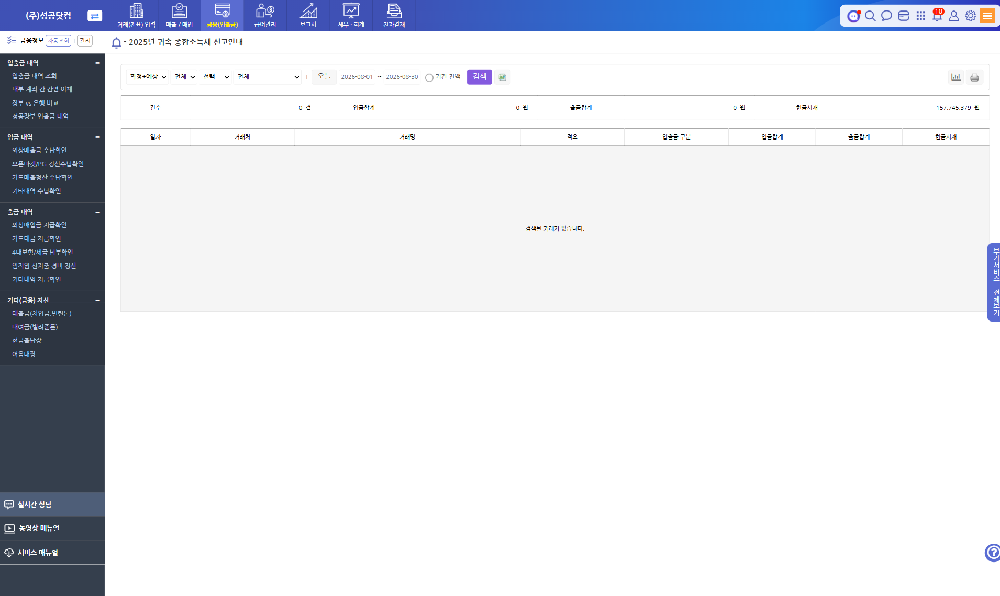
금융(입출금) > 기타(금융) 자산 > 어음대장
어음대장
받은 어음과 준 어음을 관리한다
기본 조작은 기타금융자산 공통 사용법에 정리되어 있습니다. 아래에는 이 화면에만 해당하는 내용만 적었습니다.
따라 하기
- 1상단 금융(입출금)을 클릭한 뒤 왼쪽 기타(금융) 자산에서 어음대장을 클릭합니다.
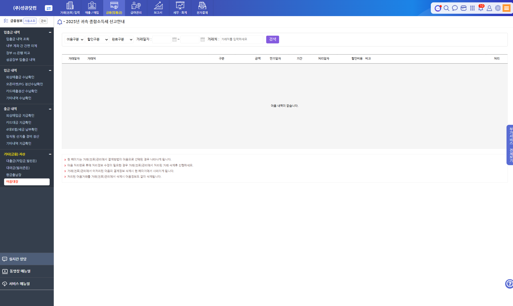
영업(재고) 관리 > 거래명세서 입력 / 관리
거래명세서 입력 / 관리
거래명세서를 작성하고 장부에 넣는다
핵심
거래명세서를 쓰면서 품목과 수량을 넣고 장부입력을 누르면 전표 등록과 재고 반영이 한꺼번에 일어난다. 따로 재고를 맞추는 작업이 필요 없다. 매출 / 매입에서 전표를 등록해도 마찬가지로 재고에 반영된다.
먼저 할 일
성공 앱에서 메뉴 켜기
상단 메뉴에 영업(재고) 관리가 없으면, 오른쪽 위 성공 앱을 열고 영업(재고)관리를 클릭해 켠다. 한 번 켜면 계속 보인다.
기본 조작은 영업(재고) 관리 공통 사용법에 정리되어 있습니다. 아래에는 이 화면에만 해당하는 내용만 적었습니다.
이 화면에만 있는 기능
| 거래명세서 입력 탭 | 명세서를 새로 작성하는 곳입니다. |
|---|---|
| 거래명세서 출력관리 탭 | 작성한 명세서를 찾아보고 출력하는 곳입니다. |
| 매출 / 매입 선택 | 파는 것인지 사는 것인지 먼저 고릅니다. 입고와 출고가 이걸로 갈립니다. |
| 거래명 고정 | 같은 거래명을 계속 쓸 때 고정해 두면 매번 고르지 않아도 됩니다. |
| 신규 표시 | 거래처나 상품이 등록되어 있지 않으면 신규로 표시됩니다. 거래처는 이 화면에서 바로 등록할 수 있습니다. 상품은 상품 등록 / 관리에서 먼저 등록해야 여기서 불러올 수 있습니다. |
| 장부입력 | 명세서를 전표로 등록합니다. 이때 재고도 함께 반영됩니다. |
따라 하기
- 1상단 영업(재고) 관리를 클릭한 뒤 왼쪽에서 거래명세서 입력 / 관리를 클릭합니다.처음 열면 거래명세서 입력 탭이 보입니다.
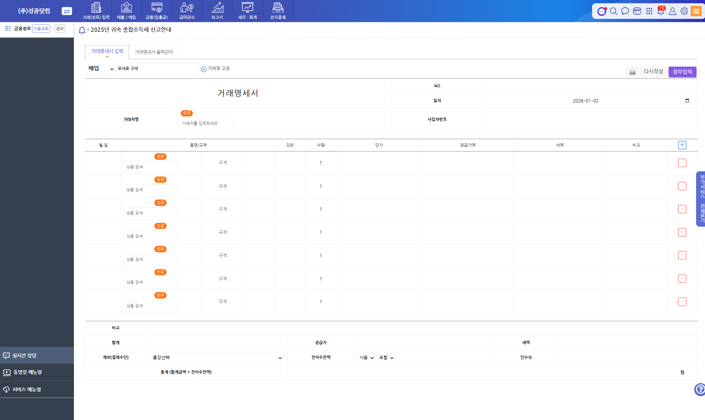
- 2매출인지 매입인지 고르고, 거래처와 품목·수량을 입력합니다.등록되지 않은 거래처나 상품에는 신규 표시가 붙습니다.
- 3장부입력을 클릭합니다.전표가 등록되면서 재고에도 함께 반영됩니다.
- 4작성한 명세서를 찾아보려면 거래명세서 출력관리 탭을 클릭합니다.
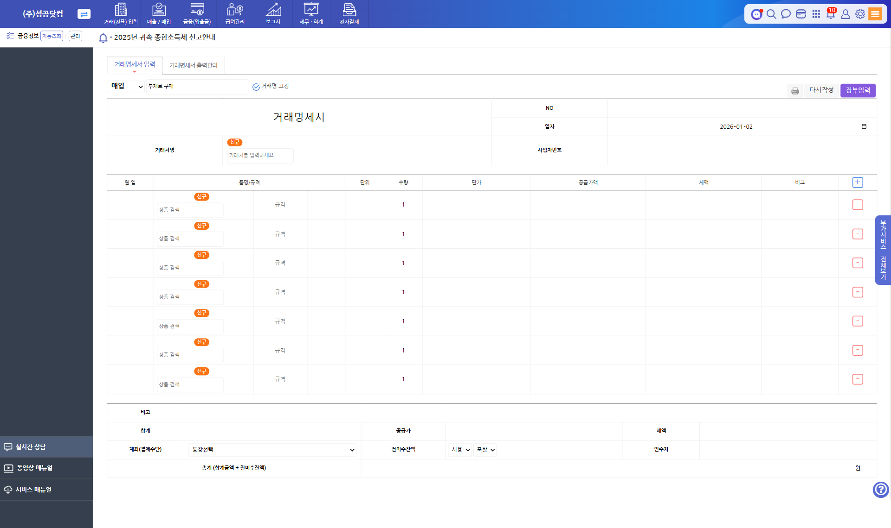
영업(재고) 관리 > 영업일보
영업일보
거래처별로 영업 활동과 업무 내용을 기록하고 이력을 남긴다
핵심
이름과 달리 재고를 다루는 화면이 아니다. 거래처를 상대로 한 영업 활동을 기록하는 곳이다. 누구와 언제 무슨 이야기를 했고 어떻게 처리했는지가 쌓인다. 담당자가 바뀌어도 이력이 남아 인수인계에 쓸 수 있다.
기본 조작은 영업(재고) 관리 공통 사용법에 정리되어 있습니다. 아래에는 이 화면에만 해당하는 내용만 적었습니다.
이 화면에만 있는 기능
| 전체 업무일지 / 내 업무일지 | 전체는 모든 사람이 쓴 것, 내 것만 보려면 내 업무일지를 봅니다. |
|---|---|
| 거래내역 | 그 거래처와 실제로 오간 거래를 봅니다. |
| 자물쇠 표시 | None |
| 마감일 | 기한이 지난 건은 붉게 표시됩니다. |
| 등록 | 새 업무일지를 씁니다. |
따라 하기
- 1상단 영업(재고) 관리를 클릭한 뒤 왼쪽에서 영업일보를 클릭합니다.
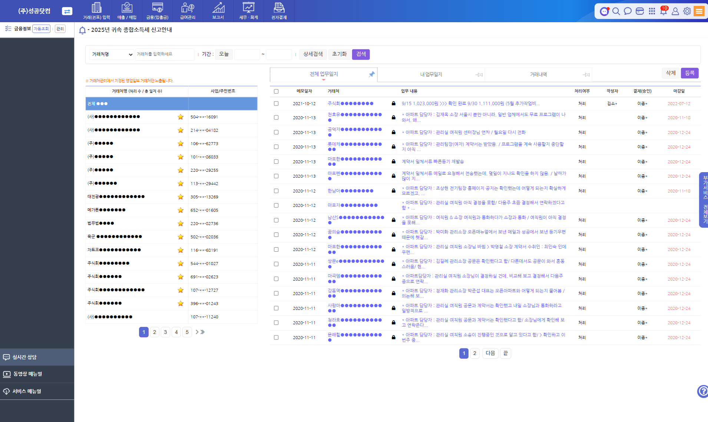
- 2왼쪽에서 거래처를 고르고, 오른쪽에서 그 거래처의 업무일지를 봅니다.
- 3새로 쓰려면 오른쪽 위 등록을 클릭합니다.
주의
- 거래처관리에서 지정한 거래처만 왼쪽 목록에 나옵니다. 안 보이면 거래처 설정을 확인하세요.
- 마감일이 지난 건은 붉게 표시됩니다. 처리 여부를 함께 확인하세요.
자주 묻는 질문
영업일보에 거래처가 안 보입니다.
거래처관리에서 영업일보에 노출하도록 지정해야 나옵니다.
영업(재고) 관리 > 입고 / 출고 현황
입고 / 출고 현황
물건이 들어오고 나간 내역과 남은 수량을 조회한다
핵심
입고와 출고는 직접 입력하는 것이 아니라 거래에서 자동으로 만들어진다. 매입 전표나 매입 거래명세서를 넣으면 입고, 매출이면 출고로 잡힌다. 그래서 이 화면은 기록하는 곳이 아니라 결과를 확인하는 곳이다.
기본 조작은 영업(재고) 관리 공통 사용법에 정리되어 있습니다. 아래에는 이 화면에만 해당하는 내용만 적었습니다.
이 화면에만 있는 기능
| 입/출고 · 구분 · 상품명 조회 | 입고만 볼지 출고만 볼지 고르고, 상품명으로 좁힐 수 있습니다. |
|---|---|
| 재고관리 상품 | 재고를 관리하는 상품만 골라 봅니다. |
| 거래명세서 발행 | 조회된 내역으로 거래명세서를 만듭니다. |
| 표 항목 | 거래일자, 입/출고일, 구분, 거래처, 현재일, 상품명, 상품코드, 규격, 단위, 단가, 입고수량, 출고수량, 공급가액, 등록자 |
따라 하기
- 1상단 영업(재고) 관리를 클릭한 뒤 왼쪽에서 입고 / 출고 현황을 클릭합니다.
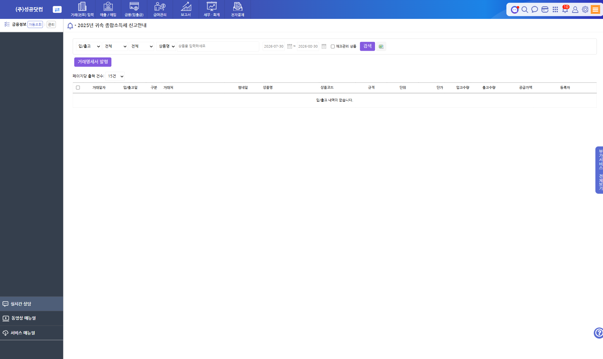
- 2기간과 조건을 정하고 검색을 클릭합니다.기본 기간이 최근 한 달로 잡혀 있습니다. 더 오래된 내역은 기간을 넓히세요.
주의
- 여기서 수량을 직접 고칠 수 없습니다. 거래를 바로잡아야 재고가 맞습니다.
- 내역이 비어 있다면 조회 기간이 짧거나, 그 기간의 거래가 장부에 안 들어간 것입니다.
자주 묻는 질문
입/출고 내역이 없다고 나옵니다.
조회 기간을 넓혀 보세요. 그래도 없으면 그 기간에 재고가 움직인 거래가 장부에 들어가지 않은 것입니다.
영업(재고) 관리 > 상품 등록 / 관리
상품 등록 / 관리
취급하는 상품을 등록하고 재고 현황을 관리한다
핵심
거래명세서와 전표에서 고를 상품을 미리 등록해 두는 곳이다. 등록해 두면 명세서를 쓸 때 검색으로 불러올 수 있고, 상품별로 매입매출과 재고가 집계된다.
기본 조작은 영업(재고) 관리 공통 사용법에 정리되어 있습니다. 아래에는 이 화면에만 해당하는 내용만 적었습니다.
이 화면에만 있는 기능
| 초기재고 · 현재고 · 연관재고 | 처음 등록할 때 넣은 수량, 지금 남은 수량, 연결된 재고 수량입니다. 현재고가 음수로 붉게 나오면 출고가 입고보다 많다는 뜻입니다. |
|---|---|
| 상품분류 | 매출용인지 매입용인지, 둘 다인지 표시됩니다. |
| 썸네일 · 상품이미지 노출 | 상품 사진을 등록하고, 목록에 보일지 켜고 끕니다. |
| 일괄등록 | 여러 상품을 한꺼번에 등록합니다. |
| 분류관리 | 상품을 묶을 분류를 관리합니다. |
| 현황조회 | 그 상품의 입출고 내역을 봅니다. |
따라 하기
- 1상단 영업(재고) 관리를 클릭한 뒤 왼쪽에서 상품 등록 / 관리를 클릭합니다.
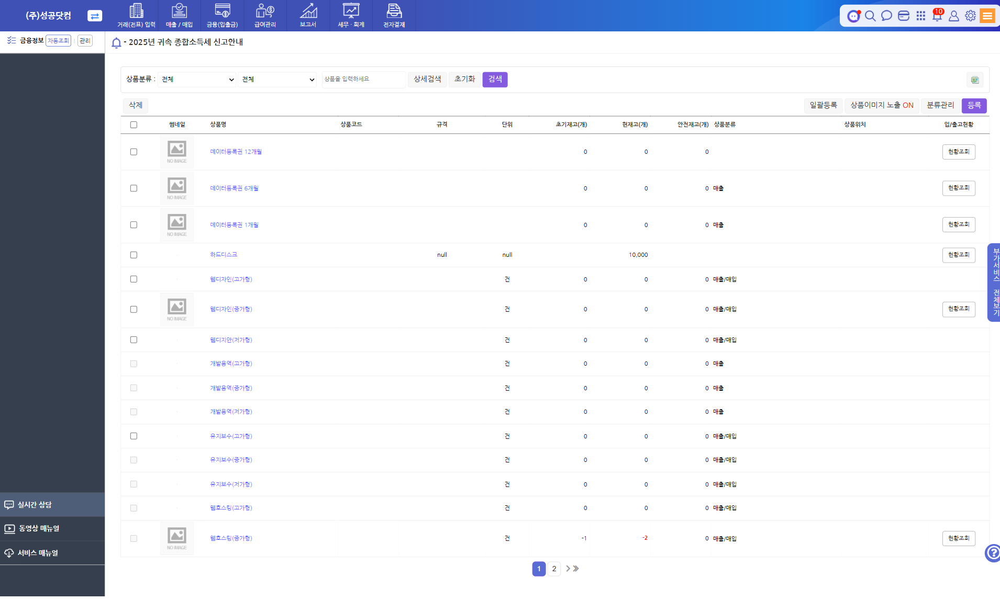
- 2오른쪽 위 등록을 클릭해 상품을 추가합니다.여러 개를 한꺼번에 넣으려면 일괄등록을 사용합니다.
주의
- 현재고가 음수로 나오면 출고가 입고보다 많은 것입니다. 빠뜨린 매입이 있는지 확인하세요.
- 상품을 지우면 그 상품이 들어간 과거 거래에 영향이 갈 수 있습니다.
자주 묻는 질문
현재고가 마이너스로 나옵니다.
판 수량이 산 수량보다 많다는 뜻입니다. 매입 거래가 빠졌거나 초기재고를 넣지 않은 경우가 대부분입니다.
영업(재고) 관리 > 상품별 매입매출 관리
상품별 매입매출 관리
상품마다 얼마나 사고 팔았는지 본다
핵심
어떤 상품이 얼마나 팔리고 얼마에 들어오는지 본다. 잘 나가는 상품과 마진이 남는 상품을 가르는 데 쓴다.
기본 조작은 영업(재고) 관리 공통 사용법에 정리되어 있습니다. 아래에는 이 화면에만 해당하는 내용만 적었습니다.
따라 하기
- 1상단 영업(재고) 관리를 클릭한 뒤 왼쪽에서 상품별 매입매출 관리를 클릭합니다.
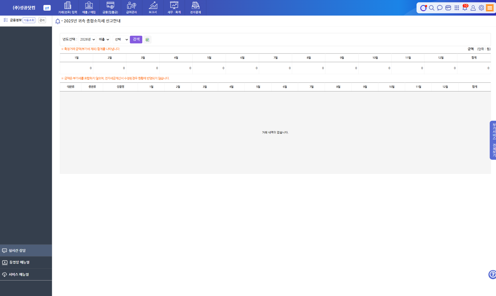
왼쪽 메뉴 > 사업장 정보 관리 > 사업장 정보
사업장 정보
사업자등록증의 내용과 담당자 정보를 등록한다
핵심
모든 서식과 신고에 찍히는 기본 정보다. 서비스를 처음 쓸 때 가장 먼저 채우는 화면이다. 별표(＊)가 붙은 항목은 반드시 넣어야 한다.
입력 항목
| 사업자유형 (필수) | 법인 · 개인사업자 · 개인 중에 고릅니다. |
|---|---|
| 회사명 · 대표자명 (필수) | 사업자등록증에 있는 그대로 적습니다. |
| 사업자등록번호 (필수) | 신고와 자동수집에 쓰이는 핵심 번호입니다. |
| 법인등록번호 | 법인이면 적습니다. |
| 공동사업자 여부 (필수) | 공동으로 하는 사업인지 표시합니다. |
| 사업연차 · 개업일/폐업일 (필수) | 개업일은 신고 기간 계산에 쓰입니다. |
| 관할 세무서 | 세무서찾기로 고릅니다. |
| 업종코드 | 업종코드 찾기나 국세청조회로 찾습니다. 세무 신고에 쓰입니다. |
| 업태 · 종목 | 사업자등록증에 적힌 대로 넣습니다. |
| 주소 | 우편번호나 주소찾기로 넣습니다. |
| 장부 시작연도 | 이 서비스로 장부를 시작한 해입니다. |
기본 조작은 기준정보 설정 공통 사용법에 정리되어 있습니다. 아래에는 이 화면에만 해당하는 내용만 적었습니다.
이 화면에만 있는 기능
| 담당자 정보 | 담당자명, 휴대폰, 이메일을 넣습니다. 각각 "SMS를 수신하지 않으려면 체크하세요", "이메일을 수신하지 않으려면 체크하세요" 옵션이 있습니다. |
|---|---|
| 도장등록 | 도장등록으로 회사 도장 이미지를 올립니다. 계산서나 거래명세서를 출력할 때 쓰입니다. |
| 구글 드라이브 연동 | 구글 계정을 연결해 저장 공간으로 씁니다. 연결하면 사용 현황이 표시됩니다. 구글아이디가 없으면 구글가입 뒤에 연동합니다. |
따라 하기
- 1왼쪽 메뉴에서 사업장 정보 관리를 펼쳐 사업장 정보를 클릭합니다.
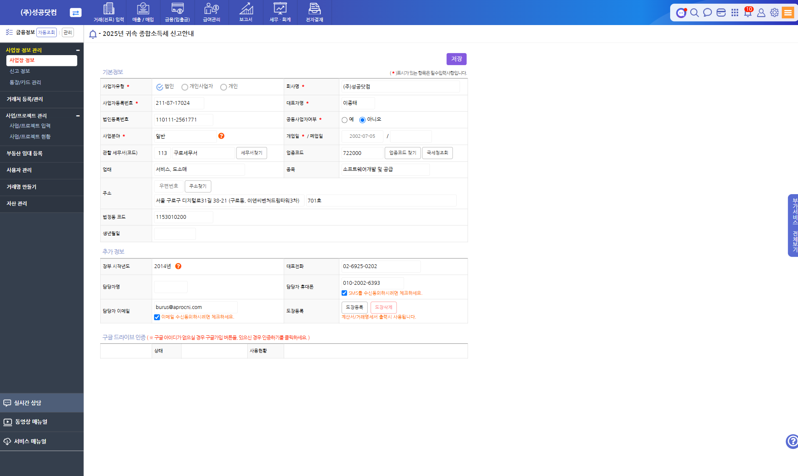
- 2별표(＊)가 붙은 항목을 사업자등록증과 대조해 채웁니다.업종코드는 업종코드 찾기 또는 국세청조회로 확인합니다.
- 3도장을 쓰려면 도장등록으로 이미지를 올립니다.
- 4오른쪽 위 저장을 클릭합니다.
주의
- 여기 정보가 모든 서식과 신고에 찍힙니다. 사업자등록증과 다르면 서류가 통째로 틀립니다.
- 사업자등록번호는 자동수집과 신고의 기준입니다. 오타가 나면 자료를 못 가져옵니다.
- 개업일은 신고 기간 계산에 쓰입니다. 정확히 넣으세요.
자주 묻는 질문
업종코드를 모르겠습니다.
업종코드 찾기나 국세청조회로 찾을 수 있습니다. 사업자등록증에도 적혀 있습니다.
도장은 왜 등록하나요?
계산서나 거래명세서를 출력할 때 찍히도록 하기 위해서입니다.
사업장을 옮겼습니다.
이 화면에서 주소와 관할 세무서를 고치고 저장하세요.
왼쪽 메뉴 > 사업장 정보 관리 > 신고 정보
신고 정보
부가세 신고에 쓰이는 사업장 설정을 등록한다
핵심
부가세 신고서가 이 설정을 그대로 가져다 쓴다. 화면에도 "(＊)표시가 있는 항목은 부가세 신고시 필수입력사항입니다"라고 적혀 있다. 여기가 비어 있거나 틀리면 신고서가 통째로 틀어진다. 서비스를 처음 쓸 때 사업자등록증을 옆에 놓고 채우는 화면이다.
필수 항목
| 과세형태 (필수) | 일반과세 · 간이과세 · 면세 중 하나를 고릅니다. 신고 주기와 방식이 여기서 갈립니다. |
|---|---|
| 과세면세 여부 | 과세 · 면세 · 과세+면세 중에 고릅니다. |
| 홈택스ID | 홈택스 연결에 쓰입니다. |
| 부가세신고방법 | 사업장이 여럿일 때 어떻게 신고할지 정합니다. 일반 사업자 / 총괄납부 주사업자 / 총괄납부 종사업자 / 사업자단위과세적용사업자. |
| 의제매입 공제율 | 음식점업이나 제조업에서 면세 농산물 등을 사면 매입세액을 일부 인정받습니다. 업종에 따라 4/104, 6/106, 8/108, 9/109, 2/102 중에 고릅니다. 해당하지 않으면 해당없음으로 둡니다. |
| 현금매출사업자구분 | 변호사, 세무사, 예식장업, 부동산중개업처럼 현금영수증 의무발행 업종인지 고릅니다. 해당하지 않으면 해당없음입니다. |
| 지방소득세 구분 | 개인인지 법인인지, 법인이면 어떤 형태인지 고릅니다. 원천세 신고에 쓰입니다. |
| 산재보험 요율 | 업종별 요율입니다. 요율 찾기로 확인합니다. |
| 봉사료 여부 | 봉사료를 따로 받는 업종인지 표시합니다. |
그 밖의 항목
| 사업장 시설 현황 | 사업장 소유 형태, 대지·바닥·연면적, 층수, 차량 수, 객실·탁자·의자 수, 주차장 유무, 보증금과 월세를 적습니다. 업종에 따라 세무 신고에 쓰이는 항목입니다. |
|---|---|
| 직원현황 | 임원, 정직원, 일급/시급, 사업소득자 인원을 적습니다. |
기본 조작은 기준정보 설정 공통 사용법에 정리되어 있습니다. 아래에는 이 화면에만 해당하는 내용만 적었습니다.
따라 하기
- 1왼쪽 메뉴에서 사업장 정보 관리를 펼쳐 신고 정보를 클릭합니다.
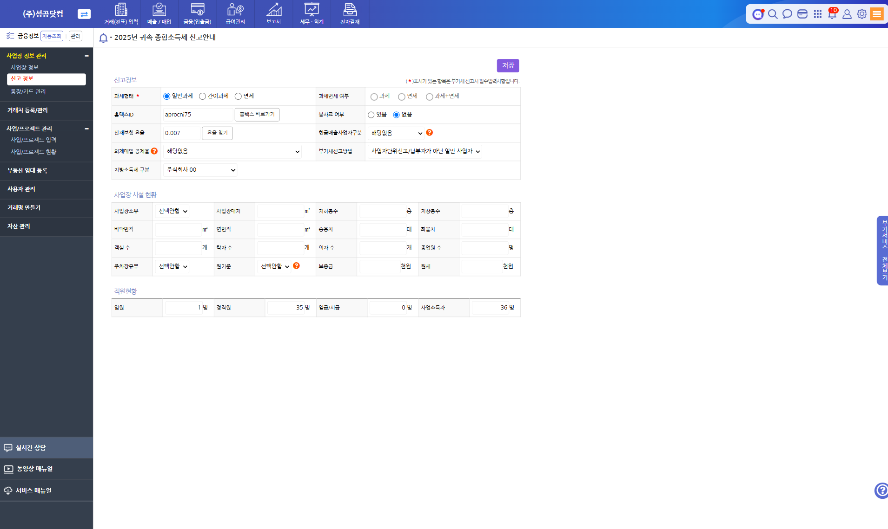
- 2별표(＊)가 붙은 항목을 먼저 채웁니다.부가세 신고에 반드시 필요한 항목입니다.
- 3업종에 해당하는 항목을 고릅니다.의제매입 공제율과 현금매출사업자구분은 해당 업종만 고릅니다.
- 4오른쪽 위 저장을 클릭합니다.
주의
- 여기 설정이 부가세 신고서에 그대로 반영됩니다. 사업자등록증과 대조해 정확히 넣으세요.
- 과세형태를 잘못 고르면 신고 주기부터 달라집니다.
- 의제매입 공제율은 업종에 맞는 것을 골라야 합니다. 잘못 고르면 공제 금액이 틀어집니다.
자주 묻는 질문
별표(＊)가 붙은 항목은 뭔가요?
부가세 신고에 반드시 필요한 항목입니다. 비어 있으면 신고서가 제대로 만들어지지 않습니다.
의제매입 공제율이 뭔가요?
음식점업이나 제조업에서 면세 농산물 등을 살 때 매입세액을 일부 인정해 주는 제도입니다. 해당 업종이 아니면 해당없음으로 두면 됩니다.
사업장이 여러 곳입니다.
부가세신고방법에서 총괄납부인지 사업자단위과세인지 고릅니다.
왼쪽 메뉴 > 사업장 정보 관리 > 통장/카드 관리
통장/카드 관리
자동수집에 쓸 통장, 카드, 홈택스, 카드매출 정보를 등록하고 수집 예약을 관리한다
핵심
자동수집의 출발점이다. 여기에 등록된 곳에서만 자료를 가져온다. 자동수집 결과가 비어 있다면 대개 여기가 비어 있거나 인증이 풀린 것이다.
등록할 수 있는 것
| 은행계좌 | 통장 입출금 자료를 가져올 계좌. 계좌명과 계좌번호로 관리한다. |
|---|---|
| 신용카드 (비용) | 카드 지출 자료를 가져올 카드. |
| 국세청 홈택스 | 세금계산서와 현금영수증을 가져오기 위한 홈택스 연결. |
| 여신금융협회 / 결제승인대행사 / VAN | 카드 매출 자료를 가져오기 위한 연결. 제로페이 등도 여기에 들어간다. |
인증 수단
등록할 때 인증수단을 고른다. 세 가지가 쓰인다. · 공인인증서 — 인증서로 연결한다 · 빠른계좌 — 계좌 확인만으로 간편하게 연결한다 · 아이디 — 해당 기관 아이디와 비밀번호로 연결한다 화면에 "자동수집예약은 아이디/비밀번호 또는 빠른계좌로 인증된 경우만 이용 가능합니다"라고 적혀 있다. 공인인증서로 등록하면 자동수집 예약을 쓸 수 없다.
기본 조작은 기준정보 설정 공통 사용법에 정리되어 있습니다. 아래에는 이 화면에만 해당하는 내용만 적었습니다.
이 화면에만 있는 기능
| 자동수집 예약 | 정해진 때에 저절로 자료를 가져오게 해 두는 기능입니다. 사용 / 미사용으로 켜고 끕니다. 아이디 방식이나 빠른계좌로 등록한 것만 예약할 수 있습니다. |
|---|---|
| 전표수집 | 등록된 곳에서 지금 바로 자료를 가져옵니다. |
| 등록 | 새 통장이나 카드를 등록합니다. |
| 건수 표시 | 위쪽에 "통장 N건 / 카드 N건"으로 등록된 개수가 보입니다. |
따라 하기
- 1왼쪽 메뉴에서 사업장 정보 관리를 펼쳐 통장/카드 관리를 클릭합니다.
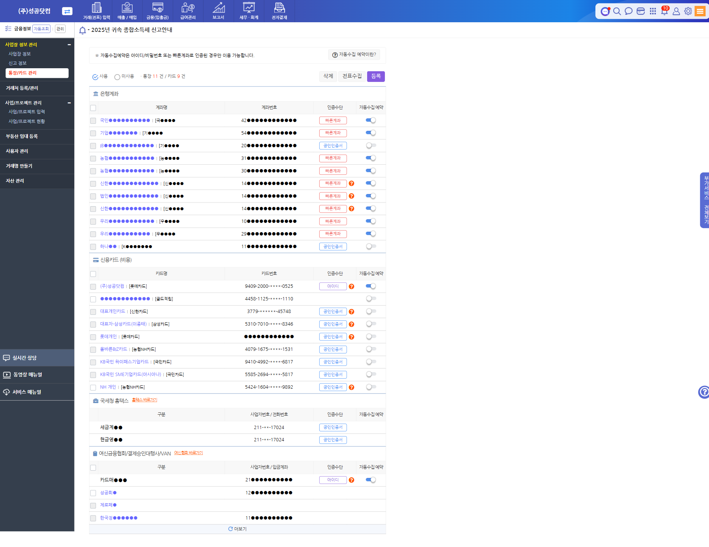
- 2오른쪽 위 등록을 클릭해 통장이나 카드를 추가합니다.인증수단을 고를 때 예약을 쓸 계획이면 빠른계좌나 아이디 방식을 고릅니다.
- 3자동으로 가져오게 하려면 자동수집 예약을 사용으로 둡니다.
주의
- 공인인증서로 등록하면 자동수집 예약을 쓸 수 없습니다. 매번 직접 가져와야 합니다.
- 인증서가 만료되거나 비밀번호가 바뀌면 수집이 멈춥니다. 자동수집 결과가 비면 여기부터 확인하세요.
- 계좌번호와 카드번호가 표시되는 화면입니다. 열람 권한을 꼭 필요한 사람에게만 주세요.
자주 묻는 질문
자동수집이 아무것도 안 가져옵니다.
이 화면에 통장과 카드가 등록되어 있는지, 인증이 풀리지 않았는지 확인하세요. 등록이 없으면 자료가 없는 것이 아니라 가져올 곳이 없는 것입니다.
자동수집 예약이 안 켜집니다.
공인인증서로 등록한 것은 예약을 쓸 수 없습니다. 빠른계좌나 아이디 방식으로 다시 등록해야 합니다.
홈택스 자료는 어디서 연결하나요?
이 화면 아래쪽 국세청 홈택스 항목에서 세금계산서와 현금영수증을 각각 연결합니다.
왼쪽 메뉴 > 거래처 등록/관리
거래처 등록/관리
거래하는 상대방을 등록하고 관리한다
핵심
거래처가 등록되어 있어야 매출·매입을 거래처별로 묶어 볼 수 있다. 채권채무 보고서와 수납·지급 확인도 거래처를 기준으로 움직인다.
채우는 방법
하나씩 손으로 넣지 않아도 된다. 홈택스 거래처 가져오기로 세금계산서를 주고받은 곳을 한꺼번에 불러올 수 있고, 엑셀일괄등록으로 정리해 둔 목록을 올릴 수도 있다. 처음 시작할 때는 이 두 가지를 먼저 써 보는 편이 빠르다.
입력 항목
| 기본 정보 | 업체코드, 업체구분, 거래처명, 대표자, 사업자유형, 과세형태, 사업자번호, 법인번호, 주소 |
|---|---|
| 추가정보 | 업종, 업태, 이메일, 팩스, 영업사원, 등록일시, 초기미수, 현재미수, 여신한도, 담당자와 연락처, 특이사항 |
기본 조작은 기준정보 설정 공통 사용법에 정리되어 있습니다. 아래에는 이 화면에만 해당하는 내용만 적었습니다.
이 화면에만 있는 기능
| 홈택스 거래처 가져오기 | 홈택스에서 거래한 곳을 한꺼번에 불러옵니다. |
|---|---|
| 엑셀일괄등록 | 엑셀로 정리한 거래처를 한꺼번에 올립니다. |
| 여신한도 · 초기미수 · 현재미수 | 그 거래처에 얼마까지 외상을 줄지, 지금 못 받은 돈이 얼마인지 관리합니다. 한도를 넘으면 경고가 표시됩니다. |
따라 하기
- 1왼쪽 메뉴에서 거래처 등록/관리를 클릭합니다.
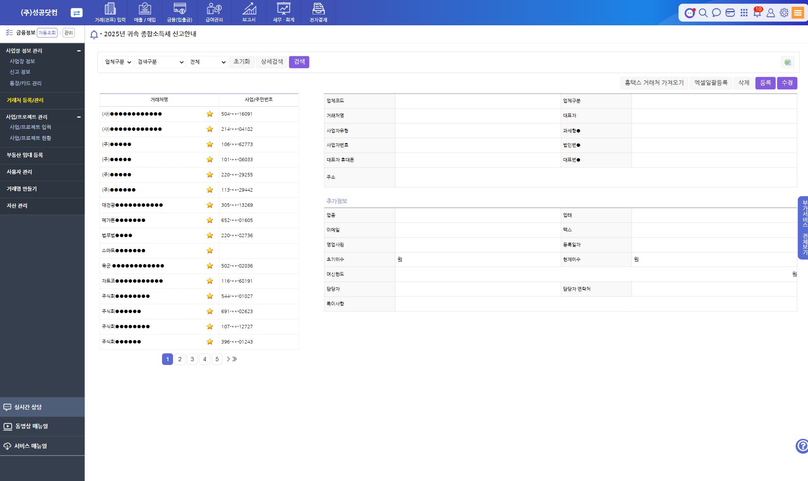
- 2처음이라면 홈택스 거래처 가져오기로 한꺼번에 불러옵니다.엑셀로 정리해 둔 것이 있으면 엑셀일괄등록을 씁니다.
- 3하나씩 넣으려면 등록을, 고치려면 대상을 고르고 수정을 클릭합니다.
주의
- 사업자등록번호가 정확해야 합니다. 자동 분류가 이 번호로 예전 거래명을 찾습니다.
- 같은 거래처를 두 번 등록하면 집계가 나뉩니다. 등록 전에 검색해 보세요.
자주 묻는 질문
거래처를 하나씩 다 넣어야 하나요?
아닙니다. 홈택스 거래처 가져오기로 한꺼번에 불러오거나 엑셀일괄등록으로 올릴 수 있습니다.
거래처명이 영업일보에 안 보입니다.
None
왼쪽 메뉴 > 사업/프로젝트 관리 > 사업/프로젝트 입력
사업/프로젝트 입력
부문별로 손익을 볼 단위를 만들고 관리한다
핵심
매장이 여럿이거나 현장이 나뉘어 있을 때, 어디서 얼마를 벌고 썼는지 따로 보려면 여기에 단위를 만들어 둔다. 거래를 입력할 때 이 단위를 지정하면 부문별로 집계된다. 결과는 사업/프로젝트 현황에서 본다.
입력 항목
| 프로젝트명 | 부문을 알아볼 수 있는 이름을 적습니다. |
|---|---|
| 기간 | 시작일과 종료일을 정합니다. |
| 조직/부서 · 담당자(PM) | 어느 부서가 맡고 누가 책임지는지 적습니다. |
| 금액 · 상태 | 규모와 진행 상태를 적습니다. |
| 사용등록여부 | None |
기본 조작은 기준정보 설정 공통 사용법에 정리되어 있습니다. 아래에는 이 화면에만 해당하는 내용만 적었습니다.
따라 하기
- 1왼쪽 메뉴에서 사업/프로젝트 관리를 펼쳐 사업/프로젝트 입력을 클릭합니다.
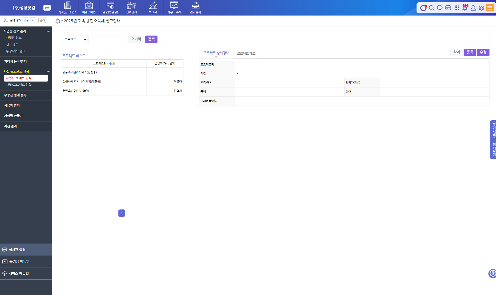
- 2오른쪽 위 등록을 클릭해 새 사업이나 프로젝트를 만듭니다.
- 3왼쪽 목록에서 하나를 고르면 오른쪽에 내용이 나옵니다. 고치려면 수정을 클릭합니다.프로젝트 메모 탭에 진행 상황을 적어 둘 수 있습니다.
주의
- 여기에 만들어 두지 않으면 거래를 입력할 때 부문을 지정할 수 없습니다.
- 프로젝트를 지우면 그 프로젝트로 집계되던 거래의 부문 정보가 사라질 수 있습니다.
자주 묻는 질문
매장이 두 곳인데 따로 손익을 보고 싶습니다.
매장마다 프로젝트를 만들고, 거래를 입력할 때 해당 매장을 지정하세요. 사업/프로젝트 현황에서 나눠 볼 수 있습니다.
프로젝트를 만들었는데 거래 입력에서 안 보입니다.
None
왼쪽 메뉴 > 사업/프로젝트 관리 > 사업/프로젝트 현황
사업/프로젝트 현황
사업·프로젝트별로 수익과 비용을 월별로 집계해 본다
핵심
사업/프로젝트 입력에서 만든 단위별로 실적을 보는 화면이다. 거래를 입력할 때 그 단위를 지정해야 여기에 집계된다. 지정하지 않은 거래는 어디에도 잡히지 않는다.
기본 조작은 기준정보 설정 공통 사용법에 정리되어 있습니다. 아래에는 이 화면에만 해당하는 내용만 적었습니다.
이 화면에만 있는 기능
| 사업/프로젝트 탭 · 조직/부서 탭 | 프로젝트 단위로 볼지, 조직·부서 단위로 볼지 고릅니다. |
|---|---|
| 기간선택 | 연도를 고릅니다. 결과가 1월부터 12월까지 월별로 나옵니다. |
| 검색조건 | 수익+비용 등 무엇을 볼지 고릅니다. |
| 표 항목 | 사업/프로젝트, 구분, 조직(부서), 거래명, 합계(당기누적), 1~12월, 합계 |
따라 하기
- 1왼쪽 메뉴에서 사업/프로젝트 관리를 펼쳐 사업/프로젝트 현황을 클릭합니다.
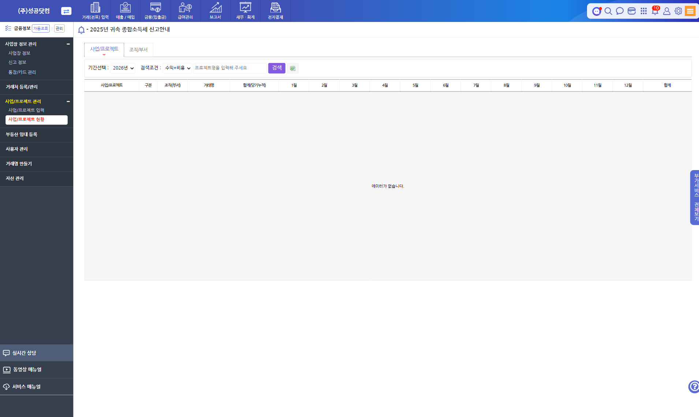
- 2연도와 검색조건을 정하고 검색을 클릭합니다.월별로 나뉘어 나오므로 어느 달에 몰렸는지 볼 수 있습니다.
주의
- 거래를 입력할 때 사업·프로젝트를 지정하지 않으면 여기 안 잡힙니다.
- 데이터가 없다고 나오면 프로젝트를 지정한 거래가 없다는 뜻입니다.
자주 묻는 질문
데이터가 없다고 나옵니다.
프로젝트를 지정한 거래가 없는 것입니다. 거래를 입력하거나 수정할 때 사업·프로젝트를 골라야 여기에 집계됩니다.
부서별로도 볼 수 있나요?
위쪽 조직/부서 탭에서 볼 수 있습니다.
왼쪽 메뉴 > 부동산 임대 등록
부동산 임대 등록
임대하는 부동산의 임차인과 계약 내용을 등록하고 관리한다
핵심
부동산을 임대하는 사업자를 위한 화면이다. 임차인, 동·층·호, 보증금, 월 임대료, 계약 기간을 등록해 둔다. 임대업을 하지 않으면 쓸 일이 없다.
기본 조작은 기준정보 설정 공통 사용법에 정리되어 있습니다. 아래에는 이 화면에만 해당하는 내용만 적었습니다.
표에 보이는 항목
- 임차인(성명/상호)
- 동
- 층
- 호
- 갱신일
- 입주일
- 퇴거일
- 보증금
- 월 임대료
이 화면에만 있는 기능
| 연장/변경 | 계약을 연장하거나 조건을 바꿀 때 씁니다. 이력이 남습니다. |
|---|---|
| 임대기간 · 임차인 검색 | 기간이나 임차인 이름으로 찾습니다. |
| 등록 | 새 임대차 계약을 등록합니다. |
따라 하기
- 1왼쪽 메뉴에서 부동산 임대 등록을 클릭합니다.
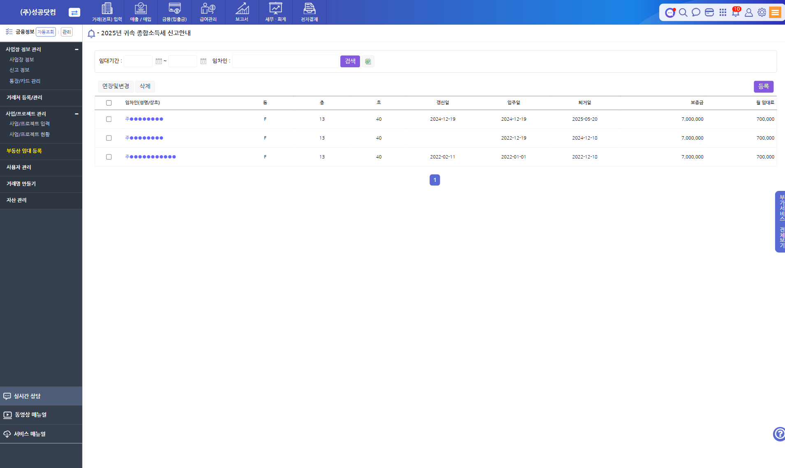
- 2오른쪽 위 등록을 클릭해 임대차 계약을 넣습니다.
- 3계약을 연장하거나 조건을 바꿀 때는 연장/변경을 클릭합니다.삭제하지 말고 연장/변경으로 처리해야 이력이 남습니다.
주의
- 계약이 바뀌었다고 삭제하고 새로 넣으면 이력이 사라집니다. 연장/변경을 쓰세요.
- 부동산 임대업은 임대차 내역을 신고에 써야 합니다. 빠짐없이 등록하세요.
자주 묻는 질문
우리는 임대업이 아닙니다.
이 메뉴는 쓰지 않아도 됩니다.
계약을 갱신했습니다.
연장/변경으로 처리하면 이전 계약 이력이 남습니다.
왼쪽 메뉴 > 사용자 관리
사용자 관리
이 서비스를 쓸 사람을 등록하고 메뉴별 접근 권한을 준다
핵심
화면 안내에 이렇게 적혀 있다. "사용자구분 및 아이디 별로 메뉴에 대한 접근 권한을 부여 할 수 있습니다." 구분으로 큰 틀을 정하고, 아이디마다 볼 수 있는 메뉴를 따로 지정하는 방식이다.
사용자 유형
| 부운영자 | 부여받은 메뉴에서 등록·수정·삭제까지 할 수 있습니다. |
|---|---|
| 열람자 | 보기만 됩니다. 부여된 메뉴에 들어갈 수는 있지만 등록·수정·삭제는 할 수 없습니다. |
| 세무담당자 | 세무 대리인에게 주는 구분입니다. |
사업장이 여러 개일 때
사업장이 여러 개일 때는 순서가 있다. ① 이 화면에서 아이디를 만든다. ② 등록할 사업장으로 접속한다. ③ 그 사업장의 다중사업장 관리에서 기존사업장 연결을 누른다. ④ 앞서 만든 아이디와 비밀번호를 넣는다. 예를 들어 A업체에서 만든 아이디를 B업체에서 쓰려면, B업체에 접속해 연결해 준다.
기본 조작은 기준정보 설정 공통 사용법에 정리되어 있습니다. 아래에는 이 화면에만 해당하는 내용만 적었습니다.
표에 보이는 항목
- 구분
- 이름
- 아이디
- 접속아이피
- 메모
이 화면에만 있는 기능
| 접속아이피 | 마지막으로 접속한 아이피와 시각이 남습니다. 누가 언제 들어왔는지 확인할 수 있습니다. |
|---|---|
| 등록 / 삭제 | 사용자를 추가하거나 지웁니다. |
따라 하기
- 1왼쪽 메뉴에서 사용자 관리를 클릭합니다.
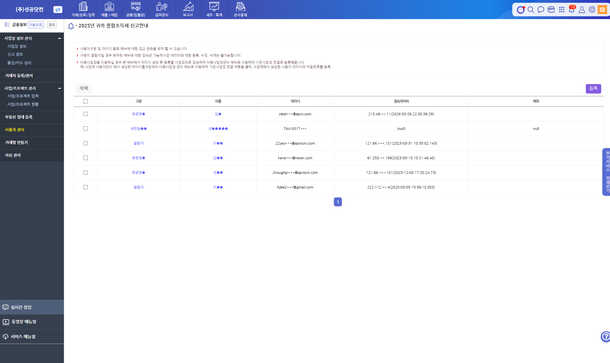
- 2오른쪽 위 등록을 클릭해 사용자를 추가합니다.구분을 정하고, 그 사람이 볼 메뉴를 지정합니다.
- 3그만둔 사람은 골라서 삭제합니다.
주의
- 급여와 세무 자료를 볼 수 있는 사람을 정하는 화면입니다. 권한을 넓게 열면 급여액과 개인정보가 함께 노출됩니다.
- 보기만 시키려면 구분을 열람자로 하세요. 부운영자는 자료를 고치고 지울 수 있습니다.
- 그만둔 사람의 아이디는 바로 지우세요. 접속아이피 기록으로 마지막 접속을 확인할 수 있습니다.
자주 묻는 질문
직원에게 보기만 시키고 싶습니다.
구분을 열람자로 등록하세요. 메뉴에 들어갈 수는 있지만 등록·수정·삭제는 안 됩니다.
사업장이 여러 개인데 같은 아이디를 쓰고 싶습니다.
한 사업장에서 아이디를 만든 뒤, 다른 사업장에 접속해 다중사업장 관리 > 기존사업장 연결에서 그 아이디와 비밀번호를 등록합니다.
세무사에게 자료를 보여주려면?
구분을 세무담당자로 등록합니다.
왼쪽 메뉴 > 거래명 만들기
거래명 만들기
거래에 붙일 이름을 만들고, 그 이름이 어떤 회계 항목으로 잡힐지 정한다
핵심
거래명이 계정과목을 정한다. 거래를 입력할 때 고르는 그 값이 여기서 만들어진다. 거래명 하나에 회계 항목과 차변·대변까지 미리 붙여 두기 때문에, 사용자는 회계를 몰라도 거래명만 고르면 장부가 맞게 짜인다.
거래명 구조
거래명은 거래분류 아래에 묶인다. 은행관련, IT 서비스 거래, 용역관련, 시설관리 비용, 운영관리 비용, 세금 및 4대 보험료, 인허가 및 수수료, 기타거래처럼 큰 갈래를 두고 그 아래에 실제 거래명을 만든다.
왜 해야 하나
거래명을 대충 만들어 두면 나중에 비용 현황을 봐도 무슨 돈인지 알 수 없다. 보고서 > 경영관리 > 비용(지출)이 거래명 단위로 집계되므로, 여기서 어떻게 만들었느냐가 곧 경영 정보의 품질이 된다.
기본 조작은 기준정보 설정 공통 사용법에 정리되어 있습니다. 아래에는 이 화면에만 해당하는 내용만 적었습니다.
표에 보이는 항목
- 상태
- 출력순서
- 중분류(항)
- 거래명
- 설명
- 항목(공급가액)[차/대]
- 결제방법
- 처리(수정·삭제)
이 화면에만 있는 기능
| 항목(공급가액)차/대 | 그 거래명이 어떤 회계 항목으로 잡히는지와 차변인지 대변인지를 보여줍니다. 예를 들어 "은행 예금 이자 수익"은 이자수익대, "소득세 납부(국세청)"은 예수금차입니다. |
|---|---|
| 출력순서 | 거래명을 고를 때 나오는 순서입니다. 번호가 작을수록 먼저 나옵니다. 자주 쓰는 것을 앞으로 당겨 두면 편합니다. 순서를 바꾼 뒤 출력순서반영을 눌러야 적용됩니다. |
| 자동거래 분류관리 | 거래처별로 어떤 거래명을 자동으로 붙일지 관리합니다. |
| 거래분류관리 | 거래명을 묶는 큰 갈래를 만들고 관리합니다. |
| 등록 | 새 거래명을 만듭니다. |
따라 하기
- 1왼쪽 메뉴에서 거래명 만들기를 클릭합니다.
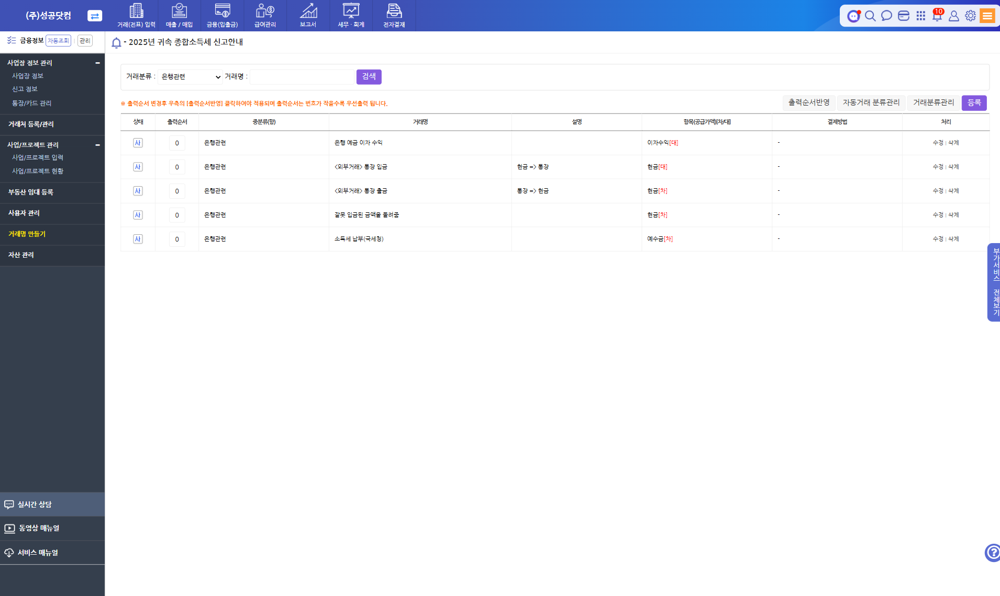
- 2위쪽에서 거래분류를 골라 그 갈래의 거래명만 봅니다.거래명으로 직접 검색할 수도 있습니다.
- 3오른쪽 위 등록을 클릭해 새 거래명을 만듭니다.만들 때 어떤 회계 항목으로 잡을지 함께 정합니다.
- 4자주 쓰는 거래명을 앞으로 당기려면 출력순서를 바꾸고 출력순서반영을 클릭합니다.반영 버튼을 누르지 않으면 순서가 바뀌지 않습니다.
주의
- 거래명에 붙은 회계 항목이 잘못되면 그 거래명을 쓴 모든 거래가 함께 틀어집니다.
- 출력순서를 바꾼 뒤 출력순서반영을 누르지 않으면 적용되지 않습니다.
- 이미 쓰고 있는 거래명을 지우거나 고치면 과거 거래에 영향이 갈 수 있습니다.
자주 묻는 질문
거래명과 계정과목은 뭐가 다른가요?
거래명은 사람이 알아보기 쉬운 이름이고, 계정과목은 회계 장부에 쓰는 이름입니다. 거래명 하나에 계정과목이 붙어 있어서, 거래명만 고르면 계정과목이 따라옵니다.
우리 사업에 맞는 거래명이 없습니다.
등록으로 직접 만들면 됩니다. 어떤 회계 항목으로 잡을지 함께 정합니다.
거래명이 너무 많아 고르기 힘듭니다.
자주 쓰는 것의 출력순서를 앞으로 당기고 출력순서반영을 누르세요. 거래분류로 갈래를 나눠 두는 것도 방법입니다.
왼쪽 메뉴 > 자산 관리
자산 관리
오래 쓰는 자산을 등록하고 감가상각과 현재 가치를 관리한다
핵심
기계, 차량, 건물, 소프트웨어처럼 오래 쓰는 것은 산 해에 전부 비용으로 잡지 않는다. 쓰는 기간에 걸쳐 나눠서 비용으로 넘기는데, 이것이 감가상각이다. 여기에 등록해 두면 상각 계산과 현재 자산가치가 자동으로 잡힌다. 등록하지 않으면 감가상각비가 아예 안 잡혀 손익이 실제와 달라진다.
입력 항목
| 항목 | 자산의 종류입니다. 소프트웨어, 비품, 건물, 토지, 차량운반구 등으로 나뉩니다. |
|---|---|
| 취득일자 · 취득가액 | 언제 얼마에 샀는지 적습니다. 상각 계산의 출발점입니다. |
| 상각법 | 정액법과 정률법이 있습니다. 정액법은 매년 같은 금액씩, 정률법은 남은 가치에 비율을 곱해 줄여 나갑니다. |
| 내용연수 | 몇 년에 걸쳐 나눠 비용으로 넘길지입니다. 소프트웨어나 비품은 5년, 건물은 40년처럼 자산 종류에 따라 다릅니다. 토지는 상각하지 않으므로 0입니다. |
| 현재자산가치 | 취득가액에서 지금까지 상각한 만큼을 뺀 값입니다. 자동으로 계산됩니다. |
기본 조작은 기준정보 설정 공통 사용법에 정리되어 있습니다. 아래에는 이 화면에만 해당하는 내용만 적었습니다.
표에 보이는 항목
- 순서
- 항목
- 자산명
- 취득일자
- 취득가액
- 상각법
- 내용연수
- 현재자산가치
- 처분(폐기)일자
- 처분(폐기)금액
이 화면에만 있는 기능
| 폐기/처분 | 자산을 팔거나 버렸을 때 처리합니다. 처분일자와 금액이 기록됩니다. |
|---|---|
| 등록 | 새 자산을 등록합니다. |
| 엑셀 · 인쇄 | 목록을 내려받거나 출력합니다. |
따라 하기
- 1왼쪽 메뉴에서 자산 관리를 클릭합니다.
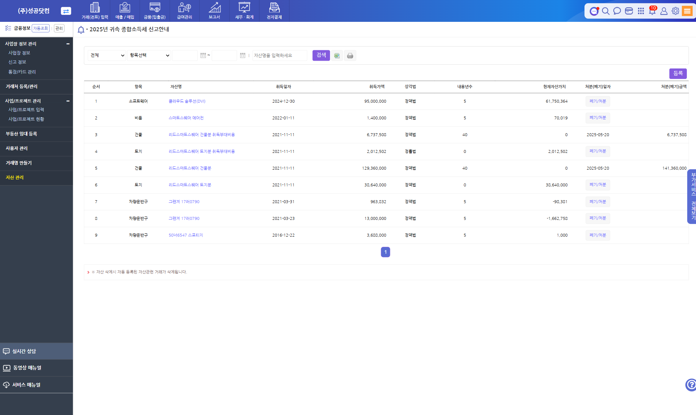
- 2오른쪽 위 등록을 클릭해 자산을 추가합니다.항목, 취득일자, 취득가액, 상각법, 내용연수를 넣으면 상각이 자동으로 계산됩니다.
- 3자산을 팔거나 버렸으면 그 줄의 폐기/처분을 클릭합니다.
주의
- 여기 등록하지 않으면 감가상각비가 잡히지 않습니다. 손익과 재무상태표가 실제와 달라집니다.
- 토지는 감가상각을 하지 않습니다. 내용연수를 0으로 둡니다.
- 상각법과 내용연수는 세법 기준을 따라야 합니다. 임의로 정하면 신고 때 문제가 됩니다.
- 자산을 삭제하면 그 자산이 들어간 거래에 영향이 갑니다. 판 것이라면 삭제가 아니라 폐기/처분으로 처리하세요.
자주 묻는 질문
컴퓨터를 샀는데 어디에 넣나요?
금액이 크고 오래 쓸 것이라면 이 화면에 자산으로 등록합니다. 소모품 수준이면 그냥 비용으로 처리해도 됩니다. 서비스가 정해 둔 기준 금액은 없습니다. 어느 쪽으로 할지는 사용자가 정합니다.
감가상각비를 직접 계산해야 하나요?
아닙니다. 취득가액, 상각법, 내용연수를 넣으면 자동으로 계산됩니다.
자산을 팔았습니다.
삭제하지 말고 폐기/처분으로 처리하세요. 처분일자와 금액이 기록됩니다.
현재자산가치가 마이너스로 나옵니다.
None
급여관리 > 직원관리
직원관리
급여를 줄 사람을 등록하고 근로 조건과 4대보험 정보를 관리한다
핵심
급여를 주는 모든 사람을 등록하는 곳이다. 정규직만이 아니라 일용직과 사업소득자도 여기서 관리한다. 소득 종류에 따라 세금 계산과 제출 서류가 달라지므로, 등록할 때 구분을 제대로 잡아야 한다.
추가 주의사항
소득 구분을 잘못 잡으면 세금 계산부터 제출 서류까지 전부 틀어진다. 정규직인지 일용직인지 사업소득자인지는 실제로 일한 방식으로 판단한다. 자세한 기준은 인건비 종류와 원천세 제출 서류 문서를 참고한다.
기본 조작은 급여관리 공통 사용법에 정리되어 있습니다. 아래에는 이 화면에만 해당하는 내용만 적었습니다.
이 화면에만 있는 기능
| 구분 탭 | 전체 정규직 일용직 사업소득자로 나뉘어 있고 괄호 안에 인원수가 나옵니다. 목록의 구분 열에도 정·일·사 표시가 붙습니다. |
|---|---|
| 사원번호 | 등록일 기준으로 자동으로 매겨집니다. |
| 근로정보 일괄설정 | 여러 사람의 근로 조건을 한꺼번에 바꿉니다. |
| 근태정보 일괄설정 | 여러 사람의 근태 조건을 한꺼번에 바꿉니다. |
따라 하기
- 1상단 급여관리를 클릭한 뒤 왼쪽에서 직원관리을 클릭합니다.
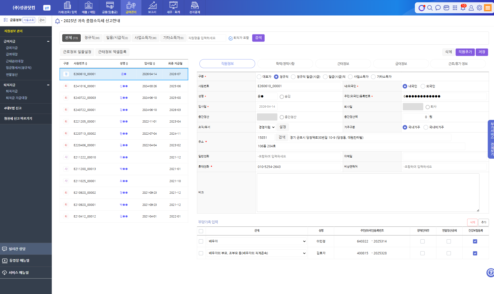
주의
- 직원 개인정보와 급여액이 표시됩니다. 화면을 열어 둔 채 자리를 비우지 마세요.
급여관리 > 급여지급 > 급여지급
급여지급
그 달의 급여를 계산하고 공제액을 뺀 실지급액을 확정한다
기본 조작은 급여관리 공통 사용법에 정리되어 있습니다. 아래에는 이 화면에만 해당하는 내용만 적었습니다.
따라 하기
- 1상단 급여관리를 클릭한 뒤 왼쪽 급여지급에서 급여지급을 클릭합니다.
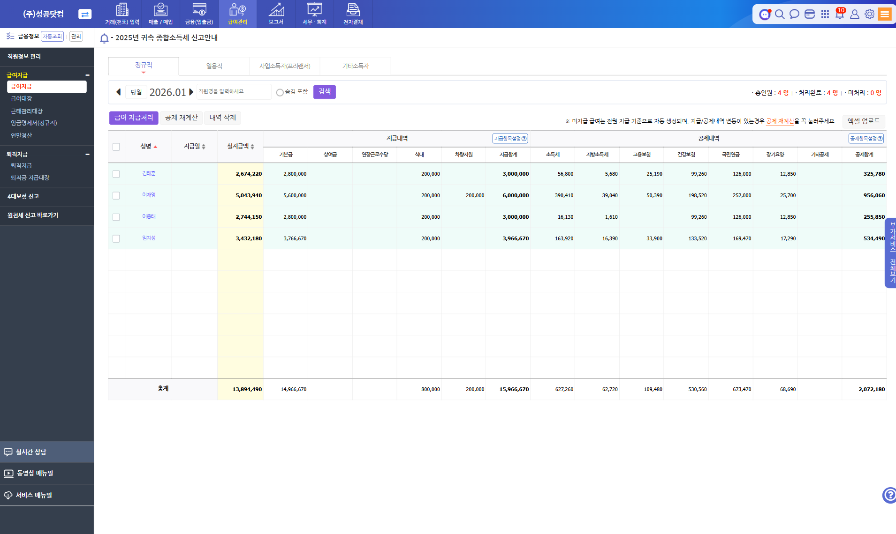
주의
- 직원 개인정보와 급여액이 표시됩니다. 화면을 열어 둔 채 자리를 비우지 마세요.
급여관리 > 급여지급 > 급여대장
급여대장
지급한 급여 내역을 대장 형태로 확인하고 출력한다
기본 조작은 급여관리 공통 사용법에 정리되어 있습니다. 아래에는 이 화면에만 해당하는 내용만 적었습니다.
따라 하기
- 1상단 급여관리를 클릭한 뒤 왼쪽 급여지급에서 급여대장을 클릭합니다.
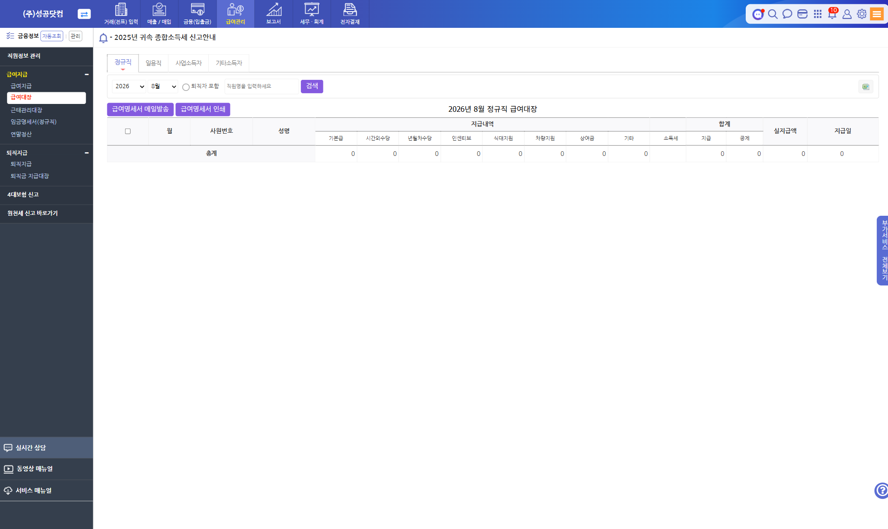
주의
- 직원 개인정보와 급여액이 표시됩니다. 화면을 열어 둔 채 자리를 비우지 마세요.
급여관리 > 급여지급 > 근태관리대장
근태관리대장
근무일수, 결근, 연장근로 등 급여 계산에 쓰이는 근태를 기록한다
기본 조작은 급여관리 공통 사용법에 정리되어 있습니다. 아래에는 이 화면에만 해당하는 내용만 적었습니다.
따라 하기
- 1상단 급여관리를 클릭한 뒤 왼쪽 급여지급에서 근태관리대장을 클릭합니다.
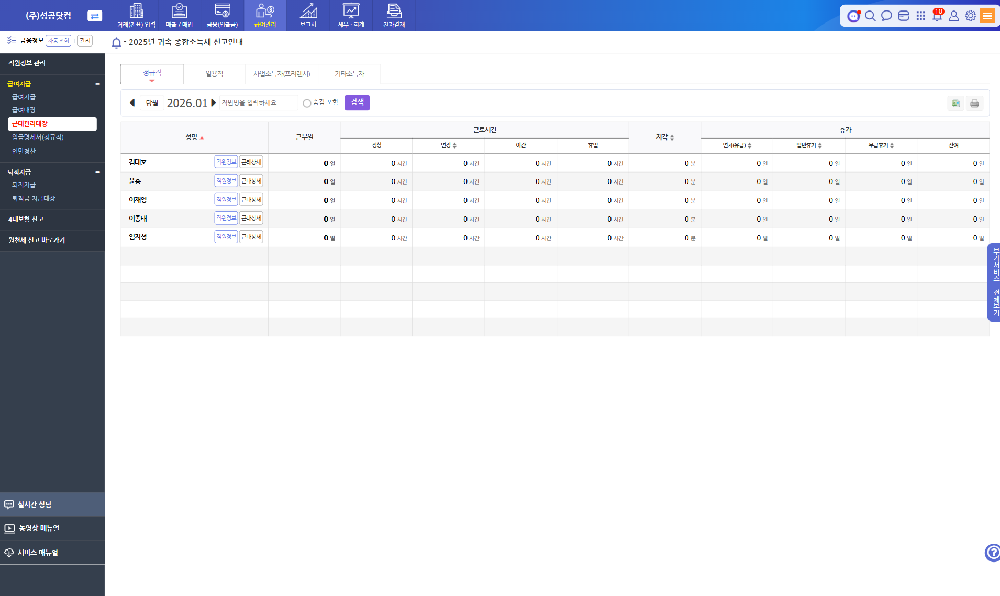
주의
- 직원 개인정보와 급여액이 표시됩니다. 화면을 열어 둔 채 자리를 비우지 마세요.
급여관리 > 급여지급 > 임금명세서(정규직)
임금명세서(정규직)
정규직에게 교부할 임금명세서를 만든다
기본 조작은 급여관리 공통 사용법에 정리되어 있습니다. 아래에는 이 화면에만 해당하는 내용만 적었습니다.
따라 하기
- 1상단 급여관리를 클릭한 뒤 왼쪽 급여지급에서 임금명세서(정규직)을 클릭합니다.
주의
- 직원 개인정보와 급여액이 표시됩니다. 화면을 열어 둔 채 자리를 비우지 마세요.
급여관리 > 급여지급 > 연말정산
연말정산
한 해 동안 낸 세금과 실제 낼 세금의 차이를 정산한다
이후에 할 일
연말정산을 마쳤다고 끝이 아니다. 근로소득 지급명세서를 다음 해 3월 10일까지 내야 하는데, 이 서비스에서는 만들 수 없다. 홈택스에서 직접 제출한다.
기본 조작은 급여관리 공통 사용법에 정리되어 있습니다. 아래에는 이 화면에만 해당하는 내용만 적었습니다.
따라 하기
- 1상단 급여관리를 클릭한 뒤 왼쪽 급여지급에서 연말정산을 클릭합니다.
주의
- 연말정산 후 근로소득 지급명세서를 홈택스에서 따로 내야 합니다. 이 서비스에서는 만들 수 없습니다.
- 직원 개인정보와 급여액이 표시됩니다. 화면을 열어 둔 채 자리를 비우지 마세요.
급여관리 > 퇴직지급 > 퇴직지급
퇴직지급
퇴직하는 직원의 퇴직금을 계산하고 지급 처리한다
이후에 할 일
퇴직금을 지급했다면 퇴직소득 지급명세서를 다음 해 3월 10일까지 내야 한다. 이 화면에서는 계산과 지급만 하고 명세서는 나오지 않는다. 홈택스에서 직접 제출한다.
기본 조작은 급여관리 공통 사용법에 정리되어 있습니다. 아래에는 이 화면에만 해당하는 내용만 적었습니다.
따라 하기
- 1상단 급여관리를 클릭한 뒤 왼쪽 퇴직지급에서 퇴직지급을 클릭합니다.
주의
- 퇴직소득 지급명세서는 홈택스에서 따로 내야 합니다. 이 화면에서는 나오지 않습니다.
- 지급 처리는 되돌리기 어렵습니다. 금액을 확인하고 실행하세요.
- 직원 개인정보와 급여액이 표시됩니다. 화면을 열어 둔 채 자리를 비우지 마세요.
급여관리 > 퇴직지급 > 퇴직금 지급대장
퇴직금 지급대장
지급한 퇴직금 내역을 대장 형태로 확인하고 출력한다
기본 조작은 급여관리 공통 사용법에 정리되어 있습니다. 아래에는 이 화면에만 해당하는 내용만 적었습니다.
따라 하기
- 1상단 급여관리를 클릭한 뒤 왼쪽 퇴직지급에서 퇴직금 지급대장을 클릭합니다.
주의
- 직원 개인정보와 급여액이 표시됩니다. 화면을 열어 둔 채 자리를 비우지 마세요.
급여관리 > 4대보험 신고
4대보험 신고
입사·퇴사·급여 변동에 따른 4대보험 신고 자료를 만든다
핵심
이 화면에서 처리해도 공단에 접수되지 않는다. 여기서 만드는 것은 신고에 쓸 자료이고, 실제 신고는 따로 해야 한다. 이 사실을 모르면 신고를 마쳤다고 생각하고 넘어가 기한을 놓치게 된다.
기한
취득신고 기한은 보험마다 다르다. 건강보험이 가장 짧다. · 건강보험 — 취득일로부터 14일 이내 · 국민연금 · 고용보험 · 산재보험 — 취득일이 속한 달의 다음 달 15일까지 한꺼번에 신고하더라도 건강보험에 맞춰 입사 후 14일 이내에 하는 것이 안전하다.
예시
8월 1일 입사인 경우 · 건강보험 → 8월 14일까지 · 국민연금 · 고용보험 · 산재보험 → 9월 15일까지
제출 방법
| 4대사회보험 정보연계센터 (권장) | 온라인으로 신고하고 처리 결과까지 확인할 수 있습니다. 네 가지 보험을 한 곳에서 처리할 수 있어 가장 편합니다. |
|---|---|
| 팩스 제출 | 서면으로 신고서를 작성한 뒤, 관할 건강보험공단에 전화해 접수 팩스번호를 확인하고 보냅니다. 팩스번호는 지사마다 다르므로 반드시 전화로 확인한 뒤 보냅니다. |
기본 조작은 급여관리 공통 사용법에 정리되어 있습니다. 아래에는 이 화면에만 해당하는 내용만 적었습니다.
따라 하기
- 1상단 급여관리를 클릭한 뒤 왼쪽에서 4대보험 신고를 클릭합니다.
- 2신고할 내용을 확인하고 자료를 만듭니다.
- 3정보연계센터에서 온라인으로 신고하거나, 서면으로 공단에 팩스로 보냅니다.이 단계까지 해야 신고가 끝납니다.
주의
- 이 화면에서 처리했다고 신고가 끝난 것이 아닙니다. 정보연계센터에서 온라인으로 신고하거나 공단에 팩스로 보내야 마무리됩니다.
- 팩스번호는 지사마다 다릅니다. 인터넷에서 찾은 번호로 보내지 말고 관할 공단에 전화해 확인하세요.
- 취득일은 실제 입사일로 신고합니다. 기한이 지났다고 신고일로 바꾸면 안 됩니다.
- 기한이 지났더라도 미루지 말고 바로 신고하세요. 늦출수록 소급 보험료가 쌓입니다.
- 직원 개인정보와 급여액이 표시됩니다. 화면을 열어 둔 채 자리를 비우지 마세요.
자주 묻는 질문
여기서 신고하면 공단에 접수되나요?
접수되지 않습니다. 이 화면은 신고에 쓸 자료를 만드는 곳입니다. 자료를 만든 뒤 4대사회보험 정보연계센터에서 온라인으로 신고하거나, 서면으로 작성해 관할 건강보험공단에 팩스로 보내야 마무리됩니다.
온라인과 팩스 중 어느 쪽이 나은가요?
정보연계센터가 편합니다. 네 가지 보험을 한 곳에서 처리하고 결과도 확인할 수 있습니다. 팩스로 보낼 때는 관할 건강보험공단에 전화해 접수 팩스번호를 먼저 확인하세요.
신고 기한이 언제인가요?
건강보험은 취득일로부터 14일 이내, 국민연금·고용보험·산재보험은 취득일이 속한 달의 다음 달 15일까지입니다. 건강보험이 가장 짧으므로 입사 후 14일 이내에 함께 신고하는 것이 안전합니다.
기한을 넘기면 어떻게 되나요?
세금처럼 가산세가 붙는 것이 아니라 신고의무 위반에 따른 과태료 문제입니다. 다만 실무에서 더 부담이 되는 것은 과태료보다 소급 보험료입니다. 신고가 늦어도 자격 취득일은 실제 입사일이므로, 그때부터 보험료가 한꺼번에 부과됩니다.
급여관리 > 원천세 신고 바로가기
원천세 신고 바로가기
원천세 신고 화면으로 바로 넘어간다
기본 조작은 급여관리 공통 사용법에 정리되어 있습니다. 아래에는 이 화면에만 해당하는 내용만 적었습니다.
따라 하기
- 1상단 급여관리를 클릭한 뒤 왼쪽에서 원천세 신고 바로가기을 클릭합니다.
주의
- 직원 개인정보와 급여액이 표시됩니다. 화면을 열어 둔 채 자리를 비우지 마세요.
보고서 > 금융보고서
금융보고서
통장·카드·여신을 아우른 자금 흐름을 하루 단위로 본다
핵심
하루 기준으로 자금이 어떻게 움직였는지 보여주는 자금일보다. 통장별 잔액, 카드 지출별 이용대금, 여신금융협회 매출, 현금영수증까지 한 화면에 모인다. 오늘 쓸 수 있는 돈이 얼마인지 확인할 때 쓴다.
기본 조작은 보고서 공통 사용법에 정리되어 있습니다. 아래에는 이 화면에만 해당하는 내용만 적었습니다.
이 화면에만 있는 기능
| 자동수집 / 장부 탭 | 자동수집으로 가져온 자료로 볼지, 장부에 들어간 자료로 볼지 고릅니다. 두 숫자가 다르면 장부에 아직 안 넣은 자료가 있다는 뜻입니다. |
|---|---|
| 날짜 이동 | 화살표로 하루씩 앞뒤로 옮겨 봅니다. |
| 통장별 구분 | 전일 잔액 → 당일 입금 소계 → 총액 → 출금 소계 → 당일 잔액 순으로 통장마다 나뉘어 나옵니다. |
| 카드 지출별 구분 | 전월 이용대금, 지출 소계, 당월 이용대금(예정)이 카드별로 나옵니다. |
| 여신금융협회 (매출) | D-2부터 D+2까지 카드 매출 정산 예정이 날짜별로 나옵니다. |
| 현금영수증 (지출 / 매출) | 현금영수증 내역이 지출과 매출로 나뉘어 나옵니다. |
따라 하기
- 1상단 보고서를 클릭한 뒤 왼쪽에서 금융보고서를 클릭합니다.
보고서 > 세무요약 보고서
세무요약 보고서
신고에 쓰이는 숫자를 요약해 본다
기본 조작은 보고서 공통 사용법에 정리되어 있습니다. 아래에는 이 화면에만 해당하는 내용만 적었습니다.
따라 하기
- 1상단 보고서를 클릭한 뒤 왼쪽에서 세무요약 보고서를 클릭합니다.
보고서 > 매출매입 보고서 > 월간 / 연간 요약
월간 / 연간 요약
매출과 매입을 월별·연간으로 집계해 본다
기본 조작은 보고서 공통 사용법에 정리되어 있습니다. 아래에는 이 화면에만 해당하는 내용만 적었습니다.
따라 하기
- 1상단 보고서를 클릭한 뒤 왼쪽 매출매입 보고서에서 월간 / 연간 요약를 클릭합니다.
보고서 > 매출매입 보고서 > 매출 매입 관리
매출 매입 관리
매출·매입 내역을 관리 관점에서 본다
기본 조작은 보고서 공통 사용법에 정리되어 있습니다. 아래에는 이 화면에만 해당하는 내용만 적었습니다.
따라 하기
- 1상단 보고서를 클릭한 뒤 왼쪽 매출매입 보고서에서 매출 매입 관리를 클릭합니다.
보고서 > 채권채무 보고서
채권채무 보고서
아직 못 받은 돈과 안 준 돈을 거래처별로 본다
기본 조작은 보고서 공통 사용법에 정리되어 있습니다. 아래에는 이 화면에만 해당하는 내용만 적었습니다.
따라 하기
- 1상단 보고서를 클릭한 뒤 왼쪽에서 채권채무 보고서를 클릭합니다.
보고서 > 월간경영 보고서 > 월간 경영 실적현황
월간 경영 실적현황
한 달의 경영 실적을 본다
기본 조작은 보고서 공통 사용법에 정리되어 있습니다. 아래에는 이 화면에만 해당하는 내용만 적었습니다.
따라 하기
- 1상단 보고서를 클릭한 뒤 왼쪽 월간경영 보고서에서 월간 경영 실적현황를 클릭합니다.
보고서 > 월간경영 보고서 > 월간 재무상태현황
월간 재무상태현황
한 달 기준 재무상태를 본다
기본 조작은 보고서 공통 사용법에 정리되어 있습니다. 아래에는 이 화면에만 해당하는 내용만 적었습니다.
따라 하기
- 1상단 보고서를 클릭한 뒤 왼쪽 월간경영 보고서에서 월간 재무상태현황를 클릭합니다.
보고서 > 월간경영 보고서 > 경영 통계
경영 통계
경영 지표를 통계로 본다
기본 조작은 보고서 공통 사용법에 정리되어 있습니다. 아래에는 이 화면에만 해당하는 내용만 적었습니다.
따라 하기
- 1상단 보고서를 클릭한 뒤 왼쪽 월간경영 보고서에서 경영 통계를 클릭합니다.
보고서 > 월간경영 보고서 > 재무 통계
재무 통계
재무 지표를 통계로 본다
기본 조작은 보고서 공통 사용법에 정리되어 있습니다. 아래에는 이 화면에만 해당하는 내용만 적었습니다.
따라 하기
- 1상단 보고서를 클릭한 뒤 왼쪽 월간경영 보고서에서 재무 통계를 클릭합니다.
보고서 > 경영보고서 > 경영비교
경영비교
손익계산서를 전년도·전월과 나란히 비교한다
기본 조작은 보고서 공통 사용법에 정리되어 있습니다. 아래에는 이 화면에만 해당하는 내용만 적었습니다.
따라 하기
- 1상단 보고서를 클릭한 뒤 왼쪽 경영보고서에서 경영비교를 클릭합니다.
보고서 > 경영보고서 > 자금
자금
통장 현황, 외상 매출·매입, 카드 미수·미지급을 한눈에 본다
기본 조작은 보고서 공통 사용법에 정리되어 있습니다. 아래에는 이 화면에만 해당하는 내용만 적었습니다.
따라 하기
- 1상단 보고서를 클릭한 뒤 왼쪽 경영보고서에서 자금를 클릭합니다.
보고서 > 경영보고서 > 비용(지출)
비용(지출)
거래명(계정과목)별로 매월 얼마나 지출되는지 본다
기본 조작은 보고서 공통 사용법에 정리되어 있습니다. 아래에는 이 화면에만 해당하는 내용만 적었습니다.
따라 하기
- 1상단 보고서를 클릭한 뒤 왼쪽 경영보고서에서 비용(지출)를 클릭합니다.
보고서 > 경영보고서 > 급여
급여
인건비 현황을 월별·연간으로, 지급·미지급과 함께 본다
기본 조작은 보고서 공통 사용법에 정리되어 있습니다. 아래에는 이 화면에만 해당하는 내용만 적었습니다.
따라 하기
- 1상단 보고서를 클릭한 뒤 왼쪽 경영보고서에서 급여를 클릭합니다.
보고서 > 경영보고서 > 한도관리
한도관리
신용카드 한도 등 자금 운영에 참고할 정보를 본다
기본 조작은 보고서 공통 사용법에 정리되어 있습니다. 아래에는 이 화면에만 해당하는 내용만 적었습니다.
따라 하기
- 1상단 보고서를 클릭한 뒤 왼쪽 경영보고서에서 한도관리를 클릭합니다.
보고서 > 경영 관리 > 관항목(거래명) 원장
관항목(거래명) 원장
거래명별로 거래 내역을 원장 형태로 본다
기본 조작은 보고서 공통 사용법에 정리되어 있습니다. 아래에는 이 화면에만 해당하는 내용만 적었습니다.
따라 하기
- 1상단 보고서를 클릭한 뒤 왼쪽 경영 관리에서 관항목(거래명) 원장를 클릭합니다.
보고서 > 경영 관리 > 수익 비용 비교
수익 비용 비교
수익과 비용을 견주어 본다
기본 조작은 보고서 공통 사용법에 정리되어 있습니다. 아래에는 이 화면에만 해당하는 내용만 적었습니다.
따라 하기
- 1상단 보고서를 클릭한 뒤 왼쪽 경영 관리에서 수익 비용 비교를 클릭합니다.
보고서 > 경영 관리 > 총계정원장
총계정원장
계정과목별 전체 거래를 원장으로 본다
기본 조작은 보고서 공통 사용법에 정리되어 있습니다. 아래에는 이 화면에만 해당하는 내용만 적었습니다.
따라 하기
- 1상단 보고서를 클릭한 뒤 왼쪽 경영 관리에서 총계정원장를 클릭합니다.
보고서 > 경영 관리 > 분개장
분개장
모든 거래를 분개 순서대로 본다
기본 조작은 보고서 공통 사용법에 정리되어 있습니다. 아래에는 이 화면에만 해당하는 내용만 적었습니다.
따라 하기
- 1상단 보고서를 클릭한 뒤 왼쪽 경영 관리에서 분개장를 클릭합니다.
매출 / 매입 > 거래전표 관리
거래전표 관리
매출과 매입 전표를 한곳에서 조회하고 관리한다
미발행 · 미수취
조회 조건의 미발행 / 미수취는 매출과 매입에서 뜻이 다르다. · 매출 미발행 — 매출 전표는 등록했는데 전자세금계산서를 아직 발행하지 않은 건.
발행해야 할 것이 남아 있다는 뜻이다.
· 매입 미수취 — 매입 전표는 등록했는데 그에 맞는 전자세금계산서를 아직 받지 못한 건.
손으로 등록한 매입 전표 중 거래(전표) 입력에서 수취확인을 하지 않은 것이 여기 잡힌다.
거래처가 세금계산서를 제대로 발행했는지 확인해야 한다는 뜻이다.
핵심
매출과 매입 전표가 모두 모이는 화면이다. 위쪽에 매출 미수·입금·총합계와 매입 미지급·지급·총합계가 한 줄로 나와, 지금 못 받은 돈과 안 준 돈이 얼마인지 바로 보인다.
기본 조작은 매출·매입 관리 공통 사용법에 정리되어 있습니다. 아래에는 이 화면에만 해당하는 내용만 적었습니다.
이 화면에만 있는 기능
| 조회 조건 | 기간과 함께 하위거래 예상거래 미발행 / 미수취 차액조회로 좁혀 볼 수 있습니다. 미발행 / 미수취는 아래 설명을 참고하세요. |
|---|---|
| 요약 줄 | 매출(미수·입금·총합계)과 매입(미지급·지급·총합계)이 나란히 표시됩니다. |
| 매출 세금계산서 발행 | 고른 전표로 세금계산서를 발행합니다. |
| 거래명세서 출력 | 고른 전표로 거래명세서를 뽑습니다. |
| 일괄변경 | 여러 건의 항목을 한꺼번에 바꿉니다. |
| 갚기/받기 | 외상으로 남은 건의 수납·지급을 처리합니다. 금융(입출금)의 수납·지급 확인과 같은 일을 합니다. 화면 구성만 다르니 편한 쪽에서 하면 됩니다. |
| 복사 / 삭제 | 전표를 복사해 새로 만들거나 지웁니다. |
| 항목 추가 | 표에 보일 열을 고릅니다. |
| 등록 | 전표를 직접 등록합니다. |
| 잔액(외상) 열 | 그 거래에서 아직 못 받았거나 안 준 금액이 나옵니다. |
따라 하기
- 1상단 매출 / 매입을 클릭한 뒤 왼쪽에서 거래전표 관리을 클릭합니다.
매출 / 매입 > 매출관리 > 매출(전자세금계산서)
매출(전자세금계산서)
발행한 전자세금계산서 매출을 관리한다
기본 조작은 매출·매입 관리 공통 사용법에 정리되어 있습니다. 아래에는 이 화면에만 해당하는 내용만 적었습니다.
따라 하기
- 1상단 매출 / 매입을 클릭한 뒤 왼쪽 매출관리에서 매출(전자세금계산서)을 클릭합니다.
매출 / 매입 > 매출관리 > 매출(카드)
매출(카드)
카드 매출을 관리한다
기본 조작은 매출·매입 관리 공통 사용법에 정리되어 있습니다. 아래에는 이 화면에만 해당하는 내용만 적었습니다.
따라 하기
- 1상단 매출 / 매입을 클릭한 뒤 왼쪽 매출관리에서 매출(카드)을 클릭합니다.
매출 / 매입 > 매출관리 > 매출(현금영수증)
매출(현금영수증)
현금영수증 매출을 관리한다
기본 조작은 매출·매입 관리 공통 사용법에 정리되어 있습니다. 아래에는 이 화면에만 해당하는 내용만 적었습니다.
따라 하기
- 1상단 매출 / 매입을 클릭한 뒤 왼쪽 매출관리에서 매출(현금영수증)을 클릭합니다.
매출 / 매입 > 매출관리 > 매출(기타영수증)
매출(기타영수증)
위 셋에 해당하지 않는 매출을 직접 기록한다
기본 조작은 매출·매입 관리 공통 사용법에 정리되어 있습니다. 아래에는 이 화면에만 해당하는 내용만 적었습니다.
따라 하기
- 1상단 매출 / 매입을 클릭한 뒤 왼쪽 매출관리에서 매출(기타영수증)을 클릭합니다.
매출 / 매입 > 지출결의서(출력)
지출결의서(출력)
지출 내역을 결의서 서식으로 뽑는다
기본 조작은 매출·매입 관리 공통 사용법에 정리되어 있습니다. 아래에는 이 화면에만 해당하는 내용만 적었습니다.
따라 하기
- 1상단 매출 / 매입을 클릭한 뒤 왼쪽에서 지출결의서(출력)을 클릭합니다.
매출 / 매입 > 매입관리 > 매입(전자세금계산서)
매입(전자세금계산서)
받은 전자세금계산서 매입을 관리한다
기본 조작은 매출·매입 관리 공통 사용법에 정리되어 있습니다. 아래에는 이 화면에만 해당하는 내용만 적었습니다.
따라 하기
- 1상단 매출 / 매입을 클릭한 뒤 왼쪽 매입관리에서 매입(전자세금계산서)을 클릭합니다.
매출 / 매입 > 매입관리 > 매입(카드)
매입(카드)
카드로 쓴 지출을 관리한다
기본 조작은 매출·매입 관리 공통 사용법에 정리되어 있습니다. 아래에는 이 화면에만 해당하는 내용만 적었습니다.
따라 하기
- 1상단 매출 / 매입을 클릭한 뒤 왼쪽 매입관리에서 매입(카드)을 클릭합니다.
매출 / 매입 > 매입관리 > 매입(현금영수증)
매입(현금영수증)
현금영수증 매입을 관리한다
기본 조작은 매출·매입 관리 공통 사용법에 정리되어 있습니다. 아래에는 이 화면에만 해당하는 내용만 적었습니다.
따라 하기
- 1상단 매출 / 매입을 클릭한 뒤 왼쪽 매입관리에서 매입(현금영수증)을 클릭합니다.
매출 / 매입 > 매입관리 > 매입(기타영수증)
매입(기타영수증)
위 셋에 해당하지 않는 지출을 직접 기록한다
기본 조작은 매출·매입 관리 공통 사용법에 정리되어 있습니다. 아래에는 이 화면에만 해당하는 내용만 적었습니다.
따라 하기
- 1상단 매출 / 매입을 클릭한 뒤 왼쪽 매입관리에서 매입(기타영수증)을 클릭합니다.
매출 / 매입 > 전자세금계산서 발행내역
전자세금계산서 발행내역
내가 발행한 전자세금계산서의 처리 상태를 조회한다
기본 조작은 매출·매입 관리 공통 사용법에 정리되어 있습니다. 아래에는 이 화면에만 해당하는 내용만 적었습니다.
따라 하기
- 1상단 매출 / 매입을 클릭한 뒤 왼쪽에서 전자세금계산서 발행내역을 클릭합니다.
매출 / 매입 > 부가세 신고 바로가기
부가세 신고 바로가기
부가세 신고 화면으로 바로 넘어간다
기본 조작은 매출·매입 관리 공통 사용법에 정리되어 있습니다. 아래에는 이 화면에만 해당하는 내용만 적었습니다.
따라 하기
- 1상단 매출 / 매입을 클릭한 뒤 왼쪽에서 부가세 신고 바로가기을 클릭합니다.
세무 · 회계 > 세무신고 > 부가세 신고 > 미포함 세금계산서
미포함 세금계산서
신고서에 아직 반영되지 않은 세금계산서를 찾아 포함으로 바꾼다
신고 흐름에서의 위치
화면 맨 위 진행 표시에서 Ⓐ 미포함 계산서 단계다. 부가세 신고는 Ⓐ→Ⓑ→Ⓒ→Ⓓ→Ⓔ 순서로 진행한다.
핵심
종이 세금계산서처럼 손으로 입력한 것은 자동으로 신고서에 들어가지 않는다. 이 화면에 모여 있는 것이 그런 전표들이다. 여기서 포함으로 바꿔야 부가세 신고서에 반영된다. 신고 전에 이 화면이 비어 있는지 확인하는 것이 첫 단추다.
기본 조작은 세무신고 공통 사용법에 정리되어 있습니다. 아래에는 이 화면에만 해당하는 내용만 적었습니다.
따라 하기
- 1상단 세무 · 회계 > 부가세 신고에서 미포함 세금계산서를 클릭합니다.acct-vat-unincluded-01.png · 아직 없음
- 2신고에 넣을 세금계산서를 골라 포함으로 바꿉니다.
주의
- 이 화면에 남아 있는 세금계산서는 신고서에 안 들어갑니다. 신고 전에 반드시 비웁니다.
- 포함으로 바꾸기 전에 내용이 맞는지 확인하세요. 신고서에 그대로 반영됩니다.
자주 묻는 질문
종이 세금계산서를 입력했는데 신고서에 안 나옵니다.
이 화면에서 포함으로 바꿔야 신고서에 들어갑니다.
세무 · 회계 > 세무신고 > 부가세 신고 > 포함 세금계산서
포함 세금계산서
신고서에 반영된 세금계산서 목록을 확인한다
핵심
미포함 세금계산서에서 포함으로 바꾼 것들이 여기로 온다. 신고서에 실제로 들어간 세금계산서가 무엇인지 이 화면에서 확인한다.
기본 조작은 세무신고 공통 사용법에 정리되어 있습니다. 아래에는 이 화면에만 해당하는 내용만 적었습니다.
따라 하기
- 1부가세 신고에서 포함 세금계산서를 클릭합니다.
자주 묻는 질문
잘못 포함한 것을 빼려면?
None
세무 · 회계 > 부가세 신고 > 증빙별 자료 검증
증빙별 자료 검증
국세청 자료와 내 장부를 맞춰 보고 빠진 것을 찾는다
핵심
국세청에 있는 것과 내 장부에 있는 것을 나란히 놓고 차액을 본다. 화면에 "국세청 = 장부 (금액과 건수가 일치해야 합니다)"라고 적혀 있다. 차액이 0이 아니면 장부에 빠진 자료가 있다는 뜻이다. 매입이 빠지면 그만큼 세금을 더 내므로 신고 전에 반드시 거친다.
신고 흐름에서의 위치
화면 맨 위에 A부터 E까지 진행 표시가 있다. Ⓐ 미포함 계산서 → Ⓑ 포함 (세금)계산서 → Ⓒ 신고 자료 검증 → Ⓓ 신고서 작성 → Ⓔ 신고서 목록. 지금 어느 단계인지 이 표시로 알 수 있다.
기본 조작은 세무신고 공통 사용법에 정리되어 있습니다. 아래에는 이 화면에만 해당하는 내용만 적었습니다.
이 화면에만 있는 기능
| 증빙 종류 탭 | 전자(세금)계산서 카드 현금영수증 기타(정규영수증외) 네 가지로 나뉩니다. 증빙 종류마다 따로 검증합니다. |
|---|---|
| 매출 / 매입 선택 | 매출을 볼지 매입을 볼지 고릅니다. |
| 분기 버튼 | 1분기부터 4분기까지 버튼으로 기간을 빠르게 고릅니다. |
| 요약 줄 | 국세청 금액·건수와 장부 금액·건수, 그리고 차액이 한 줄로 나옵니다. 일치하면 일치 표시가 붙습니다. |
| 상세보기 | 그 날짜의 자료를 자세히 봅니다. |
따라 하기
- 1상단 세무 · 회계를 클릭한 뒤 왼쪽 부가세 신고에서 증빙별 자료 검증을 클릭합니다.
- 2증빙 종류 탭을 고르고, 매출인지 매입인지 정한 뒤 분기를 고릅니다.증빙 종류마다 따로 확인해야 합니다. 네 탭을 모두 보세요.
- 3검색을 클릭해 국세청과 장부를 비교합니다.차액이 0이면 맞는 것입니다.
- 4차액이 있으면 상세보기로 어느 건이 빠졌는지 확인하고 장부에 넣습니다.
주의
- 차액이 있으면 신고서를 만들기 전에 해결하세요. 신고 후에는 수정신고를 해야 합니다.
- 증빙 종류가 네 가지입니다. 하나만 보고 넘어가면 다른 종류에서 빠진 것을 놓칩니다.
- 매출과 매입을 각각 확인해야 합니다.
자주 묻는 질문
차액이 나옵니다.
국세청에는 있는데 장부에 없는 자료가 있다는 뜻입니다. 거래(전표) 입력에서 장부입력을 안 했을 가능성이 큽니다.
어떤 순서로 하나요?
화면 위 진행 표시를 따르세요. 미포함 계산서 정리 → 포함 확인 → 자료 검증 → 신고서 작성 → 신고서 목록 순입니다.
세무 · 회계 > 부가세 신고 > 부가세 신고서 작성
부가세 신고서 작성
장부 자료로 신고서와 부속서류를 만들고 홈택스에 올릴 전자파일을 뽑는다
신고 흐름에서의 위치
진행 표시에서 Ⓓ 신고서 작성 단계다.
핵심
포함 세금계산서와 장부의 관련 전표를 자동으로 불러와 신고서를 채운다. 감면과 공제도 확인해 반영한다. 마감하면 전자파일이 만들어지는데, 이 파일을 홈택스에 올려야 신고가 끝난다.
시작하기 전에
화면을 열면 안내창이 뜬다. 두 가지가 필수다. ① 신고기간의 거래가 모두 등록되어 있어야 한다. ② 홈택스 회원아이디가 있어야 한다. 그리고 "잘못 등록된 거래로 인해 발생하는 문제는 책임지지 않습니다"라고 적혀 있다. 앞 단계인 증빙별 자료 검증을 건너뛰지 말아야 하는 이유다.
진행 세 단계
안내창이 알려주는 큰 흐름은 셋이다. 신고서 작성 → 변환하기(국세청 홈택스 접속) → 전송하기 이 서비스가 하는 일은 작성과 변환까지이고, 전송은 홈택스에서 한다.
부속서류
부속서류가 16종이다. 해당하는 것만 작성하면 되고, 나머지는 미작성으로 둔다. 계산서합계표 · 세금계산서합계표 · 신용카드매출전표등수령금액합계표 · 신용카드매출전표등발행금액집계표 · 영세율매출명세서 · 의제매입세액공제신고서 · 부동산임대공급가액명세서 · 수출실적명세서 · 사업장현황명세서 · 현금매출명세서 · 건물등감가상각자산취득명세서 · 사업장별부가가치세과세표준및납부세액 · 공제받지 못할 매입세액명세서 · 소규모개인사업자부가가치세감면신청서 · 전자세금계산서 발급세액공제신고서
화면의 버튼
| 자료 검증 | 신고서를 만들기 전에 자료가 맞는지 다시 확인합니다. |
|---|---|
| 마감취소 | 이미 마감한 신고를 되돌립니다. 고칠 것이 있으면 마감을 취소하고 다시 작성합니다. |
| 신고파일 받기 | 홈택스에 올릴 전자파일을 내려받습니다. |
| 도움말 보기 | 작성 방법 안내를 봅니다. |
| 변경 | 신고기간을 바꿉니다. |
제출 방법
이 화면에서 신고서를 작성하고 마감해 전자파일을 뽑은 뒤, 홈택스의 회계프로그램 신고에 그 파일을 올린다. 이 서비스가 홈택스에 대신 신고해 주지는 않는다.
기한
확정신고는 7월 25일과 다음 해 1월 25일. 법인은 4월 25일과 10월 25일에 예정신고를 더 한다. 개인 일반과세자는 그 시기에 예정고지를 받아 납부만 한다.
기본 조작은 세무신고 공통 사용법에 정리되어 있습니다. 아래에는 이 화면에만 해당하는 내용만 적었습니다.
이 화면에만 있는 기능
| 예정 / 확정 / 기한후과세표준 | 어떤 신고인지 고릅니다. |
|---|---|
| 환급구분선택 | 돌려받을 세액이 있을 때 어떤 환급인지 고릅니다. 일반환급, 영세율등조기환급, 시설투자환급, 총괄납부주사업자 관련 환급이 있습니다. |
| 국세환급금계좌신고 | 환급받을 계좌를 적습니다. 은행을 고르고 계좌번호를 넣습니다. |
| 폐업신고 | 폐업하는 경우 폐업일자와 사유를 적습니다. |
| 과세표준명세 | 업태·종목·업종코드별로 금액을 나눠 적습니다. |
| 저장 이력 | 위쪽에 마지막으로 저장한 사람과 시각이 표시됩니다. |
따라 하기
- 1왼쪽 부가세 신고에서 부가세 신고서 작성을 클릭합니다.안내창이 뜨면 내용을 읽고 확인을 누릅니다.
- 2왼쪽에서 신고기간을 확인하고, 필요하면 변경으로 바꿉니다.
- 3예정인지 확정인지 고르고, 신고서 내용을 확인합니다.장부에서 자동으로 불러온 숫자입니다. 직접 채우는 것이 아닙니다.
- 4해당하는 부속서류를 작성합니다.16종 중 해당하는 것만 하면 됩니다. 나머지는 미작성으로 둡니다.
- 5돌려받을 세액이 있으면 환급구분과 국세환급금계좌를 적습니다.
- 6마감하고 신고파일 받기로 전자파일을 내려받습니다.고칠 것이 생기면 마감취소로 되돌릴 수 있습니다.
- 7홈택스에 접속해 회계프로그램 신고로 그 파일을 올립니다.이 단계까지 해야 신고가 접수됩니다.
주의
- 마감했다고 신고가 끝난 것이 아닙니다. 전자파일을 홈택스에 올려야 접수됩니다.
- 작성 전에 미포함 세금계산서를 비우고 증빙별 자료 검증을 마치세요. 잘못 등록된 거래로 생긴 문제는 서비스가 책임지지 않습니다.
- 부속서류를 빠뜨리면 신고가 불완전해집니다. 우리 사업에 해당하는 것이 무엇인지 확인하세요.
- 마감한 뒤에도 마감취소로 되돌릴 수 있지만, 이미 홈택스에 신고했다면 수정신고를 해야 합니다.
자주 묻는 질문
마감했는데 홈택스에 안 보입니다.
전자파일을 내려받아 홈택스에 올려야 접수됩니다. 이 서비스가 홈택스에 대신 신고해 주지는 않습니다.
부속서류를 다 작성해야 하나요?
아닙니다. 16종 중 우리 사업에 해당하는 것만 하면 됩니다. 해당 없는 것은 미작성으로 두면 됩니다.
신고서 숫자를 직접 고칠 수 있나요?
장부에서 자동으로 불러온 숫자입니다. 숫자가 이상하면 신고서가 아니라 장부를 확인하세요.
마감을 잘못했습니다.
마감취소로 되돌릴 수 있습니다. 다만 이미 홈택스에 신고했다면 수정신고를 해야 합니다.
세무 · 회계 > 세무신고 > 부가세 신고 > 부가세신고 목록
부가세신고 목록
작성하고 마감한 신고 내역을 확인하고, 납부한 내용을 장부에 반영한다
핵심
마감한 신고들이 여기에 쌓인다. 홈택스에 신고하고 세금을 납부한 뒤에는 거래반영 열에서 처리하면 납부한 세금이 회계에 자동으로 반영된다. 이 처리를 해야 통장에서 나간 돈과 장부가 맞아떨어진다.
기본 조작은 세무신고 공통 사용법에 정리되어 있습니다. 아래에는 이 화면에만 해당하는 내용만 적었습니다.
따라 하기
- 1부가세 신고에서 부가세신고 목록을 클릭합니다.
- 2홈택스 신고와 납부를 마친 건의 거래반영 열에서 처리합니다.납부한 세금이 장부에 자동으로 들어갑니다.
주의
- 납부하기 전에 거래반영을 하면 실제와 어긋납니다. 납부를 마친 뒤에 처리하세요.
- 거래반영을 안 하면 통장에서 나간 세금이 장부에 없어 잔액이 안 맞습니다.
자주 묻는 질문
거래반영이 뭔가요?
납부한 부가세를 장부에 기록하는 기능입니다. 이걸 해야 통장에서 나간 돈과 장부가 맞습니다.
납부는 어디서 하나요?
홈택스에서 신고한 뒤 그곳에서 납부합니다. 이 서비스에서 납부하지는 않습니다.
세무 · 회계 > 원천세 신고 > 원천징수 이행상황신고서
원천징수 이행상황신고서
그 달에 뗀 세금을 신고하고 낼 금액을 확정한다
핵심
세금을 신고하고 내는 서류다. 지급명세서와는 목적이 다르다. 이것만 내고 지급명세서를 빠뜨리면 가산세가 붙는다. 소득 종류별로 몇 명에게 얼마를 주고 얼마를 뗐는지가 한 장에 모인다.
소득 코드
소득 종류마다 코드가 붙어 있어 어디에 무엇이 잡히는지 알 수 있다. · 근로소득 — 간이세액 A01, 중도퇴사 A02, 일용근로 A03, 합계 A04,
연말정산 분납신청 A05, 납부금액 A06, 가감계 A10
· 퇴직소득 — 연금계좌 A21, 그외 A22, 가감계 A20 · 사업소득 — 매월징수 A25, 연말정산 A26, 가감계 A30 · 기타소득 — 연금계좌 A41, 그외 A42, 가감계 A40 · 연금소득 — 연금계좌 A48, 공적연금(매월) A45, 연말정산 A46, 가감계 A47 · 이자소득 A50, 배당소득 A60, 저축해지추징세액 A69, 비거주자양도소득 A70
기한
지급한 달의 다음 달 10일까지. 반기납부 특례를 승인받았으면 1월 10일과 7월 10일에 반년치씩 한다.
시작하기 전에
그 달의 급여지급이 확정되어 있어야 한다. 프리랜서나 일용직에게 준 돈도 장부에 들어가 있어야 금액이 맞는다.
제출 방법
부가세와 같은 방식이다. 마감해 전자파일을 뽑은 뒤 홈택스의 회계프로그램 신고에 그 파일을 올린다.
기한후신고
기한이 지난 뒤에도 신고할 수 있다. 화면 위 신고유형에서 기한후신고를 고른다. 가산세가 붙으므로 늦었더라도 빨리 내는 편이 낫다.
기본 조작은 세무신고 공통 사용법에 정리되어 있습니다. 아래에는 이 화면에만 해당하는 내용만 적었습니다.
이 화면에만 있는 기능
| 신고구분 (매월 / 반기 / 수정 / 연말 / 소득처분 / 환급신청) | 어떤 성격의 신고인지 고릅니다. 반기납부 승인을 받았으면 반기를 씁니다. |
|---|---|
| 원천징수이행상황신고서 / 원천징수세액환급신청서 | 세금을 낼 때와 돌려받을 때 서식이 다릅니다. |
| 신고유형 (정기신고 / 기한후신고) | 기한이 지난 뒤에도 기한후신고로 낼 수 있습니다. |
| 일괄납부여부 · 사업자단위과세 여부 | 사업장이 여럿일 때 어떻게 낼지 정합니다. |
| 신고서 작성 / 신고서 내역 탭 | 새로 만들 때와 지난 신고를 볼 때 탭이 나뉩니다. |
| 마감처리 · 신고파일 받기 · 갱신 · 저장 | 갱신으로 장부에서 최신 자료를 다시 불러오고, 저장 후 마감처리를 합니다. 마감하면 신고파일 받기로 전자파일을 내려받습니다. |
따라 하기
- 1왼쪽 원천세 신고에서 원천징수 이행상황신고서를 클릭합니다.acct-wht-form-01.png · 아직 없음
- 2귀속연도와 신고기간을 확인하고, 필요하면 변경으로 바꿉니다.반기납부 승인을 받았으면 신고구분에서 반기를 고릅니다.
- 3소득 종류별 인원과 금액이 맞는지 확인합니다.근로·퇴직·사업·기타·연금소득이 코드별로 나뉘어 집계됩니다.
- 4숫자가 안 맞으면 갱신으로 장부에서 다시 불러옵니다.
- 5저장 후 마감처리하고 신고파일 받기로 전자파일을 내려받습니다.
- 6홈택스에 접속해 회계프로그램 신고로 그 파일을 올립니다.이 단계까지 해야 신고가 접수됩니다.
- 7세금을 납부한 뒤, 나간 돈을 장부에 직접 기록합니다.부가세와 달리 원천세에는 납부 내역을 장부에 자동 반영하는 기능이 없습니다. 금융(입출금) > 출금 내역 > 4대보험/세금 납부확인에서 처리합니다.
주의
- 이 신고서만으로는 끝나지 않습니다. 소득 종류별 지급명세서를 따로 내야 합니다.
- 반기납부는 이 신고서에만 적용됩니다. 명세서 제출 주기는 그대로입니다.
- 마감은 신고가 아닙니다. 전자파일을 홈택스에 올려야 접수됩니다.
- 납부한 원천세는 장부에 자동으로 들어가지 않습니다. 직접 기록해야 통장 잔액과 맞습니다.
자주 묻는 질문
이것만 내면 되나요?
아닙니다. 세금 신고는 이 서류로 하고, 누구에게 얼마 줬는지는 지급명세서로 따로 알립니다. 둘은 별개 의무입니다.
원천세를 냈는데 장부에 안 보입니다.
부가세와 달리 원천세는 납부 내역이 자동으로 반영되지 않습니다. 금융(입출금) > 출금 내역 > 4대보험/세금 납부확인에서 직접 처리하세요.
기한이 지났는데 신고할 수 있나요?
신고유형에서 기한후신고를 고르면 됩니다. 가산세가 붙지만 빨리 낼수록 적습니다.
반기납부 승인을 받았습니다.
신고구분에서 반기를 고릅니다. 1월 10일과 7월 10일에 반년치씩 신고합니다.
숫자가 장부와 다릅니다.
갱신을 눌러 장부에서 최신 자료를 다시 불러오세요.
세무 · 회계 > 세무신고 > 원천세 신고 > 일용근로소득 지급명세서
일용근로소득 지급명세서
일당을 준 사람의 지급 내역을 매월 신고한다
핵심
일용직은 간이지급명세서가 아니라 이 서식을 쓴다. 헷갈리기 쉬운 지점이다. 그리고 연 1회가 아니라 매월 낸다.
기한
지급일이 속하는 달의 다음 달 말일까지
기본 조작은 세무신고 공통 사용법에 정리되어 있습니다. 아래에는 이 화면에만 해당하는 내용만 적었습니다.
따라 하기
- 1원천세 신고에서 일용근로소득 지급명세서를 클릭합니다.
주의
- 매월 제출입니다. 연말에 몰아서 내는 서류가 아닙니다.
- 일용직은 간이지급명세서 대상이 아닙니다. 서식이 다릅니다.
자주 묻는 질문
일용직도 간이지급명세서를 내야 하나요?
아닙니다. 일용직은 이 화면의 일용근로소득 지급명세서를 매월 냅니다.
세무 · 회계 > 세무신고 > 원천세 신고 > 사업소득 지급명세서
사업소득 지급명세서
프리랜서 등에게 준 사업소득의 한 해 지급 내역을 신고한다
핵심
3.3%를 뗀 사람들의 연간 지급 내역이다. 같은 소득에 대해 매월 내는 간이 지급명세서(사업)와는 별개 서류다. 둘 다 내야 한다.
기한
다음 해 3월 10일까지
기본 조작은 세무신고 공통 사용법에 정리되어 있습니다. 아래에는 이 화면에만 해당하는 내용만 적었습니다.
따라 하기
- 1원천세 신고에서 사업소득 지급명세서를 클릭합니다.
주의
- 간이 지급명세서(사업)를 매월 냈어도 이 연간 명세서를 따로 내야 합니다.
자주 묻는 질문
간이 지급명세서를 매월 냈는데 또 내야 하나요?
네. 매월 내는 간이지급명세서와 연 1회 내는 지급명세서는 별개입니다.
세무 · 회계 > 세무신고 > 원천세 신고 > 기타소득 지급명세서
기타소득 지급명세서
강연료·자문료 등 기타소득의 한 해 지급 내역을 신고한다
기한
다음 해 2월 말일까지
기본 조작은 세무신고 공통 사용법에 정리되어 있습니다. 아래에는 이 화면에만 해당하는 내용만 적었습니다.
따라 하기
- 1원천세 신고에서 기타소득 지급명세서를 클릭합니다.
주의
- 기한이 다른 명세서보다 이릅니다. 2월 말일입니다.
세무 · 회계 > 세무신고 > 원천세 신고 > 간이 지급명세서(근로)
간이 지급명세서(근로)
상용근로자에게 준 급여 내역을 반기마다 신고한다
핵심
정규직·계약직 등 계속 고용된 사람이 대상이다. 일용직은 해당하지 않는다. 근로장려금 심사와 고용보험 관리에 쓰이는 자료다.
기한
상반기(1~6월) 지급분은 7월 말일, 하반기(7~12월) 지급분은 다음 해 1월 말일까지. 2027년 1월 지급분부터는 매월 제출로 바뀐다.
기본 조작은 세무신고 공통 사용법에 정리되어 있습니다. 아래에는 이 화면에만 해당하는 내용만 적었습니다.
따라 하기
- 1원천세 신고에서 간이 지급명세서(근로)를 클릭합니다.
주의
- 비과세 소득은 빼고 적습니다. 식대나 육아휴직 급여 등이 여기 해당합니다.
- 귀속 시기 기준으로 적습니다. 12월 근무분을 1월에 줬다면 하반기에 넣습니다.
자주 묻는 질문
일용직도 여기에 넣나요?
아닙니다. 일용직은 일용근로소득 지급명세서를 매월 냅니다.
세무 · 회계 > 원천세 신고 > 간이 지급명세서(사업)
간이 지급명세서(사업)
프리랜서 등에게 준 사업소득 내역을 매월 신고한다
핵심
3.3%를 뗐다면 매월 내야 하는 서류다. 이걸 빠뜨려 가산세를 무는 경우가 가장 흔하다. 프리랜서의 실업급여 산정에도 쓰이므로 빠지면 받는 사람이 불이익을 본다.
바로 제출할 수 있나
이 화면에는 홈택스 신고 버튼이 있다. 부가세처럼 파일을 받아 홈택스에 올리지 않고, 여기서 바로 제출할 수 있다. 신고파일 받기로 파일을 받아 직접 올리는 방법도 함께 제공된다.
기한
지급일이 속하는 달의 다음 달 말일까지
서식 구성
| 1. 원천징수의무자 인적사항 및 지급내용 합계사항 | 우리 회사 정보와 소득자 인원, 총 지급액 합계가 들어갑니다. |
|---|---|
| 2. 소득자 인적사항 및 반기 소득내용 | 받는 사람별로 일련번호, 일용코드, 성명(상호), 주민(사업자)등록번호, 내외국인, 지급액, 세율, 소득세, 지방소득세, 계가 들어갑니다. |
화면의 버튼
| 갱신 | 장부에서 최신 자료를 다시 불러옵니다. |
|---|---|
| 저장 | 작성한 내용을 저장합니다. |
| 마감처리 | 신고서를 마감합니다. |
| 신고파일 받기 | 홈택스에 직접 올릴 전자파일을 내려받습니다. |
| 홈택스 신고 | 이 화면에서 바로 제출합니다. |
| 변경 | 신고기간을 바꿉니다. |
기본 조작은 세무신고 공통 사용법에 정리되어 있습니다. 아래에는 이 화면에만 해당하는 내용만 적었습니다.
따라 하기
- 1왼쪽 원천세 신고에서 간이 지급명세서(사업)을 클릭합니다.
- 2신고기간을 확인하고 갱신으로 장부 자료를 불러옵니다.그 달에 3.3%를 뗀 사람들이 자동으로 채워집니다.
- 3내용을 확인하고 저장 후 마감처리합니다.
- 4홈택스 신고로 바로 제출하거나, 신고파일 받기로 파일을 받아 홈택스에 올립니다.
주의
- 매월 제출입니다. 반기납부 승인을 받았어도 이것은 매월 냅니다.
- 연말에 내는 사업소득 지급명세서와는 별개 서류입니다. 둘 다 내야 합니다.
- 마감했다고 제출된 것이 아닙니다. 홈택스 신고를 누르거나 파일을 올려야 접수됩니다.
자주 묻는 질문
반기납부 승인을 받았습니다. 이것도 반기로 내면 되나요?
아닙니다. 반기납부는 세금 납부에만 적용됩니다. 이 명세서는 그대로 매월입니다.
홈택스에 따로 안 들어가도 되나요?
이 화면의 홈택스 신고 버튼으로 바로 제출할 수 있습니다. 파일을 받아 직접 올리려면 신고파일 받기를 쓰세요.
명세서에 사람이 안 나옵니다.
그 기간에 사업소득을 지급한 기록이 장부에 없는 것입니다. 갱신을 눌러도 안 나오면 거래가 장부에 들어갔는지 확인하세요.
세무 · 회계 > 사업장 현황신고
사업장 현황신고
면세사업자가 한 해 수입금액을 신고한다
기본 조작은 세무신고 공통 사용법에 정리되어 있습니다. 아래에는 이 화면에만 해당하는 내용만 적었습니다.
따라 하기
- 1상단 세무 · 회계를 클릭한 뒤 세무신고에서 사업장현황 신고를 클릭합니다.
- 2이후 절차는 공통 문서를 따릅니다.
세무 · 회계 > 법인세 신고
법인세 신고
법인이 한 해 벌어들인 소득에 대한 세금을 신고한다
핵심
법인만 해당한다. 개인사업자는 종합소득세 신고를 한다. 한 해 장부를 마감한 결과로 계산되므로, 재무제표가 확정된 뒤에 한다.
기본 조작은 세무신고 공통 사용법에 정리되어 있습니다. 아래에는 이 화면에만 해당하는 내용만 적었습니다.
따라 하기
- 1상단 세무 · 회계를 클릭한 뒤 왼쪽에서 법인세 신고를 클릭합니다.
세무 · 회계 > 종합소득세 신고
종합소득세 신고
개인사업자가 한 해 벌어들인 소득에 대한 세금을 신고한다
핵심
개인사업자가 해당한다. 법인은 법인세 신고를 한다. 사업소득뿐 아니라 다른 소득이 있으면 합쳐서 신고한다.
기본 조작은 세무신고 공통 사용법에 정리되어 있습니다. 아래에는 이 화면에만 해당하는 내용만 적었습니다.
따라 하기
- 1상단 세무 · 회계를 클릭한 뒤 왼쪽에서 종합소득세 신고를 클릭합니다.
거래(전표) 입력 > 매출 거래 자동수집 입력 > 전자세금계산서
전자세금계산서
국세청 홈택스에서 매출 전자세금계산서를 가져온다
기본 조작은 자동수집 입력 공통 사용법에 정리되어 있습니다. 아래에는 이 화면에만 해당하는 내용만 적었습니다.
따라 하기
- 1상단 거래(전표) 입력을 클릭한 뒤 왼쪽 매출 거래 자동수집 입력에서 전자세금계산서을 클릭합니다.왼쪽 메뉴 이름 옆 숫자는 아직 처리하지 않은 건수입니다.
- 2이후 절차는 공통 문서를 따릅니다.
거래(전표) 입력 > 매출 거래 자동수집 입력 > 카드
카드
카드사에서 매출 자료를 가져온다
기본 조작은 자동수집 입력 공통 사용법에 정리되어 있습니다. 아래에는 이 화면에만 해당하는 내용만 적었습니다.
따라 하기
- 1상단 거래(전표) 입력을 클릭한 뒤 왼쪽 매출 거래 자동수집 입력에서 카드을 클릭합니다.왼쪽 메뉴 이름 옆 숫자는 아직 처리하지 않은 건수입니다.
- 2이후 절차는 공통 문서를 따릅니다.
거래(전표) 입력 > 매출 거래 자동수집 입력 > 현금영수증
현금영수증
발행한 현금영수증 매출을 가져온다
기본 조작은 자동수집 입력 공통 사용법에 정리되어 있습니다. 아래에는 이 화면에만 해당하는 내용만 적었습니다.
따라 하기
- 1상단 거래(전표) 입력을 클릭한 뒤 왼쪽 매출 거래 자동수집 입력에서 현금영수증을 클릭합니다.왼쪽 메뉴 이름 옆 숫자는 아직 처리하지 않은 건수입니다.
- 2이후 절차는 공통 문서를 따릅니다.
거래(전표) 입력 > 매입 거래 자동수집 입력 > 전자세금계산서
전자세금계산서
국세청 홈택스에서 매입 전자세금계산서를 가져온다
기본 조작은 자동수집 입력 공통 사용법에 정리되어 있습니다. 아래에는 이 화면에만 해당하는 내용만 적었습니다.
따라 하기
- 1상단 거래(전표) 입력을 클릭한 뒤 왼쪽 매입 거래 자동수집 입력에서 전자세금계산서을 클릭합니다.왼쪽 메뉴 이름 옆 숫자는 아직 처리하지 않은 건수입니다.
- 2이후 절차는 공통 문서를 따릅니다.
거래(전표) 입력 > 매입 거래 자동수집 입력 > 카드
카드
사업용 카드로 쓴 지출 자료를 가져온다
기본 조작은 자동수집 입력 공통 사용법에 정리되어 있습니다. 아래에는 이 화면에만 해당하는 내용만 적었습니다.
따라 하기
- 1상단 거래(전표) 입력을 클릭한 뒤 왼쪽 매입 거래 자동수집 입력에서 카드을 클릭합니다.왼쪽 메뉴 이름 옆 숫자는 아직 처리하지 않은 건수입니다.
- 2이후 절차는 공통 문서를 따릅니다.
거래(전표) 입력 > 매입 거래 자동수집 입력 > 현금영수증
현금영수증
지출 증빙으로 받은 현금영수증을 가져온다
기본 조작은 자동수집 입력 공통 사용법에 정리되어 있습니다. 아래에는 이 화면에만 해당하는 내용만 적었습니다.
따라 하기
- 1상단 거래(전표) 입력을 클릭한 뒤 왼쪽 매입 거래 자동수집 입력에서 현금영수증을 클릭합니다.왼쪽 메뉴 이름 옆 숫자는 아직 처리하지 않은 건수입니다.
- 2이후 절차는 공통 문서를 따릅니다.
거래(전표) 입력 > 엑셀(전표) 입력 > 전자(세금)계산서
전자(세금)계산서
전자(세금)계산서 내역을 엑셀로 한꺼번에 올린다
기본 조작은 엑셀(전표) 입력 공통 사용법에 정리되어 있습니다. 아래에는 이 화면에만 해당하는 내용만 적었습니다.
따라 하기
- 1상단 거래(전표) 입력을 클릭한 뒤 왼쪽 엑셀(전표) 입력에서 전자(세금)계산서을 클릭합니다.왼쪽 메뉴 이름 옆 숫자는 아직 처리하지 않은 건수입니다.
- 2이후 절차는 공통 문서를 따릅니다.
거래(전표) 입력 > 엑셀(전표) 입력 > 카드지출
카드지출
카드 지출 내역을 엑셀로 한꺼번에 올린다
기본 조작은 엑셀(전표) 입력 공통 사용법에 정리되어 있습니다. 아래에는 이 화면에만 해당하는 내용만 적었습니다.
따라 하기
- 1상단 거래(전표) 입력을 클릭한 뒤 왼쪽 엑셀(전표) 입력에서 카드지출을 클릭합니다.왼쪽 메뉴 이름 옆 숫자는 아직 처리하지 않은 건수입니다.
- 2이후 절차는 공통 문서를 따릅니다.
거래(전표) 입력 > 엑셀(전표) 입력 > 카드 매출
카드 매출
카드 매출 내역을 엑셀로 한꺼번에 올린다
기본 조작은 엑셀(전표) 입력 공통 사용법에 정리되어 있습니다. 아래에는 이 화면에만 해당하는 내용만 적었습니다.
따라 하기
- 1상단 거래(전표) 입력을 클릭한 뒤 왼쪽 엑셀(전표) 입력에서 카드 매출을 클릭합니다.왼쪽 메뉴 이름 옆 숫자는 아직 처리하지 않은 건수입니다.
- 2이후 절차는 공통 문서를 따릅니다.
거래(전표) 입력 > 엑셀(전표) 입력 > 매출(현금영수증)
매출(현금영수증)
현금영수증 매출 내역을 엑셀로 한꺼번에 올린다
기본 조작은 엑셀(전표) 입력 공통 사용법에 정리되어 있습니다. 아래에는 이 화면에만 해당하는 내용만 적었습니다.
따라 하기
- 1상단 거래(전표) 입력을 클릭한 뒤 왼쪽 엑셀(전표) 입력에서 매출(현금영수증)을 클릭합니다.왼쪽 메뉴 이름 옆 숫자는 아직 처리하지 않은 건수입니다.
- 2이후 절차는 공통 문서를 따릅니다.
거래(전표) 입력 > 엑셀(전표) 입력 > 매입(현금영수증)
매입(현금영수증)
현금영수증 매입 내역을 엑셀로 한꺼번에 올린다
기본 조작은 엑셀(전표) 입력 공통 사용법에 정리되어 있습니다. 아래에는 이 화면에만 해당하는 내용만 적었습니다.
따라 하기
- 1상단 거래(전표) 입력을 클릭한 뒤 왼쪽 엑셀(전표) 입력에서 매입(현금영수증)을 클릭합니다.왼쪽 메뉴 이름 옆 숫자는 아직 처리하지 않은 건수입니다.
- 2이후 절차는 공통 문서를 따릅니다.
거래(전표) 입력 > 엑셀(전표) 입력 > 통장입출금
통장입출금
통장 입출금 내역을 엑셀로 한꺼번에 올린다
기본 조작은 엑셀(전표) 입력 공통 사용법에 정리되어 있습니다. 아래에는 이 화면에만 해당하는 내용만 적었습니다.
따라 하기
- 1상단 거래(전표) 입력을 클릭한 뒤 왼쪽 엑셀(전표) 입력에서 통장입출금을 클릭합니다.왼쪽 메뉴 이름 옆 숫자는 아직 처리하지 않은 건수입니다.
- 2이후 절차는 공통 문서를 따릅니다.